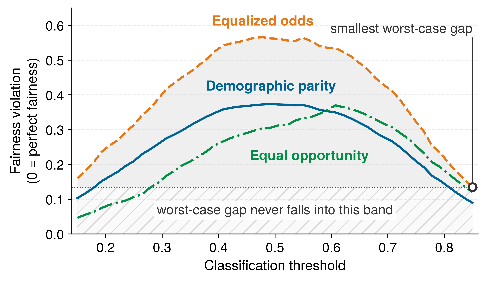
Содержание главы
Содержание
- 16 Ответственный ИИ
- 16.1 Императив управления
- 16.2 Жизненный цикл управления и assurance
- 16.3 Основные принципы и жизненный цикл МЛ
- 16.4 Архитектурные компромиссы
- 16.5 Справедливость и смягчение смещения
- 16.6 Приватность и управление данными
- 16.7 Объяснимость и прозрачность
- 16.8 Безопасность ИИ, робастность и генеративные контуры управления
- 16.9 Подотчётность, управление и социотехническая динамика
- 16.10 Управление ответственным ИИ в масштабе парка
- 16.11 Заблуждения и ловушки
- 16.12 Итоги
16 Ответственный ИИ
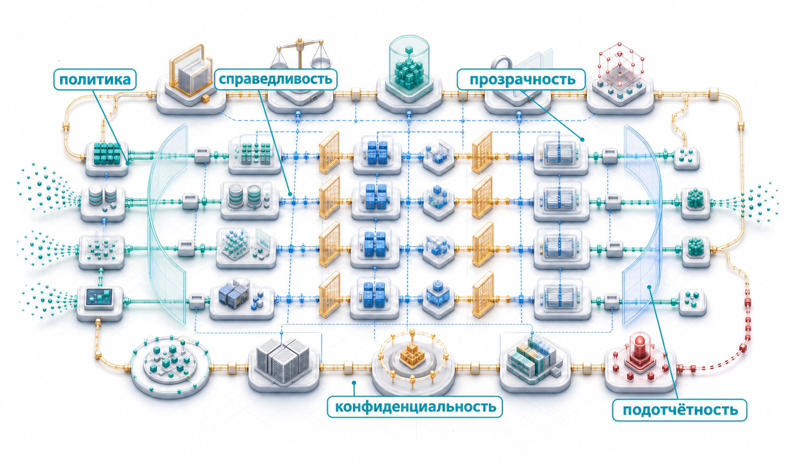
Назначение
Почему точная и быстрая модель всё равно может оказаться непригодной к развёртыванию?
В высокорисковых регулируемых областях модель, которая не может объяснить или задокументировать своё поведение, поддержать аудит или выполнить применимые правила недискриминации, может провалить проверку при развёртывании независимо от своей точности или задержки. Сильные агрегированные показатели могут скрывать устойчивый паттерн ошибок, сосредоточенный среди людей, почти не имеющих возможности оспорить результат. Увеличение пропускной способности при этом лишь расширяет охват этого сбоя. Оценка на одном узле способна измерить предсказания, но не может установить, использует ли каждая развёрнутая версия утверждённую политику принятия решений и может ли затронутый человек получить исправление. В масштабе всего парка записи, модели, интерфейсы и организационные полномочия должны оставаться связанными по мере изменения каждого из них. Объяснение, доставленное слишком поздно, может оказаться бесполезным для того, кто стоит перед неотложным решением; бессрочное хранение каждой детали способно породить отдельную проблему приватности. Разбор оповещения требует персонала и доказательств, а исправление решения может потребовать действий в нескольких зависимых сервисах. Эти обязательства расходуют ресурсы и могут ограничивать развёртывание даже при достаточной ёмкости инференса. Они сохраняются и после запуска: изменение популяции, рабочего процесса или поведения модели может обесценить доказательства, на которых изначально основывалась эксплуатация. Инженерия ответственного ИИ делает эти обязательства частью ежедневной работы организации, с ресурсами и полномочиями действовать, когда измеряемое поведение не дотягивает. В терминах C³ ответственность — это ограничение координации: парку нужны доказательства и полномочия, чтобы решать, когда вычисления могут выполняться, когда они должны остановиться и кто может исправлять их последствия.
Цели обучения
- Объяснить, почему точная и быстрая модель может всё же провалить проверку при развёртывании и почему каждая мера защиты — это бюджетируемая ёмкость, размещение которой определяет, кого защищают
- Вычислять метрики справедливости и сравнивать наблюдательные и причинные определения с учётом компромиссов между априорными вероятностями и предсказаниями
- Спроектировать выявление смещения и мониторинг справедливости по демографическим группам, дрейфу и обратным связям масштаба парка
- Оценить механизмы приватности и машинного «забывания» (machine unlearning) по требованиям к точности, вычислениям и управлению
- Выбрать методы объяснения с учётом ограничений задержки, вычислений, проверяемости и возможности оспаривания пользователем
- Проанализировать циклы обратной связи «человек — ИИ», смещение автоматизации и конфликты ценностей в контекстах развёртывания
- Построить проверяемый assurance case, включая ограниченную устойчивость и средства контроля генеративных систем, — от предполагаемого использования и доказательств до запуска, исправления, существенного изменения и вывода из эксплуатации
16.1 Императив управления
В 2018 году Reuters сообщило, что Amazon отказалась от экспериментального алгоритма найма, обученного на исторических данных резюме, после обнаружения того, что он систематически дискриминировал женщин-кандидатов (Dastin 2018 г.). Исторические записи давали вычислимую цель обучения, но воспроизведение паттернов этих записей не тождественно справедливому отбору квалифицированных кандидатов. Эксперимент обнажил расхождение между выученной целью и законной целью найма: исторический успех мог кодировать неравный доступ, а не квалификации, основанные на заслугах.
Это расхождение между работоспособным конвейером и законным результатом лежит за пределами традиционной системной повестки — архитектуры, инфраструктуры, обработки данных, безопасности и устойчивости (Stoica и др. 2017 г.). Предыдущие главы сделали парк защищённым от злоумышленников, устойчивым к дрейфу и подотчётным за потребляемую энергию. Анализ размещения в Экологическая справедливость и ответственное развитие оставил один вопрос, который учёт энергии и углерода мог выявить, но не решить: кто несёт экологические издержки того, где работает парк. Ответственный ИИ проносит этот вопрос от ресурсного следа парка к решениям, которые парк принимает о людях. Как показывает провал с наймом, сервис, остающийся доступным, защищённым, точным и в рамках ресурсного бюджета, всё равно может распределять вред несправедливо или лишать затронутых людей возможности исправления. Поэтому справедливость, прозрачность и подотчётность нуждаются в измеримых требованиях и операционных средствах контроля наряду с механизмами, которые удерживают парк в работе.
В многоуровневой иерархии парка в Рисунок 4 ответственный ИИ дополняет диапазон Governance — точку, где система встречается с реальным миром. Диапазоны Infrastructure, Distribution и Serving под ним поставляют вычисления, перемещение данных, распределённое исполнение и инфраструктуру обслуживания. Внутри диапазона Governance строка Assurance вносит средства безопасности и механизмы устойчивости, а строка Governance & Sustainability — бюджеты устойчивого развития. Ответственный ИИ взвешивает эти доказательства и добавляет ограничения, определяющие, почему машина работает и кому она служит. Он требует от владельцев выявлять, оценивать, ограничивать и исправлять вред от в остальном корректно работающей системы. Наряду с учётом времени исполнения по Закону парка ответственный ИИ добавляет условия продолжения эксплуатации: доказательства того, что развёртывание остаётся в утверждённых рамках, и полномочия вмешаться, когда это не так. Токсичные результаты могут подрывать доверие пользователей, дискриминационные решения — искажать будущие обучающие данные, когда эти решения формируют сбор данных, а нарушения приватности — требовать ограничения или приостановки сервиса. Эти последствия зависят от развёртывания, но обязанность расследовать вред не зависит от того, деградирует ли он также качество модели. Поэтому ответственный ИИ формирует выбор цели и операционные ограничения с самого начала проектирования.
↩︎ Закон парка, регулирующий время исполнения и эффективность масштабирования, установлен в Закон парка.
Определение 16.1: Ответственный ИИ
Ответственный ИИ (Responsible AI) — это практика проектирования, аудита и эксплуатации систем машинного обучения по измеримым стандартам справедливости, безопасности, приватности и подотчётности, переводящая этические принципы в проверяемые свойства системы, которые ограничивают обучение модели, решения о развёртывании и операционный мониторинг.
- Значимость: ограничения ответственного ИИ налагают реальные издержки: обучение с учётом справедливости может удлинять обучающие прогоны, мониторинг смещения в реальном времени — расходовать задержку на пути обслуживания, а объяснимость по запросу — требовать дополнительных вычислений модели или ёмкости асинхронных воркеров. В масштабе парка эти меры защиты должны бюджетироваться как средства контроля надёжности или безопасности. И наоборот, система распознавания лиц с устойчивым разрывом ошибок подгруппы может затронуть миллионы пользователей до обнаружения, создавая регуляторные издержки и издержки ответственности, многократно превышающие инвестиции в мониторинг.
- Различие: этика ИИ исследует нормативные принципы того, что системы должны делать; инженерия ответственного ИИ превращает выбранные требования в средства контроля и доказательства. Алгоритмы выявления смещения, реализации дифференциальной приватности, журналы аудита и архитектурные ограждения поддерживают ограниченные утверждения, которые проверяющие могут инспектировать. Выбор законных требований и оценка оставшегося вреда по-прежнему требуют предметной экспертизы, участия заинтересованных сторон и подотчётных полномочий.
- Типичная ошибка: распространённое заблуждение состоит в том, что ответственный ИИ — это финальная проверка на соответствие, применяемая к готовой модели. Постобработка, корректирующая пороги решений обученной модели, может удовлетворить выбранные метрики на наблюдаемых результатах, но коррекция порогов не может починить неверную цель, ненадёжные метки или недостающую информацию. Эти дефекты могут требовать изменений в сборе данных, метках или выученных представлениях. Средство исправления зависит от источника вреда; финальная проверка порогов не может заменить его расследование.
Эта практика должна учитывать социотехническую динамику1, выходящую за пределы любой отдельной системы и действующую внутри организационных и регуляторных контекстов. Механизмы приватности, методы устойчивости и метрики устойчивого развития дают технический фундамент; ответственный ИИ добавляет поверх них выявление смещения, организационные структуры управления и процессы вовлечения заинтересованных сторон. Такая интеграция — значительная инфраструктурная инвестиция, а накладные расходы на обучение, инференс и память, квантифицированные в Глава 16.4.2, должны выделяться как необходимая ёмкость — аналогично тому, как в распределённых системах бюджетируются безопасность и резервирование.
Отношение к справедливости, прозрачности, подотчётности и приватности как к строгим инженерным спецификациям, а не абстрактным идеалам, превращает ответственный ИИ из устремления в практику. Каждый принцип становится проектным ограничением с измеримыми критериями, привязанным к конкретному этапу жизненного цикла машинного обучения. Жизненный цикл assurance сначала устанавливает, кто может задавать и утверждать эти ограничения, а уровень развёртывания определяет, где может работать каждое средство контроля и сколько оно стоит. Затем справедливость, приватность, объяснимость и безопасность разрабатываются по одному: каждый принцип — от определения через измерение до средств контроля, которые его обеспечивают. Подотчётность и социотехнический анализ завершают аргументацию, проверяя, остаются ли эти средства контроля эффективными внутри человеческих рабочих процессов и институтов.
16.2 Жизненный цикл управления и assurance
Реестр моделей может доказать, какие веса попали в продакшен, но он не может доказать, что развёртывание было обосновано. Это суждение требует цепочки доказательств, связывающей контекст развёртывания с затронутыми людьми, предвидимыми видами вреда, измеримыми требованиями, реализованными средствами контроля, подотчётными владельцами и полномочиями запустить или остановить систему. Поэтому ответственному ИИ нужен жизненный цикл assurance: повторяемый операционный путь, который превращает нормативные обязательства в проверяемые утверждения и сохраняет эти утверждения действительными по мере изменения системы.
↩︎ Реестр моделей, фиксирующий каждую развёрнутую версию и её восходящие и нисходящие зависимости, установлен в Реестры моделей в масштабе.
Жизненный цикл начинается до выбора модели. Сначала команды определяют предполагаемое использование, запрещённые варианты использования, затронутые стороны, операционную среду и последствия решений. Затем они выявляют вред и требования, включая производительность подгрупп, приватность, безопасность, устойчивость, эколого-энергетическую ответственность, обязательства по человеческому надзору и возможности оспаривания. Некоторые средства контроля реализуются локально; другие наследуются от поставщиков данных, вендоров фундаментальных моделей, облачных платформ или нисходящих операторов. Каждый унаследованный контроль нуждается в контрактном интерфейсе, который фиксирует, что гарантирует поставщик, какими доказательствами подкреплена эта гарантия и какие остаточные риски остаются у организации, выполняющей развёртывание.
Выбору ограничений нужно явное разделение полномочий. Предметные эксперты и затронутые стороны выявляют существенный вред и приемлемые варианты использования; специалисты по политике и праву выявляют применимые обязательства; инженеры определяют, что может быть измерено и обеспечено. Подотчётный орган запуска утверждает полученные критерии и фиксирует неразрешённые разногласия. Удобная метрика или доступная реализация не даёт инженерной команде права выбирать, чьи ошибки важнее.
Получающийся assurance case — не единый документ о соответствии, а версионированный набор связанных артефактов, структурирующий подотчётность на протяжении жизненного цикла системы. В его основе лежит явное утверждение (claim), определяющее свойство, требуемое для указанного использования и операционной оболочки. Аргументация (argument) формулирует, как операционные средства контроля и эмпирические наблюдения обосновывают это утверждение, опираясь на доказательства (evidence) из воспроизводимых оценок, аудитов, журналов доступа, документации и исследований пользователей. Эти утверждения и аргументации действительны только при заявленных допущениях (assumptions) относительно границ среды, популяции, поставщиков и рабочих процессов. Для обеспечения операционных полномочий каждый assurance case указывает подотчётного владельца (owner), уполномоченного блокировать запуск, ограничивать использование или требовать исправления. Полномочия владельца регулирует явное правило инвалидации (invalidation rule). Оно определяет измеримое изменение производительности, сдвиг распределения или операционный инцидент, которые прекращают действие прежнего одобрения и запускают переоценку. Доказательства достигают утверждения только через аргументацию и только внутри заявленных допущений, а решение владельца о запуске действует лишь до срабатывания правила инвалидации (Рисунок 1).
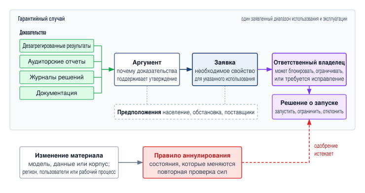
Эта структура предотвращает распространённую категориальную ошибку. Дашборд справедливости, счётчик приватности, отчёт ред-команды или инвентаризация углерода — это доказательства для ограниченного утверждения; ни один из них сам по себе не является доказательством того, что система целиком ответственна. Эти доказательства становятся операционными только тогда, когда владелец может на их основе действовать, а затронутые люди имеют путь оспорить решение и получить исправление (Таблица 1).
| Этап жизненного цикла | Требуемый артефакт | Операционное решение |
|---|---|---|
| Контекст и затронутые стороны | Заявление о предполагаемом использовании, запрещённые варианты использования, карта заинтересованных сторон, анализ влияния решений | Является ли это использование законным и в рамках организационных полномочий? |
| Риски и требования | Модель вреда, правовые и политические обязательства, измеримые критерии приёмки | Какие риски должны быть предотвращены, ограничены, переданы или приняты? |
| Средства контроля и зависимости | Инвентаризация средств контроля, доказательства поставщиков, происхождение данных и моделей, фильтры вывода | Достаточны ли локальные и унаследованные средства контроля для операционной оболочки? |
| Оценка и assurance | Assurance case, разбитые по группам результаты с неопределённостью, доказательства устойчивости и безопасности, учёт устойчивого развития | Поддерживают ли доказательства запуск, ограниченный запуск или отклонение? |
| Орган запуска | Подписанная запись о решении, владелец остаточного риска, пути отката и апелляции | Кто может санкционировать развёртывание и кто может его остановить? |
| Эксплуатация и реагирование на инциденты | Пороги мониторинга, ответственные за эскалацию, журнал инцидентов, workflow исправления | Когда система должна деградировать, откатиться, уведомить, компенсировать или приостановиться? |
| Существенное изменение | Классификация изменения, оценка воздействия, объём ревалидации | Делает ли новая модель, набор данных, инструмент, регион или вариант использования недействительным прежнее одобрение? |
| Вывод из эксплуатации | План декомиссии, запись о хранении и удалении, уведомление пользователей и зависимых систем | Как закрываются доступ, данные, модели, интерфейсы и неразрешённые виды вреда? |
В момент выпуска контракт оценки, определённый в Сквозной контракт оценивания, привязывает эти assurance-утверждения к конкретной модели, рабочей нагрузке, органу приёмки, цели отката и сроку хранения доказательств. Assurance case объясняет, почему развёртывание обосновано; контракт оценки обеспечивает, чтобы продвижение и инвалидация исполняли это суждение относительно одного воспроизводимого артефакта.
Именованные фреймворки организуют эту работу на разных уровнях. AI Risk Management Framework Национального института стандартов и технологий (NIST) структурирует деятельность вокруг функций Govern, Map, Measure и Manage. ISO/IEC 42001 специфицирует организационную систему менеджмента ИИ, а ISO/IEC 23894 даёт руководство по управлению рисками ИИ. Рекомендации Организации экономического сотрудничества и развития (OECD) и ЮНЕСКО (UNESCO) формулируют более широкие принципы и общественные обязанности (Tabassi 2023 г.; International Organization for Standardization и International Electrotechnical Commission 2023 г.b, 2023 г.a; Organisation for Economic Co-operation and Development 2024 г.; UNESCO 2022 г.). Спроецированные на один операционный жизненный цикл, эти перспективы дополняют друг друга, а не служат взаимозаменяемыми чек-листами (Таблица 2).
| Ответственность в жизненном цикле | Акцент NIST AI RMF | Акцент системы менеджмента и публичной политики |
|---|---|---|
| Установить контекст, затронутые стороны и полномочия | Govern и Map | Организационный контекст, лидерство, участие заинтересованных сторон и человеческий надзор |
| Измерить риски и собрать доказательства | Measure | Оценка рисков, документированные цели, оценка, прозрачность и прослеживаемость |
| Решать, эксплуатировать и реагировать | Manage | Операционные средства контроля, подотчётность, реагирование на инциденты, исправление и непрерывное улучшение |
| Переоценить изменения и вывод из эксплуатации | Govern и Manage | Управление изменениями, корректирующие действия, пересмотр жизненного цикла и обязательства по декомиссии |
Регулирование превращает части этого жизненного цикла в юридические обязательства, причём делает это путём классификации сценариев использования, а не сведения риска ИИ к одному проверяемому показателю. EU AI Act (2024) использует структуру, основанную на уровнях риска, которая включает запрещённые практики, высокорисковые системы, обязанности по прозрачности для некоторых систем и сценарии с минимальным риском или без него. Высокорисковые развёртывания сталкиваются с обязательствами по подтверждению соответствия, документированию и журналированию (European Parliament and Council of the European Union 2024 г.). Более узкие законы регулируют конкретные сценарии, как это делает Illinois Artificial Intelligence Video Interview Act в отношении автоматизированного анализа записанных собеседований (Illinois General Assembly 2020 г.). Федеральная политика США с 2023 года неоднократно менялась. Пороги отчётности о безопасности, установленные Executive Order 14110, были отменены в январе 2025 года, а последующие указы перенаправили акцент ведомств на инновации в области ИИ, кибербезопасность и защиту критической инфраструктуры (Executive Office of the President 2023 г., 2025 г.a, 2025 г.b, 2026 г.). Временные меры Китая по генеративному ИИ (2023) обязывают некоторые публичные сервисы проходить оценку безопасности и регистрацию алгоритмов, а не универсальную оценку перед выпуском (Cyberspace Administration of China и др. 2023 г.).
Эти требования нельзя свести к единому чек-листу. Для глобального парка МЛ-систем применимые обязательства зависят от сервиса, затрагиваемой группы населения, организационной роли и юрисдикции, а не только от расположения серверов. Организация, выполняющая развёртывание, должна определить применимые обязательства, назначить владельцев процедур и требуемых ими доказательств и связать утверждённые политики с условиями развёртывания в control plane — слое парка, который решает, что и куда можно разворачивать. Control plane сохраняет их версии и распространяет изменения на компоненты, которые эти политики исполняют.
↩︎ Управление (governance) как control plane парка машинного обучения вводится в Управление и системный риск в масштабе.
Три детали не позволяют этому жизненному циклу стать церемониальным. Во-первых, оценки справедливости должны сопровождаться знаменателями, доверительными интервалами и ограничениями покрытия данных; зашумлённый разрыв в подгруппе должен запускать расследование, а не автоматические заявления либо о дискриминации, либо о безопасности. Во-вторых, доказательства устойчивого развития принадлежат тому же assurance-досье, поскольку единица измерения, граница системы, углеродный сигнал, учёт воды, распределение embodied-воздействия, неопределённость и ограничение качества определяют, является ли экологическое заявление сопоставимым и пригодным для действий. В-третьих, генеративному сервису, который извлекает документы в контекст модели, нужна граница авторизации, независимая от выравнивания модели. Области наименьших привилегий, валидация выходных данных, провенанс и отзыв должны версионироваться и отслеживаться, потому что извлечённый контекст остаётся недоверенным входом.
↩︎ Контракт измерения устойчивости, фиксирующий единицу измерения, границу системы, углеродный сигнал и правило атрибуции, вводится в Измерение и моделирование энергии.
Срок действия одобрения истекает, когда перестают выполняться его исходные предположения. Смена фундаментальной модели, распределения обучающих данных, корпуса для извлечения, региона развёртывания, группы пользователей, цели решений или человеческого процесса может быть существенной, даже если код приложения не изменился. Запись об изменении должна указывать, какие утверждения утратили силу, и выбирать минимальный обоснованный объём повторной валидации. По завершении сервиса вывод из эксплуатации должен отозвать учётные данные, безопасно остановить зависимые интерфейсы, применить правила хранения и удаления, сохранить требуемые аудиторские доказательства, уведомить затронутых пользователей и нижестоящих операторов и оставить владельца для нерешённых апелляций или вреда. Управление охватывает систему после запуска и после выключения, а не только в момент, когда ревизионная комиссия подписывает релиз, и каждый этап этого assurance-жизненного цикла зависит от перевода высокоуровневых принципов в конкретные проверки по всему МЛ-конвейеру.
16.3 Основные принципы и жизненный цикл МЛ
Assurance-кейс становится исполнимым только тогда, когда его утверждения привязаны к конкретным шлюзам конвейера: например, конвейер непрерывной интеграции может заблокировать релиз, когда оценка выявит падение точности на 15 процентов именно у пожилых пользователей. В отличие от провалившегося модульного теста или регрессии задержки, которые конвейер может проверять детерминированно, результат по подгруппе требует заданной популяции, достаточного объёма оценочных данных и согласованного критерия приёмки. Responsible AI переводит эти обязательства в шлюзы развёртывания. Конвейер непрерывной интеграции/непрерывного развёртывания (CI/CD) исполняет утверждённое правило, а подотчётный рецензент интерпретирует неопределённость и решает, поддерживают ли доказательства релиз, ограниченное использование или исправление.
Этот релизный шлюз — один из примеров общего перевода принципа в исполнимое требование. Прозрачность раскрывает, как система в целом была построена и управляема: её источники данных, процедура обучения, предполагаемые сценарии использования и известные ограничения. Объяснимость — более узкое понятие: она производит доказательства о поведении модели в конкретных решениях для заданной аудитории. Вместе они делают систему инспектируемой для разработчиков, аудиторов и затрагиваемых людей, которые должны её оценивать. Справедливость ограничивает, как могут различаться между подгруппами населения доли отобранных, частоты ошибок или смысл оценки; её нарушения могут усугубляться через петли обратной связи, как в предиктивном полицейском надзоре, при этом сервис остаётся технически доступным. Приватность ограничивает то, что система раскрывает о людях, чьи данные она использует, безопасность и устойчивость ограничивают то, как она отказывает, а подотчётность назначает владельцев, способных проследить, устранить и ответить за её результаты.
Ещё два принципа управляют целевой функцией и надзором за ней. Выравнивание ценностей2 спрашивает, отражает ли сама целевая функция легитимное человеческое намерение, а человеческий надзор3 сохраняет способность людей контролировать, исправлять или останавливать автоматизированные решения. Далее в этой главе первая группа принципов разбирается по очереди; выравнивание и надзор возвращаются там, где автономность и человеческие процессы делают их обязательными, в Глава 16.8.3 и Глава 16.9.4.2.
Ни один принцип сам по себе не гарантирует ответственной системы. Принципы пересекаются, конкурируют за приоритет, когда бюджеты конечны, и действуют в разных фазах жизненного цикла responsible AI — от сбора данных через обучение модели, оценку и развёртывание до мониторинга (Таблица 3).
| Принцип | Сбор данных | Обучение модели | Оценка | Развёртывание | Мониторинг |
|---|---|---|---|---|---|
| Справедливость | Репрезентативная выборка | Алгоритмы, учитывающие смещения | Метрики на уровне групп | Подстройка порогов | Производительность по подгруппам |
| Объяснимость | Стандарты документирования | Интерпретируемая архитектура | Анализ поведения модели | Объяснения для пользователей | Журналы качества объяснений |
| Прозрачность | Отслеживание источников данных | Документирование обучения | Отчётность о производительности | Model cards | Отслеживание изменений |
| Приватность | Механизмы согласия | Методы сохранения приватности | Оценка воздействия на приватность | Безопасное развёртывание | Журналы аудита доступа |
| Подотчётность | Фреймворки управления | Журналирование решений | Создание аудиторского следа | Механизмы переопределения | Отслеживание инцидентов |
| Устойчивость | Обеспечение качества | Методы устойчивого обучения | Стресс-тестирование | Обработка отказов | Мониторинг производительности |
Ограничения справедливости и приватности начинаются со сбора данных; устойчивость аналогично зависит от качества данных и решений при обучении, тогда как подотчётность требует поименованных владельцев ещё до развёртывания. Их операционные последствия становятся видимыми, когда система обслуживает пользователей, а команды должны реагировать на отказы. Объяснимость охватывает весь жизненный цикл, поддерживая отладку модели на этапе проектирования и доказательства о решениях во время эксплуатации. Это сопоставление подтверждает, что responsible AI — это многофазное архитектурное обязательство, а не шаг комплаенса постфактум, а то, как реализуется каждая фаза, зависит от яруса развёртывания, на котором работает модель.
16.4 Архитектурные компромиссы
Централизованный аудит может объединить предсказания, демографические атрибуты и отложенные исходы, когда доступ к этим записям авторизован. Федеративная модель, работающая на миллионе смартфонов, может не предоставить такого объединённого набора данных. Тогда один и тот же критерий справедливости требует иного пути получения доказательств, например ограниченной агрегированной статистики или отдельно управляемой аудиторской выборки. Архитектура развёртывания определяет, где могут быть собраны доказательства и кто может действовать на их основании.
Эти архитектурные различия перераспределяют как достижимые средства защиты, так и ответственные стороны. В следующем сравнении используются четыре яруса развёртывания, различающиеся вычислениями, связностью и полномочиями обновления: Cloud ML работает на репликах обслуживания в парках дата-центров, тогда как Edge ML переносит исполнение на шлюзы и серверы рядом с источником данных. На стороне клиента Mobile ML работает на устройствах телефонного класса с длительной мощностью в единицы ватт — это режим Архетипа C (Federated MobileNet). TinyML работает на микроконтроллерах с сотнями килобайт памяти и милливаттными лимитами мощности — крайний случай ниже Архетипа C, часто вообще без канала обновления. Остальные маяки этой книги находятся в облачном ярусе: Архетип A (GPT-4/Llama-3) и Архетип B (DLRM at Scale) обслуживаются из парков дата-центров, и даже Архетип C полагается на облачный агрегатор для доказательств на уровне парка. У TinyML нет собственного маяка; он фигурирует здесь потому, что отмечает предельный случай — развёртывание, чьи средства защиты должны быть зафиксированы до отгрузки.
↩︎ Архетип C (Federated MobileNet) и его энергопакет в единицы ватт на устройство вводятся в Архетип C (федеративный MobileNet).
Доступность ресурсов, ограничения задержки, дизайн пользовательского интерфейса и наличие или отсутствие связности определяют, возможно ли последовательно исполнять принципы responsible AI в контекстах развёртывания. Одна и та же модель может поддерживать богатые объяснения, непрерывный мониторинг и централизуемую аудируемость в облаке, но требовать статической валидации и упрощённых средств защиты, будучи встроенной в устройство с нестабильной связностью. Выбор яруса — это ещё и решение о равенстве доступа, потому что защита, которой требуется обмен с дата-центром, доступна только пользователям, чья связность её поддерживает (Глава 16.4.3).
16.4.1 Проектные компромиссы
Переход между этими четырьмя ярусами вынуждает делать конкретные компромиссы всякий раз, когда две цели responsible AI конкурируют за один и тот же конечный бюджет. Контроллер автономного торможения или носимый распознаватель жестов на edge не может тратить сотни миллисекунд на вычисление атрибуций признаков для каждого кадра датчика, а персонализированная модель, адаптирующаяся на одном телефоне, не может увидеть, не расширяют ли её локальные обновления разрывы в ошибках для остальной части популяции. Поскольку каждый ярус фиксирует, сколько вычислений, задержки, связности и видимости данных может получить средство защиты, оптимизация под один принцип регулярно ограничивает другой.
Облачные системы могут выделять обширный мониторинг, аудиты справедливости, сервисы интерпретируемости и приватность-сохраняющие инструменты, используя общие вычисления и хранилище. Централизованная обработка данных также концентрирует подверженность слежке и утечкам. Исполнение на устройстве может удерживать сырые данные локально, но контроль пользователя по-прежнему зависит от интерфейсов, разрешений, правил хранения и полномочий обновления. Пост-развёртывание: видимость, инструменты справедливости и адаптация зависят от того, какие пути доказательств и сопровождения предоставляет архитектура.
Напряжения между целями часто проявляются на архитектурном уровне. Когда у конечной точки слишком мал бюджет задержки для дорогостоящего объяснения на каждом инференсе, проектировщики могут оценивать облегчённые методы в этом бюджете, вычислять подходящие сводки заранее или сохранять записи о решениях для асинхронного анализа. Аудитория объяснения и требуемое время доставки определяют, какой из этих путей может удовлетворить обязательство.
Конфликты также возникают между персонализацией и справедливостью. Системы, адаптирующиеся к индивидуумам на основе локальных данных использования, часто лишены глобального контекста, необходимого для оценки диспропорций между подгруппами населения. Чтобы персонализированные предсказания не создавали систематическое исключение, система должна сбалансировать адаптацию на уровне пользователя с механизмами равенства и аудируемости на уровне групп.
Цели приватности и устойчивости тоже могут конфликтовать. Журналирование редких событий или выпадающих пользователей помогает диагностировать отказы надёжности, но записи могут раскрывать чувствительное поведение. Если сырые записи должны оставаться локальными или зашифрованными, процесс улучшения нуждается в авторизованном пути доказательств, например ограниченном ревью или агрегированной диагностике. Требования устойчивости принадлежат исходному проекту; последующая доработка зависит от того, поддерживают ли её сохранённые доказательства и механизм обновления.
Энергетические бюджеты могут ограничивать частоту и размещение средств защиты. Снижение стоимости модели само по себе не требует ослабления мониторинга справедливости; команды могут сравнивать локальные проверки, выборочные аудиты и оф-девайс анализ с учётом доказательств и сроков реагирования. Средства приватности сталкиваются с тем же ограничением. Механизм дифференциально-приватного (DP) обучения ограничивает вклад каждого человека и добавляет калиброванный шум, так что добавление или удаление записи любого одного человека меняет вероятность любого выпущенного результата лишь в пределах заданной границы. В федеративном обучении ограничение, генерация шума и коммуникация могут потреблять дополнительную энергию, но их размещение и стоимость зависят от механизма. Дизайн с центральным DP может добавлять шум у куратора — доверенного сервера, который комбинирует ограниченные обновления, — тогда как дизайн с локальным DP размещает рандомизацию на клиенте. Следовательно, реализуемость на батарейном питании требует измерения выбранной реализации.4
↩︎ Дифференциальная приватность, её бюджет приватности и бухгалтер, который его отслеживает, вводятся в Дифференциальная приватность.
Вместе эти примеры развёртывания выявляют более широкую системную проблему. Принципы responsible AI нельзя рассматривать изолированно. Они взаимодействуют, и оптимизация под один может ограничить другой. Подходящий баланс зависит от архитектуры развёртывания, приоритетов заинтересованных сторон, специфичных для домена рисков, последствий ошибки и воздействия требований к вычислительным ресурсам на окружающую среду и распределение благ. Поэтому проектирование ответственного машинного обучения зависит от явной фиксации этих ограничений до выбора методов, чтобы итоговая система могла быть оценена в том контексте развёртывания, в котором ей действительно предстоит работать.
Сравнение этих конфигураций (Таблица 4) демонстрирует, что ни один контекст развёртывания не доминирует по всем принципам; каждый делает собственные архитектурные уступки. Облачные системы поддерживают вычислительно дорогие методы объяснения и централизованный мониторинг справедливости. Атрибуция значений Шепли (SHAP) начисляет каждому входному признаку его среднюю предельную вношу в предсказание по подмножествам остальных признаков. Локальные интерпретируемые объяснения, не зависящие от модели (LIME), подгоняют простую суррогатную модель ко многим возмущённым копиям одного входа. Оба метода требуют множества дополнительных вычислений модели на одно объяснённое решение, и Глава 16.7 их разворачивает. Облачные развёртывания могут себе это позволить, но вносят риски приватности через агрегацию данных. Развёртывания на edge и мобильных устройствах предлагают более сильную локализацию данных, но ограничивают пост-развёртывание: наблюдаемость и глобальную оценку справедливости. Системы TinyML сталкиваются с особенно тесными бюджетами; их планы валидации, мониторинга и обновления должны отражать реально предоставляемые связность и хранилище. Эти ограничения также определяют, какие пользователи получают какие средства защиты, — вопрос равенства, поднятый в Глава 16.4.3. Понимание этих ограничений развёртывания даёт необходимый контекст для технических методов, переводящих принципы responsible AI в производственные средства контроля.
| Принцип | Cloud ML | Edge ML | Mobile ML | TinyML |
|---|---|---|---|---|
| Объяснимость | Поддерживает сложные модели и методы вроде SHAP и сэмплирующих подходов | Нужны лёгкие низкозадержечные методы вроде карт значимости | Требуются интерпретируемые выходные данные для пользователей, более глубокий анализ часто откладывается в облако | Сильно ограничена из-за скудного железа; в основном статична или только на этапе компиляции |
| Справедливость | Большие наборы данных позволяют обнаруживать и устранять смещения | Локализованные смещения труднее обнаружить, но возможны подстройки на устройстве | Высокая персонализация усложняет отслеживание справедливости на уровне групп | Минимальные данные ограничивают анализ и устранение смещений |
| Приватность | Централизованные данные под угрозой утечек, но можно использовать сильное шифрование и дифференциальную приватность | Чувствительные личные данные на устройстве требуют защит на самом устройстве | Жёсткая связь с идентичностью пользователя требует дизайна с учётом согласия и локальной обработки | Распределённые данные снижают централизованные риски, но создают трудности для анонимизации |
| Безопасность | Уязвима к взлому и массированным атакам | Взаимодействие с реальным миром делает надёжность критичной | Работает под надзором пользователя, но всё равно требует корректного отказа | Нужны статические защитные оболочки, watchdog’и и fail-safe поведение |
| Подотчётность | Корпоративные политики и аудиты позволяют прослеживаемость и надзор | Фрагментированные цепочки поставок усложняют подотчётность | Требуются понятные пользователю раскрытия и каналы обратной связи | Прослеживаемость необходима через длинные сложные аппаратные цепочки |
| Управление | Применимое право и надзор; централизованные доказательства и поименованные владельцы | Применимое право и надзор; распределение обязанностей между интеграторами | Применимое право и надзор; координация обязанностей платформы и приложений | Применимое право и надзор; сохранение доказательств при обслуживании и выводе из эксплуатации |
Анализ развёртывания определяет, где должна быть реализована каждая обязанность. Ограниченная конечная точка может записывать ограниченный объём метаданных решений, в то время как backend агрегирует метрики по подгруппам, хранит доказательства аудита и выдаёт объяснения. Автономной конечной точке вместо этого нужен определённый путь извлечения доказательств и обновлений — либо рабочий диапазон эксплуатации, не зависящий от недоступных средств контроля. Ёмкость устройства ограничивает размещение и частоту; сама по себе она не снимает с оператора парка устройств ответственность за предоставление этого контроля.
Размещение по уровням решает, где выполняется средство контроля; оно не решает, какой контроль нужен дефекту. Как показал пример с наймом в начале главы, предсказательная точность на исторических метках не устанавливает легитимность самой целевой величины. Пороговая постобработка может изменить расхождение в частоте решений, тогда как неподходящая целевая величина может потребовать изменения меток и обучения, и оба варианта нуждаются в валидации и операционной ответственности.
Во всех разделах о принципах, начиная с Глава 16.5, каждый технический контроль выполняет одну из трёх задач. Обнаружение выявляет проблему достаточно рано, чтобы вмешаться; смягчение изменяет данные, обучение или политику принятия решений, чтобы уменьшить вред; валидация собирает доказательства, необходимые инстансу, принимающему решение о запуске, чтобы принять остаточный риск. Решение о том, на каком из четырёх уровней может выполняться каждая задача, требует сначала оценки стоимости этих механизмов в точности, вычислениях и памяти.
16.4.2 Вычислительная стоимость методов ответственного ИИ
Добавление состязательного обучения, которое вычисляет семишаговую атаку на каждом батче перед шагом обучения, увеличивает вычисления на батч примерно в восемь раз, а запуск независимых от модели SHAP-атрибуций на каждом запросе может умножить работу инференса на сотни или тысячи вычислений. Техники обнаружения, смягчения, валидации, приватности и объяснения каждая накладывают свой особый расход на обучение, инференс, память и точность (Таблица 5). Среди алгоритмов SHAP полный перебор вычисляет модель на каждом подмножестве признаков, выборочный KernelSHAP оценивает атрибуции по случайной выборке подмножеств, а TreeSHAP вычисляет их точно по структуре древовидной модели (Глава 16.7.2). Заблаговременная оценка этих расходов превращает методы ответственного ИИ из бесплатных этических ярлыков в конкретные решения о ёмкости.
↩︎ Состязательное обучение вводится в Процесс состязательной защиты.
| Техника | Потеря точности | Расход на обучение | Стоимость инференса | Расход памяти |
|---|---|---|---|---|
| Дифференциальная приватность (DP-SGD) | 1–20% | 30–300% | Минимальная | 10–20% |
| Обучение с учётом справедливости | 1–3% | 5–15% | Минимальная | 5–10% |
| Выборочный KernelSHAP | N/A | N/A | 50–200% | 20–100% |
| Полный перебор SHAP | N/A | N/A | 50–1,000× | 50–200% |
| Состязательное обучение | 3–15% | 2–11× | Минимальная | 50–100% |
| Федеративное обучение | 5–15% | 200–500% | Минимальная | 100–300% |
Эти диапазоны расходов следует читать как сценарные допущения, а не как утверждение, что какая-либо процитированная работа устанавливает единственный универсальный расход.5 Фактический расход существенно зависит от архитектуры модели, размера набора данных, силы атаки, метода объяснения, аппаратного обеспечения, схемы коммуникации и качества реализации. Средства контроля ответственного ИИ потребляют реальную ёмкость обучения, обслуживания, памяти или экспертизы, поэтому их нужно закладывать в бюджет до запуска. Организация, не способная позволить себе одну конфигурацию, должна сопоставить альтернативы — меньшую модель, выборочный аудит или асинхронные объяснения — с теми же требуемыми доказательствами. Ограничения ресурсов могут сузить допустимый объём развёртывания; они не снимают обязанность. То, кто может позволить себе какую конфигурацию, — это, следовательно, вопрос равенства, а не только вопрос ёмкости.
16.4.3 Требования к ресурсам и последствия для равенства
Муниципальная клиника или школьный округ, работающие в условиях жёсткого бюджета на вычисления, не могут позволить себе удвоить обучающий кластер ради дифференциальной приватности или выделить дополнительные GPU-реплики для объяснений Шэпли в реальном времени. Каждая ячейка Таблица 3 — это работа, которую кто-то должен оплатить: репрезентативной выборке нужно приобретение данных, метрикам по подгруппам нужны размеченные данные для оценки и аналитическая ёмкость, а объяснениям для пользователей — ёмкость обслуживания. Когда небольшие организации не могут профинансировать каждую защиту из таблицы, люди, которым они служат, получают меньше защит, чем пользователи более ресурсообеспеченного развёртывания. Крупномасштабные развёртывания, зависящие от кластеров ускорителей и низкозадержечной связности, likewise исключают пользователей, чьи сети или устройства не соответствуют этим допущениям.
Расходы в Таблица 5 определяют высоту этих барьеров, и они оплачиваются энергией, а не только ёмкостью. Специфичные для модели алгоритмы, аппроксимация, кэширование и выборочная генерация меняют этот расход; асинхронное выполнение уводит работу с пути запроса, не устраняя её. Система с высоким трафиком, обслуживающая эти функции 10 миллионам пользователей, должна заложить эту работу в бюджеты путей, где она выполняется, а затем определить, достаточно ли существующей ёмкости или нужны дополнительные ресурсы.
Размещение инфраструктуры добавляет ещё два распределительных эффекта. Решения о расположении дата-центров, оптимизирующие стоимость энергии и задержку, могут концентрировать локальные экологические издержки на ближайших сообществах, имевших мало влияния на решение.6 Связность также влияет на доступ к средствам защиты. Объяснение для пользователя, требующее низкозадержечного обращения к дата-центру, может не уложиться в срок на медленной сети, тогда как серверный мониторинг справедливости может анализировать записанные решения без ещё одного обращения пользователя. Архитектура должна отличать непосредственные потребности пользователя от аудиторской работы, которая может выполняться асинхронно. Вычислительное равенство, таким образом, зависит от решений о размещении наряду с алгоритмическим дизайном, и кейс гарантий должен фиксировать эти распределительные эффекты наряду с групповыми метриками модели.
Вычислительные расходы и архитектурные ограничения определяют, какие средства контроля может выдержать развёртывание. При наличии этих границ по уровням и ёмкости следующие четыре раздела рассматривают каждый принцип по очереди, начиная с того, как система определяет, измеряет и смягчает несправедливые расхождения.
16.5 Справедливость и смягчение смещения
Модель кредитования может одобрять 70 процентов заявок одной группы и 40 процентов другой, сообщая при этом единственную итоговую точность. Выявить этот разрыв, решить, какой разрыв развёртывание обязано закрыть, и держать его видимым после запуска — это отдельные инженерные задачи. Формальные критерии определяют расхождение, статистические тесты решают, превышает ли оно шум выборки, а инфраструктура мониторинга отслеживает его в продакшене.
16.5.1 Справедливость в машинном обучении
Решение о том, нарушает ли 30-пунктовый разрыв в одобрениях справедливость, требует большего, чем сравнение двух средних, потому что автоматизированные решения в найме, кредитовании и здравоохранении наследуют десятилетия структурного неравенства, закодированного в исторических данных. Первая инженерная задача — формализовать «равноправное обращение» как условную вероятность, которую конвейер может измерять и обеспечивать.
Определение 16.2: Алгоритмическая справедливость
Алгоритмическая справедливость — это семейство критериев для оценки равноправного обращения и результатов в автоматизированных решениях. Групповые критерии, развиваемые здесь, сравнивают частоты отбора, ошибки или смысл оценок между защищёнными демографическими группами; индивидуальные и каузальные критерии задают другие вопросы.
- Значимость: Формальные критерии делают конкурирующие цели справедливости измеримыми. Ограничения на частоту отбора или частоту ошибок могут изменить предсказательную точность, а групповая калибровка спрашивает, соответствуют ли предсказанные вероятности наблюдаемым частотам исходов внутри каждой защищённой группы. Компромиссы зависят от критерия, данных и политики принятия решений. Выполнение одного критерия само по себе не устанавливает равноправное обращение.
- Отличие: В отличие от средней точности, которая может скрывать расхождения между подгруппами, групповая справедливость исследует совместное распределение предсказаний и исходов внутри каждой группы,
. Выбранный критерий определяет, какие условные частоты сравнивать; разрыв между группами диагностирует конкретную метрику, а не справедливость в целом. - Типичная ловушка: Частое заблуждение состоит в том, что существует единственное «справедливое» решение. В действительности требования справедливости могут конфликтовать при заданных допущениях, прежде всего из-за неравных базовых частот (долей фактически положительных случаев внутри групп), поэтому выбор между ними — это политическое решение. Глава 16.5.1.5 показывает, когда и почему конфликтуют критерии, определённые ниже.
Даже когда оценка разбирает предсказания по группам, модели, обученные на исторических данных, могут всё ещё воспроизводить и усиливать системное смещение, когда сама метка исхода — дефектный прокси. Алгоритм7, использовавшийся для распределения ресурсов ведения пациентов в больницах США, систематически занижал потребности в здоровье у чернокожих пациентов (Obermeyer и др. 2019 г.). Модель использовала расходы на здравоохранение как прокси состояния здоровья, но из-за давних расхождений в доступе и расходах чернокожие пациенты реже несли высокие затраты. В результате модель делала вывод, что они менее больны, несмотря на часто равные или большие медицинские потребности. Казалось бы, нейтральные проектные решения, такие как выбор прокси-переменной, могут, следовательно, давать дискриминационные результаты, когда исторические несправедливости не учтены. Исправление некорректного прокси может улучшить соответствие фактической клинической цели. Отдельный инженерный вопрос — снижает ли наложение конкретного ограничения справедливости точность на фиксированной цели. Такое сценарно-зависимое снижение, стоимость справедливости, оценивается в Глава 16.5.3 после того, как определены критерии и пороги решений, обеспечивающие их выполнение.
Оценка этих рисков требует формальных критериев, полностью определённых ниже; шлюзы выпуска в Гейты справедливости принуждают два из них — демографический паритет и уравненные шансы — как пороги. Каждый критерий превращает разный смысл справедливости (равный отбор, равные частоты ошибок, равные возможности для квалифицированных или оценки, означающие одно и то же в каждой группе) в условную вероятность, которую система может измерять и обеспечивать. Выбор критерия — это, следовательно, выбор того, какой из этих смыслов развёртывание обязано соблюдать. Пусть модель
Демографический паритет
Определение 16.3: Демографический паритет
Демографический паритет — это ограничение справедливости, при котором частота положительных предсказаний модели не зависит от принадлежности к группе
- Значимость: Он требует равных частот положительных предсказаний между группами, независимо от лежащих в основе различий базовых частот. Он не требует одинаковых исходов для каждого отдельного человека и не является универсально более строгим, чем критерии частоты ошибок или калибровки.
- Отличие: В отличие от уравненных шансов (которые фокусируются на частотах ошибок, таких как ложные срабатывания), демографический паритет фокусируется только на итоговом предсказании, игнорируя связь между предсказанием и истиной.
- Типичная ловушка: Частое заблуждение состоит в том, что демографический паритет обеспечивает «справедливость». Равные частоты одобрения могут сосуществовать с неравными частотами ошибок. Изменение порогов решений может изменить, кто получает одобрение, не меняя лежащие в основе оценки или их калибровку; полученные решения и смысл оценок требуют отдельной оценки.
Демографический паритет спрашивает, возникают ли благоприятные исходы, такие как одобрение кредита или направление на лечение, с равной частотой в подгруппах, определённых чувствительным атрибутом
В примере с Healthcare этот критерий спрашивал бы, направлялись ли чернокожие и белые пациенты на лечение с одинаковой частотой, независимо от их реальных медицинских потребностей. Это может звучать как равный доступ, но такой подход игнорирует реальные различия в состоянии здоровья и риске и потенциально ведёт к чрезмерной коррекции, когда потребности распределены неравномерно. Ограниченность игнорирования различий в базовых частотах мотивирует критерии справедливости, основанные на частотах ошибок.
Выравненные шансы
Выравненные шансы (equalized odds) требуют, чтобы предсказания модели были условно независимы от принадлежности к группе при заданном истинном исходе. А именно, частоты истинных и ложных срабатываний должны быть равны между группами:
То есть для каждого истинного исхода
Равенство возможностей
Равенство возможностей (equality of opportunity) — менее строгое ослабление выравненных шансов, фокусирующееся только на частоте истинных срабатываний (Hardt и др. 2016 г.). Оно требует, чтобы среди людей, которые должны получить положительный исход, вероятность его получения была равна между группами:
Равенство возможностей выравнивает частоту одобрения среди квалифицированных людей, у которых
В медицинском направлении эта мера требовала бы равных частот выявления между расовыми группами среди пациентов, помеченных как нуждающиеся во вмешательстве. Оба критерия, основанные на частотах ошибок, наследуют всё, что измеряет метка
Инженерный расчёт 16.1: Расчет показателей справедливости
Задача: вычислить демографический паритет для двух демографических групп (по 100 заявителей в каждой) для модели одобрения кредитов.
Переменные:
- Группа A: 70 одобрено (40 вернули кредит, 30 допустили дефолт), 30 отклонено.
- Группа B: 40 одобрено (30 вернули кредит, 10 допустили дефолт), 60 отклонено.
Математика:
- Частота одобрения в группе A:
. - Частота одобрения в группе B:
. - Разрыв паритета:
(30 percentage-point gap).
Системная идея: оценка демографического паритета выявляет разрывы в частотах одобрения между группами независимо от истинной способности вернуть кредит, что требует явного выбора метрики при калибровке порога модели.
Следующее вычисление предполагает, что метки возврата кредита известны и для отклонённых заявителей. Среди отклонённых заявителей группы A пятеро вернули бы кредит и 25 допустили бы дефолт; в группе B 20 вернули бы и 40 допустили бы дефолт. Это гипотетические метки для оценки. Кредитор в производственной среде обычно наблюдает возврат кредита только по одобренным кредитам, поэтому для оценки тех же частот ошибок нужны дополнительные сведения об отклонённых заявителях и описание того, как эти сведения были получены.
Инженерный расчёт 16.2: Расчет равенства возможностей
Вычисление равенства возможностей (частота истинных срабатываний [TPR]):
Среди заявителей, которые действительно вернули бы кредит (
Разрыв:
Модель нарушает равенство возможностей. Среди квалифицированных заявителей, которые вернули бы кредит, члены группы A одобряются правильно в 89 percent случаев, тогда как члены группы B — лишь в 60 percent случаев.
Вычисление выравненных шансов (частота истинных срабатываний [TPR] и частота ложных срабатываний [FPR]):
Значения TPR вычислены на предыдущем шаге. Для частот ложных срабатываний среди заявителей, которые не вернули бы кредит (
Модель также имеет неравные частоты ложных срабатываний. Она неверно одобряет 55 percent заявителей группы A, которые допустят дефолт, но лишь 20 percent заявителей группы B, которые допустят дефолт. Следовательно, модель более снисходительна к заявителям группы A, которые не вернут кредит.
Системная идея: эта модель нарушает все три критерия справедливости. Удовлетворение одного критерия не означает автоматического удовлетворения остальных. Возможность их совместного выполнения зависит от базовых частот и качества предсказания — на этот вопрос отвечают приведённые ниже результаты о невозможности.
Калибровка
Четвёртый критерий касается оценки (score), а не решения. Модель удовлетворяет калибровке оценки (score calibration) относительно чувствительного атрибута, если среди людей, получивших от модели оценку
Условие применяется на уровнях оценок, поддержанных внутри каждой группы. Равенство частот исходов между группами само по себе недостаточно; в каждой группе частота исхода при данной оценке должна равняться этой оценке. Для жёстких бинарных предсказаний существует отдельное условие — равная положительная прогностическая ценность (PPV) (precision) среди предсказанных положительных. Групповая калибровка оценки проверяет каждый уровень оценки
Применение этого условия к примеру с одобрением кредитов даёт следующие прогностические ценности:
Разрыв положительной прогностической ценности составляет
Почему критерии справедливости конфликтуют
То, что кредитная модель не удовлетворяет всем критериям, поднимает более общий вопрос об их совместимости. Ответ зависит от базовых частот и качества предсказания, а определения могут вступать в прямое противоречие при специфичных для развёртывания условиях.8 Пример с приёмом в университет делает наиболее простой конфликт — между демографическим паритетом и выравненными шансами — конкретным перед более общим результатом о калибровке (Kleinberg и др. 2017 г.; Chouldechova 2017 г.).
Пусть университет принимает только квалифицированных заявителей, и доля
Правило не принимать неквалифицированных фиксирует частоту ложных срабатываний каждой группы на нуле, поэтому здесь равенство возможностей совпадает с выравненными шансами, и паритет выполняется лишь тогда, когда частота истинных срабатываний каждой группы также падает до нуля. Ослабление правила не принимать неквалифицированных устраняет конфликт между паритетом и равенством возможностей, поскольку приём части неквалифицированных заявителей группы B может поднять общую частоту группы B до уровня группы A. Тогда нарушаются выравненные шансы, поскольку частота ложных срабатываний группы B поднимается выше нуля группы A.
Случай с приёмом — один экземпляр общего условия. При неравных базовых частотах демографический паритет и выравненные шансы выполняются одновременно только если частота истинных срабатываний каждой группы равна её частоте ложных срабатываний, так что положительное решение одинаково вероятно среди действительных положительных и действительных отрицательных и не несёт информации об исходе. Постоянный классификатор удовлетворяет обоим; любой информативный классификатор должен пожертвовать одним из них. Какое ограничение пожертвовать — ценностное суждение о решении, а не свойство, которое может разрешить модель.
Теорема о невозможности справедливости (принцип «Теорема о невозможности справедливости») — канонический результат, и он касается оценок, а не решений. Она соединяет групповую калибровку из Глава 16.5.1.4 со сбалансированностью оценок, требующей равных средних оценок между группами среди людей с положительными исходами и, отдельно, среди людей с отрицательными исходами. При неравных базовых частотах и несовершенном предсказании все три требования не могут выполняться одновременно (Kleinberg и др. 2017 г.) (Рисунок 2). Конфликт с приёмом касается решений, а этот результат — оценок, поэтому они ограничивают разные критерии. Результат об оценках также не решает, удовлетворяет ли калиброванная оценка выравненным шансам на конкретном пороге; этот более узкий вопрос отвечает вычислением частот ошибок на уровне решений на этом пороге, как это сделано в примере с кредитами.
Удовлетворение одного критерия может исключать другой, поэтому инженеры должны относиться к метрикам справедливости как к бюджетам задержки (latency): явным компромиссам, выбранным заинтересованными сторонами, закреплённым в системе и отслеживаемым на предмет нарушений. Определение того, какую метрику приоритизировать, требует тщательного рассмотрения контекста приложения, потенциальных вредов и ценностей заинтересованных сторон, как подробно описано в Глава 16.9.4.3.
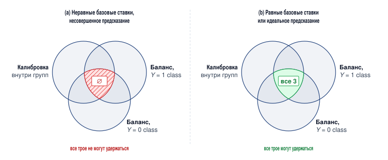
Конфликт сохраняется при смещении порога классификации. В синтетическом примере с двумя группами на Рисунок 3, где группы имеют неравные базовые частоты, при каждом пороге от 0.15 до 0.85 хотя бы одна из метрик — демографический паритет, выравненные шансы или равенство возможностей — оказывается существенно нарушена. Точная картина зависит от выбранных распределений скорингов. Порог, сокращающий один измеряемый разрыв, не обязан минимизировать остальные, поэтому политика должна указывать, какой критерий определяет решение, и оценивать оставшиеся разрывы.
Групповые метрики также оставляют открытым вопрос о том, как возникло наблюдаемое расхождение, поскольку разрыв сам по себе не указывает на механизм, который его породил. Причинный анализ отвечает на этот вопрос через явные предположения.
Наблюдательная и причинная справедливость
Приведённые выше метрики описывают ассоциации в наблюдаемых решениях — например, групповые различия в частотах отбора, частотах ошибок или калибровке. Один и тот же разрыв в частоте одобрений мог возникнуть из-за прямого использования защищённого атрибута, коррелированного прокси, неравного доступа к более раннему этапу, ошибки измерения или ненаблюдаемой общей причины. Одно лишь сравнение наблюдаемых частот не различает эти механизмы.
Причинное утверждение добавляет структурную каузальную модель, стрелки которой задают, как, согласно предположениям, связаны защищённый атрибут
Пример с прокси в здравоохранении иллюстрирует это различие. Граф может включать расу
Причинные выводы требуют предположений, которые одни лишь наблюдательные данные установить не могут: какие переменные и стрелки принадлежат графу, измерены ли релевантные конфаундеры (общие причины двух смоделированных переменных) и являются ли контрфактические вмешательства согласованными. Разные правдоподобные структуры могут поддерживать разные ответы. Поэтому причинный анализ дополняет групповые метрики, предметное знание, юридический анализ и участие заинтересованных сторон. Метрики продолжают отслеживать реализованные расхождения; причинная модель делает дополнительное утверждение о механизме и его предположения проверяемыми.
16.5.2 Измерение расхождений
Ещё до того, как команда начнёт моделировать причинные пути, мониторинг реализованных расхождений в продуктиве сталкивается со статистической проблемой: разрыв в одобрениях в 30 процентных пунктов, наблюдённый на 20 кредитных заявках, может оказаться шумом выборки, а одноосный аудит, проверяющий расу и пол по отдельности, может показать высокую точность по обоим признакам, маскируя серьёзные ошибки там, где эти атрибуты пересекаются. Превратить критерий справедливости в доказательство, на которое может опереться орган, утверждающий запуск, — это требует точечной метрики со знаменателем и доверительным интервалом, покрытия пересечений, где концентрируются ошибки, и регламентированного выбора критерия, по которому будет оцениваться развёртывание.
Количественное измерение справедливости
Операционализация этого доказательства начинается со сведения условно-вероятностного разрыва к скалярной сводке, которую аудит или шлюз выпуска может сравнить с порогом. Математический аппарат количественно определяет величину расхождения и его неопределённость, тогда как владельцы предметной области и политики должны обосновать критерии приемлемости и авторизовать ответную реакцию. Вычисленный разрыв служит доказательством для этого решения, а не решает, какие вреда приемлемы.
Четыре точечные метрики превращают введённые выше критерии справедливости в числа, которые аудитор может сравнить с порогом. Каждая выравнивает свою величину, поэтому каждая вскрывает свой отказ того же классификатора. На сквозном примере с кредитом (Таблица 6) группа A получает одобрения в 0.70 случаев, группа B — в 0.40. Частоты истинно положительных для квалифицированных заявителей составляют 0.89 и 0.60, а частоты ложноположительных для неквалифицированных заявителей — 0.55 и 0.20.
| Метрика | Выравнивает | Формула |
Значение для кредита | Когда выбирать |
|---|---|---|---|---|
| Отношение несоразмерного воздействия (DI) (правило четырёх пятых) (Feldman и др. 2015 г.) | меньшая частота одобрений, делённая на большую частоту одобрений | когда полезен описательный скрининг по частоте отбора; юридическая интерпретация зависит от применения | ||
| Разность статистического паритета (SPD) (Calders и Verwer 2010 г.) | аддитивный разрыв в частотах одобрений | когда сравниваются группы или отслеживается дрейф относительно утверждённого при развёртывании порога разрыва | ||
| Разность равенства возможностей (Hardt и др. 2016 г.) | частоты истинно положительных среди квалифицированных заявителей | когда вред — отказ заслуживающим людям | ||
| Средняя абсолютная разность шансов (Hardt и др. 2016 г.; Bellamy и др. 2019 г.; Bird и др. 2020 г.) | и частоты истинно положительных, и частоты ложноположительных | когда важны оба типа ошибок; метрика равна 0 при идеальных выравненных шансах |
Четыре метрики по построению измеряют разные величины. Отношение несоразмерного воздействия 0.57 означает, что группа с меньшей частотой одобрений получает одобрения лишь в указанной доле от частоты группы с большей частотой, ниже иллюстративного порога скрининга 0.8. Этот порог происходит из правила четырёх пятых — американской практики отбора на работу, отмечающей любую группу, чья частота отбора падает ниже 80 процентов от частоты группы с наивысшей частотой. Аддитивный разрыв 0.30, разрыв возможностей 0.29 и средняя абсолютная разность шансов 0.32 количественно определяют каждое своё измерение одного и того же расхождения. Ни одного числа недостаточно — именно поэтому результаты невозможности из Глава 16.5.1.5 вынуждают явно выбирать, какой метрике развёртывание отдаёт приоритет.
Статистическая проверка нарушений справедливости
Доверительные интервалы и проверка гипотез помогают оценить, может ли выборочная вариация правдоподобно объяснить наблюдаемое расхождение при заданной модели выборки. Тест исходит из нулевой гипотезы — предположения, что группы имеют одну истинную частоту, так что любой наблюдаемый разрыв является шумом выборки, — и спрашивает, насколько маловероятен был бы наблюдаемый разрыв, если бы это предположение выполнялось. Для демографического паритета нулевая гипотеза
где
Для примера с кредитом при
Полученное значение
Пересекающаяся справедливость
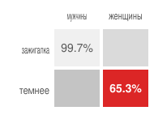
Ошибка концентрируется на пересечении: женщины с тёмной кожей.
Даже статистически значимый тест по одной только расе или полу может упустить то место, где концентрируются ошибки: в оценке Gender Shades, где коммерческие гендерные классификаторы тестировались на изображениях лиц, сгруппированных по типу кожи и полу, система классификации пола IBM достигла точности 99.7 percent для мужчин со светлой кожей, но лишь 65.3 percent для женщин с тёмной кожей (Buolamwini и Gebru 2018 г.). Стандартный анализ справедливости, оценивающий отдельные оси идентичности независимо друг от друга, скрывает подобные наложенные несоответствия — режим отказа, который иногда называют справедливым джерримендерингом: модель выглядит справедливой по каждому атрибуту в отдельности, но терпит неудачу на подгруппах, определяемых их комбинацией. Обнаружение и устранение таких зазоров требует оценки производительности модели на пересекающихся подгруппах (например,
После публикации данных о несоответствии ошибки снизились, хотя приведённые улики демонстрируют ассоциацию, а не контролируемый эффект. В августе 2018 года, примерно через полгода после публикации результатов Gender Shades, Raji и Buolamwini (2019 г.) повторил аудит на том же бенчмарке. Каждая из трёх компаний, названных в аудите, уменьшила свою ошибку на женщинах с тёмной кожей: IBM с 34.7 до 17.0 процентов, Face++ с 34.5 до 4.1 и Microsoft с 20.8 до 1.5 (Рисунок 4). Две системы, которые исходный аудит не называл — от Amazon и Kairos, впервые измеренные в 2018 году, — неверно классифицировали 31.4 и 22.5 процентов женщин с тёмной кожей, что сопоставимо с уровнем названных систем 2017 года. Тем не менее результат указывает, что конкретный опубликованный пересекающийся аудит может действовать как операционный рычаг, а не только как измерение.
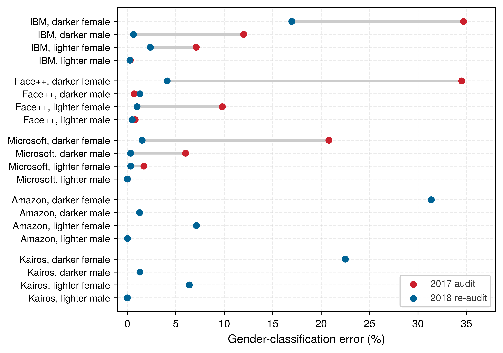
Пересекающийся аудит должен указывать, какие срезы совокупности он способен идентифицировать и какие улики доступны внутри них. Работы по мультиколибровке распространяют проверки калибровки на заданное, потенциально богатое семейство пересекающихся подгрупп (Hébert-Johnson и др. 2018 г.). Это не сертифицирует каждую возможную подгруппу или каждый критерий справедливости. Это мотивирует инфраструктуру оценки и мониторинга, способную проверять релевантные пересечения, сообщая, где ограниченная поддержка выборкой или доступность атрибутов ограничивают утверждение.
Выбор управляющего критерия
Сквозной кредитный пример показывает, как измерить несоответствие и его неопределённость выборки. Применение этой структуры всё же требует определить, предоставляет ли положительное решение благо или налагает бремя, проверить критерии, которые упускает главная метрика, и выбрать требование, подходящее для данного развёртывания.
Инженерный расчёт 16.3: Аудит матрицы ошибок
Задача: модель детекции мошенничества работает на двух группах. Что о развёртывании говорят демографический паритет и равенство возможностей?
Переменные:
- Группа A (большинство):
, , , ( ). - Группа B (меньшинство):
, , , ( ).
Математика:
- Демографический паритет (доля положительных предсказаний):
. - Группа A:
. - Группа B:
. - Зазор: 0.25. Отношение меньшей частоты флагов к большей —
. Флаги мошенничества — неблагоприятные исходы, поэтому это описательное отношение не является тестом «четырёх пятых» для отбора на трудоустройство.
- Группа A:
- Равенство возможностей (TPR):
. - Группа A:
. - Группа B:
. - Зазор: 0.338. (Серьёзное нарушение).
- Группа A:
Инсайт для систем: здесь положительное предсказание помечает подозреваемое мошенничество, а не предоставляет благо, как в кредитном примере. Поэтому выравнивание частот обнаружения требует взвешивания пропущенного мошенничества против ложных обвинений. Понижение порога для группы B может поймать больше мошенничества, но также увеличить долю ложных тревог; для количественной оценки эффекта на предсказательный паритет нужны распределения оценок.
Сквозная кредитная модель проваливает все критерии сразу, из чего можно заключить, что её поймала бы какая-то одна главная метрика. Вторая гипотетическая кредитная модель, намеренно отличная от сквозного примера, демонстрирует противоположный риск: один критерий выполняется точно, тогда как остальные проваливаются (Таблица 7). В отличие от сквозной модели, у которой частоты ложноположительных срабатываний различаются (0.55 против 0.20), эта модель одобряет потенциальных дефолтщиков с одинаковой частотой 20 процентов в обеих группах. Выровненные шансы потребовали бы совпадения как частот истинноположительных, так и частот ложноположительных срабатываний, поэтому в таблице показан более узкий случай паритета по частоте ложноположительных срабатываний, а не полные выровненные шансы. Поскольку одна метрика справедливости может выглядеть выполненной, тогда как другие вскрывают существенные несоответствия, развёртывание должно заранее решить, какой критерий является для него управляющим.
| Метрика | Определение | A | B | Зазор |
|---|---|---|---|---|
| Доля одобрений | (TP + FP), делённая на общее число | 55% | 40% | 15 pp |
| Частота истинноположительных (TPR) | TP, делённый на positives | 90% | 60% | 30 pp |
| Частота ложноположительных (FPR) | FP, делённый на negatives | 20% | 20% | 0 pp |
| Точность положительных предсказаний (PPV) | TP, делённый на предсказанные positives | 82% | 75% | 7 pp |
Пример 16.1: Выбор метрики справедливости
Сценарий: движок рекомендаций при найме должен выбрать своё главное ограничение справедливости до промышленного запуска в разнородных пулах кандидатов. Ответственные ревьюеры отдают приоритет равному доступу для квалифицированных кандидатов и независимо валидировали метки квалификации как для принятых, так и для отклонённых кандидатов.
Диагноз: демографический паритет требует равных частот отбора независимо от квалификации кандидата, тогда как калибровка требует, чтобы предсказанные вероятности соответствовали частотам исходов внутри каждой группы. Равенство возможностей конкретно требует равных частот истинноположительных срабатываний среди квалифицированных кандидатов (
Урок для систем: выбор метрики — это решение по управлению, которое задаёт операционную цель конвейера обслуживания. Проектировщики системы должны согласовать математическое ограничение с юридическими и этическими требованиями предметной области до обучения или установки порогов.
Выбранное определение справедливости определяет, какой компромисс между ошибками системе разрешено делать, поэтому этот выбор предшествует оптимизации по соответствующему критерию. Модель может удовлетворять заданному критерию справедливости, но ответственность зависит от системы, которая её использует. Граница системы простирается дальше весов модели — до конвейера и инфраструктуры, на которых она выполняется, поскольку то, кто может добраться до защитных механизмов и кто несёт их экологические издержки, является распределительными эффектами той же системы (Глава 16.4.3). Сам аудит справедливости является частью этой системы, а собираемые им демографические атрибуты могут усиливать риски для приватности.
Поэтому управление должно обосновывать как утверждение о справедливости, так и практики работы с данными, используемые для его поддержки, на протяжении всего жизненного цикла (Таблица 3). Сбор данных, разметка, решения при моделировании, процедуры оценки и пороги принятия решений — всё это формирует итоговые результаты, а постобработка может исправить выбранное расхождение по частотам, не разрешая проблему недопустимой цели или необоснованного развёртывания. Когда цель валидна и модель уже обучена, регулирование порога классификации — самый прямой рычаг для компромисса между конкурирующими групповыми частотами и общей точностью.
16.5.3 Установка порогов и компромиссы справедливости
Когда у двух групп заявителей разные распределения баллов, единый глобальный порог одобрения допускает разные доли квалифицированных заявителей из каждой группы, тогда как понижение порога одной группы ради выравнивания возможностей даёт двум заявителям с одинаковым баллом разные решения. Постобработка меняет метрики справедливости после обучения, регулируя пороги классификации по группам, а не переобучая веса. В приведённых ниже уравнениях больший балл благоприятствует положительному решению, как в случае предсказанной вероятности возврата кредита. Для функции скоринга
Для достижения демографического паритета решаем:
Для достижения равенства возможностей решаем:
Для выровненных шансов ограничения на долю истинных и ложных положительных результатов должны выполняться одновременно. Изменение единственного детерминированного порога для группы сдвигает её долю истинных и долю ложных положительных результатов вместе по одной ROC-кривой (receiver operating characteristic), поэтому когда у двух групп разные ROC-кривые, ни один порог на группу может не попасть на ту же пару
Регулирование порогов по-прежнему требует оценки остальных критериев. Когда базовые частоты различаются (то есть
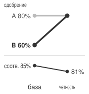
Подъём частоты одобрения группы B до паритета стоит 4 пункта точности.
Стоимость точности пороговой политики становится конкретной на отдельной кредитной модели, отличной от сквозного примера с кредитом. Её балл — предсказанная вероятность дефолта, поэтому более низкий балл благоприятствует одобрению, и каждый порог допускает заявителей ниже него. Сценарий обеспечивает демографический паритет — первое пороговое уравнение выше — и измеряет стоимость точности, которую это требует.
Инженерный расчёт 16.4: Стоимость справедливости
Задача: рассмотрим кредитную модель с точностью 85 percent. Группа A (большинство) имеет частоту дефолта 20 percent. Группа B (меньшинство) имеет частоту дефолта 40 percent из-за системных факторов. Если обеспечивается демографический паритет (равные частоты одобрения), что произойдёт с точностью?
Математика:
Этот сценарий фиксирует частоту одобрения группы A и поднимает частоту группы B до её уровня; один лишь демографический паритет не требует именно такого выбора. Значения точности предполагаются результатами на отложенной валидации, где дополнительные одобрения группы B несут более высокий риск дефолта.
- Без ограничений: модель одобряет всех с предсказанной вероятностью дефолта < 30 percent.
- Одобрение группы A: 80 percent.
- Одобрение группы B: 60 percent.
- Общая точность: 85 percent.
- С ограничением (паритет): при фиксированной частоте группы A одобрять группу B с частотой 80 percent.
- Новый порог для группы B: одобрять при вероятности дефолта < 50 percent.
- Пересмотренный порог допускает заявителей группы B с более высоким предсказанным риском дефолта, чем позволяла исходная политика.
- Новая общая точность: 81 percent.
Системный вывод: эта политика паритета стоит 4 percentage points точности (около 4.7 percent относительного падения точности в этом сценарии кредитного скоринга). Это падение — стоимость справедливости в данном сценарии, а не универсальное свойство ограничений справедливости. Точность по-прежнему измеряет предсказание против заданных меток дефолта; отражают ли эти метки законную цель кредитования — отдельный вопрос. Инженеры должны сообщать о прогностическом компромиссе, явно оговаривая предположения о цели и политике.
Стоимость в 4 percentage points относится к одной политике паритета на одной цели предсказания. Другой критерий сдвигает пороги по другой причине, и следующий сценарий, возвращающийся к соглашению о балле возврата кредита, нацелен на равенство возможностей путём сравнения распределений баллов среди квалифицированных заявителей. Дифференцированные пороги требуют доступа к чувствительным атрибутам во время инференса и порождают вопросы об явном групповом обращении, которое само по себе может считаться несправедливым или незаконным в ряде юрисдикций. Требуемые пороги зависят от этих распределений и выбранного критерия; более низкий порог для группы меньшинства — не универсальное правило справедливости.
Инженерный расчёт 16.5: Порог для равенства возможностей
Задача: вычислить групповые пороги, необходимые для выравнивания долей истинных положительных результатов (равенство возможностей) между группами A и B в модели кредитного скоринга.
Переменные: пусть балл
Математика:
- Единый порог: при
имеем и , где — функция стандартного нормального распределения. - Выравнивание порогов: сохраняем порог группы A и подгоняем её стандартизованный порог:
. Тогда даёт ту же долю истинных положительных результатов. - Неопределённые издержки: понижение порога группы B не может увеличить её долю ложных положительных результатов, но её величина требует
. Точность также требует распространённости группы B. Ни одна из этих величин не следует из распределений положительного класса.
Системный вывод: равенство возможностей определяет порог только относительно заданных распределений баллов и целевой частоты. Перед развёртыванием оценивайте полученные ложные срабатывания, точность и нагрузку на проверку на репрезентативных данных. Пороговые политики меняют решения, а не калибровку самого балла.
Отдельный иллюстративный кредитный сценарий разделяет заявителей на подгруппу A (более высокое распределение баллов, синяя полоса) и подгруппу B (более низкое распределение баллов, янтарная полоса), а сводные панели Рисунок 5 противопоставляют два режима работы. Единый глобальный порог (
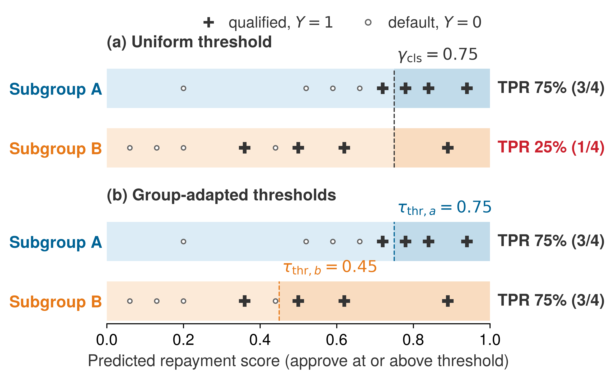
16.5.4 Свидетельства справедливости на уровнях развёртывания
Групповые пороги и раздельные аудиты предполагают, что уполномоченный компонент может связать предсказания, демографические атрибуты и результаты — предположение, которое нарушается, когда исполнение покидает центр обработки данных. Федеративная модель клавиатуры, работающая на миллионах телефонов в том же федеративном режиме, что и Архетип C (Federated MobileNet), никогда не отправляет сырые нажатия клавиш или демографические метки пользователей на центральный сервер, поэтому оператор парка не может выполнить центральный SQL-запрос, чтобы проверить, падает ли точность предсказания следующего слова на защищённой подгруппе. Справедливость тогда становится проблемой развёртывания, где связывающим ограничением является видимость данных. Облачная платформа с уполномоченным доступом к демографическим меткам и результатам может вычислять групповые метрики, вести обучение с учётом справедливости и проводить аудит постфактум. Федеративное9 или локальное на устройстве развёртывание вместо этого нуждается в явном пути получения свидетельств, например агрегированных статистик клиентов или отдельно управляемой аудиторской выборке. Без достаточных свидетельств соответствующая метрика неизмерима; само по себе локальное исполнение не делает аудит невозможным. Объём свидетельств, доступных для анализа справедливости, сужается от облака к TinyML (строка справедливости в Таблица 4), и это сужение затрудняет проверку двух повторяющихся проблем.
Первая проблема касается политики принятия решений. Равная агрегированная точность по группам не устанавливает равенство возможностей при едином пороге; в иллюстрации Рисунок 5 один общий порог оставляет доли истинных положительных результатов двух групп далёкими друг от друга. Развёртывание должно выбирать и оценивать политику относительно утверждённого критерия; групповые пороги — одно из возможных вмешательств, а не требование, навязанное периферийным исполнением. Вторая проблема обостряет конфликт персонализации, поднятый в Глава 16.4.1. Локальная адаптация направлена на повышение полезности для пользователя, тогда как индивидуальная справедливость требует, чтобы похожие индивиды получали похожие решения в рамках релевантной задаче метрики сходства (Dwork и др. 2012 г.). Персонализация не устанавливает это требование, а адаптация на разреженных или нерепрезентативных наблюдениях может закреплять существующие разрывы. Когда релевантные свидетельства остаются локальными, операторам парка нужен уполномоченный способ оценки возникающих расхождений. Глава 16.9.4.1 анализирует механизм обратной связи и точки вмешательства; следствие для развёртывания состоит в том, что парк, который не может централизовать результаты, должен закладывать явный путь получения свидетельств для обнаружения разрывов, которые закрепляет персонализация.
Этот путь доказательства создаёт дополнительное напряжение в ответственном ИИ. Хранение чувствительных данных локально снижает централизованную экспозицию, но для аудитов уровня парка (fleet) всё ещё нужны адекватные групповые статистики. Архитектура приватности (Глава 16.6.2) определяет, какие записи или агрегаты могут пересекать границу и с какими защитами; когда авторизованный поток доказательств достигает оператора, следующая инженерная задача — превратить эти записи в непрерывное обнаружение смещений и производственный мониторинг.
16.5.5 Обнаружение и мониторинг смещений
Периодические аудиты перед выпуском не могут выявить диспропорции, возникающие между проверками, когда трафик или состав заявителей меняется. Предположим, что развёрнутая по всей стране кредитная модель начинает отклонять заявителей из конкретного почтового индекса вдвое чаще, чем раньше. Мониторинг может выявить это изменение до планового аудита, но сам показатель не устанавливает его причину. Исследователь должен сверить изменения в популяции, качестве данных и политике решений с утверждёнными критериями справедливости. Обнаружение смещений превращает формальные определения в операционную телеметрию, используя slice-анализ — вычисление каждой метрики отдельно для каждого среза популяции, определённого значениями атрибутов, — чтобы выявлять подгруппы, чьи результаты требуют рассмотрения.
Затраты на измерение и точки вмешательства
Критерии из Глава 16.5.1 определяют, что является диспропорцией и как её проверить. Инженерная стоимость появляется там, где эти критерии вычисляются непрерывно на производственной системе, обслуживающей тысячи предсказаний в секунду. Эта стоимость состоит из вычислительной, информационной и организационной частей, и вместе они определяют, какие метрики система может позволить себе отслеживать.
Накладные расходы на измерение возникают из-за того, что вычисление групповых метрик требует ведения отдельных статистик для каждой защищённой группы: при
Выбор приемлемых порогов диспропорций затем требует предметной экспертизы и мнения заинтересованных сторон, поскольку правило четырёх пятых — это скрининговая конвенция из практики найма в США, а не универсальный юридический тест для кредитования или обнаружения мошенничества. Пороги должны отражать контекстно-специфичные оценки вреда, статистическую неопределённость и документированное правовое обоснование. Поскольку дрейф распределения, петли обратной связи или обновления модели могут со временем подрывать справедливость, временная стабильность дополнительно требует мониторинга этих порогов по окнам оценки. Автоматическое оповещение (например, «оповестить, если
Офлайн-аудиты и аудиты на этапе CI — первое место, где эти метрики запускаются, а open-source наборы инструментов вроде Fairlearn упаковывают групповую бухгалтерию (Bird и др. 2020 г.), как в аудите из Список 1. Применённый к текущему кредитному примеру, групповой отчёт такого аудита показал бы доли одобрений 0.70 для группы A и 0.40 для группы B, а также коэффициент разнородного воздействия 0.57, который падает ниже скринингового порога 0.8 из Таблица 6. Это сравнение — сигнал аудита, а не вердикт по кредитному законодательству. Архитектура должна поставлять согласованные решения и принадлежность к группам через авторизованный аудиторский путь. Метрики, требующие меток результатов, должны использовать наблюдаемые результаты, а не подставлять прошлые решения; офлайн-аудиту не требуется экспонировать групповые атрибуты на всём протяжении инференса в обслуживании.
import numpy as np
from fairlearn.metrics import MetricFrame, selection_rate
from sklearn.metrics import accuracy_score, precision_score
def false_positive_rate(y_true, y_pred):
y_true, y_pred = np.asarray(y_true), np.asarray(y_pred)
negatives = y_true == 0
if not negatives.any():
return float("nan") # No observed negatives: rate is unmeasurable.
return ((y_pred == 1) & negatives).sum() / negatives.sum()
# Loan approval model evaluation across demographic groups
mf = MetricFrame(
metrics={
"approval_rate": selection_rate,
"accuracy": accuracy_score,
"precision": precision_score,
"false_positive_rate": false_positive_rate,
},
y_true=loan_repaid_actual, # observed repayment outcome, not past approval
y_pred=loan_approvals_predicted,
sensitive_features=applicant_demographics["ethnicity"],
)
# NaN means a group lacks negative examples, not that its FPR is zero.
# Display performance disparities across groups
print("Loan Approval Performance by Group:")
print(mf.by_group)
# Hypothetical output on the running loan example:
# approval_rate 0.70 for group A, 0.40 for group BЕсли чувствительные атрибуты недоступны во время инференса, что характерно для мобильных, федеративных и встраиваемых систем, пороги по группам могут оказаться невыполнимыми. Ограниченные офлайн-аудиты всё же могут направлять изменения данных, дообучение или пересмотренную политику, не требующую поиска атрибута при каждом запросе.
Вмешательства для справедливости могут применяться в разных точках конвейера, но каждое несёт системные последствия. Методы предобработки меняют обучающее распределение через выборку, перевзвешивание или аугментацию. Их требования к данным зависят от метода: групповое перевзвешивание требует информации о группах, а добавление признаков — ещё и доступа к затронутым примерам. Версионирование и происхождение (lineage) должны сохранять, какая трансформация породила обучающие данные. Внутрипроцессные подходы вместо этого встраивают ограничения справедливости прямо в оптимизацию. Они требуют поддержки выбранной функции потерь или решателя с ограничениями и могут добавлять работу при обучении или требования к валидации.
↩︎ Версионирование признаков и записи происхождения, отслеживающие каждый обучающий вход, описаны в Версионирование признаков и происхождение (lineage).
На слое обслуживания методы постобработки применяют одобренное правило решения к выходам модели. Пороги по группам требуют, чтобы компонент, выбирающий порог, получал авторизованную групповую информацию; другие правила политики могут использовать иные входы. Политика двойного порога в Рисунок 5 (
Мультикалибровка (Глава 16.5.2.3) может выполняться в инфраструктуре обучения, даже если полученная модель обслуживается на ограниченном эндпоинте, но результат во время обучения не устанавливает калибровку после изменения условий развёртывания. Если телеметрия не может поддержать повторные аудиты подгрупп, оператор должен зафиксировать это ограничение доказательств и соответственно ограничить одобренный рабочий диапазон.
Смягчение также деградирует после запуска. Модель с учётом справедливости может деградировать, если конвейеры дообучения пропускают проверки справедливости, если логирование не отслеживает результаты подгрупп или если обратная связь пользователей вносит смещения, отсутствующие в обучающем распределении, поэтому протоколы дообучения требуют валидационных данных с метками подгрупп под контролем управления данными. Решение о том, какую диспропорцию устранять и какой ценой для других целей, остаётся решением заинтересованных сторон (Глава 16.9.4.3). Задача архитектуры — сделать каждую диспропорцию видимой, вовремя, для владельца, который должен принять это решение.
Архитектура мониторинга справедливости в реальном времени
Доставка такой видимости без остановки живого инференса требует развязки пути обслуживания от пути управления (Рисунок 6). Синхронный путь запросов обеспечивает контроль доступа, минимизацию данных и низкозадержный инференс, тогда как асинхронный уровень управления поглощает ограниченные доказательства исполнения и отложенные метки, чтобы питать аудиты справедливости, апостериорные объяснения и управляемые владельцами врата выпуска.
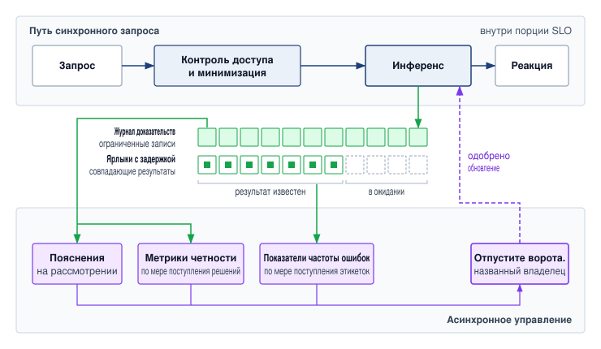
Путь запросов применяет контроль доступа и минимизацию данных перед инференсом и записывает только доказательства, необходимые для одобренной политики мониторинга. Групповой анализ справедливости и дорогие объяснения могут выполняться асинхронно; синхронные проверки должны укладываться в целевой уровень обслуживания (SLO). Отложенные метки входят в путь анализа, когда результаты становятся доступны, а именованный владелец одобряет изменения модели или политики.
Мониторинг справедливости в реальном времени обновляет метрики, основанные только на предсказаниях, — например, демографический паритет — по мере поступления решений, поддерживая скользящие статистики по защищённым группам. Метрики, зависящие от меток, такие как выровненные шансы и равенство возможностей, обновляются при поступлении отложенных результатов или проверенных меток. Группы, чьи размеченные окна слишком малы, должны оставаться видимыми как обладающие недостаточными доказательствами, с определённой политикой сбора или эскалации. Насколько мало — слишком мало, следует из точности, которая нужна монитору: неопределённость доли группы убывает лишь как квадратный корень из её размеченного счётчика, поэтому группа недостаточно поддержана, когда доверительный интервал её разрыва шире допуска, который должно разрешать оповещение. Система помечает поддержанные диспропорции, превышающие настроенные пороги, и отдельно сообщает о пробелах в покрытии. Требования к хранилищу и вычислениям зависят от числа групп, сегментов решений и окон хранения.
Движок объяснений генерирует доказательства для аудитории и решения, находящегося под рассмотрением. Его бюджет зависит от метода и модели; точная специфичная для модели атрибуция может быть выполнима там, где исчерпывающая оценка подмножеств — нет. Аппроксимация, кэширование, выборочная генерация и асинхронное исполнение предлагают разные компромиссы по стоимости и времени доставки. Мониторинговая часть этой архитектуры собирает предсказания и вычисляет скользящие групповые метрики с пороговыми оповещениями (Список 2). Листинг опускает поглощение отложенных результатов, полный расчёт выровненных шансов и генерацию объяснений, поэтому это частичная реализация, а не полный сервис управления.
import numpy as np
class RealTimeFairnessMonitor:
# alert_threshold mirrors the |SPD| > 0.15 rule; persistence check omitted.
def __init__(self, window_size=1000, alert_threshold=0.15, min_group=30):
self.min_group = min_group # Illustrative policy; set from precision needs.
self.window_size = window_size
self.alert_threshold = alert_threshold
self.window = []
async def process_prediction(self, prediction, demographics,
actual_label=None):
# Slide a fixed window over the stream, then re-check fairness.
self.window.append((prediction, demographics, actual_label))
self.window = self.window[-self.window_size :]
metrics = self._compute_metrics()
if (metrics["demographic_parity"] is not None
and metrics["demographic_parity"] > self.alert_threshold) or (
metrics["equalized_odds"] is not None
and metrics["equalized_odds"] > self.alert_threshold
):
await self._trigger_bias_alert(metrics)
return metrics
def _compute_metrics(self):
# Bucket predictions and labels by protected group.
by_group = {}
for pred, demo, label in self.window:
bucket = by_group.setdefault(
demo.get("ethnicity", "unknown"), {"preds": [], "labels": []}
)
bucket["preds"].append(pred)
if label is not None:
bucket["labels"].append((pred, label))
rates = [np.mean(d["preds"]) for g, d in by_group.items()
if g != "unknown" and len(d["preds"]) >= self.min_group]
parity = max(rates) - min(rates) if len(rates) > 1 else None
return {
"demographic_parity": parity,
# Requires sufficiently labeled outcomes per group; omitted here.
"equalized_odds": self._equalized_odds_gap(by_group),
"groups": {g: len(d["preds"]) for g, d in by_group.items()},
"eligible_groups": len(rates), # Compare with required group coverage.
}
def _equalized_odds_gap(self, by_group): ...
async def _trigger_bias_alert(self, metrics): ... # page and auditЭтот упрощённый шаблон отделяет доступность метрик от их значений, потому что недоступное сравнение — не нулевая диспропорция. Производственный монитор должен также обеспечивать требуемое покрытие групп, политики размера выборки и свежесть, прежде чем интерпретировать результат. Суммированные в Таблица 5 диапазоны накладных расходов объясняют, почему мониторинг справедливости, приватностные преобразования и генерация объяснений нуждаются в явных бюджетах ёмкости. Сбор метаданных запросов может быть синхронным, тогда как агрегация метрик, анализ отложенных меток и генерация объяснений могут выполняться асинхронно с собственными требованиями свежести. Эти накладные расходы должны быть сбалансированы с требованиями надёжности и соответствия при проектировании производственных систем.
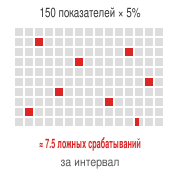
При доле ложных срабатываний 5 процентов 150 метрик дают около 7.5 ложных оповещений за интервал.
В масштабе глобального производственного парка мониторинг справедливости становится существенной задачей инженерии данных. Этот сценарий размерения предполагает примерно 864 million инференсов в день при 10,000 запросов/с по 50 демографическим подгруппам, с 150 метриками (доля ложных срабатываний, доля истинных срабатываний и ошибка калибровки для каждой из 50 групп). Доля выборки 1 percent даёт 8.64 million событий мониторинга ежедневно. При предполагаемых 200 байт на запись эти события требуют приблизительно 1.7 GB в день до дополнительных аудиторских записей или накладных расходов на хранение. Фактическое содержимое записей и хранение следуют одобренным требованиям измерения и приватности; метрики, зависящие от результатов, также требуют меток, которые могут поступать позже. Сама инфраструктура мониторинга, следовательно, должна быть надёжной, безопасной и экономически эффективной.
При 150 активных метриках иллюстративная вероятность ложного срабатывания на метрику 5 percent дала бы примерно 7.5 ложных оповещений за интервал оценки, если каждая проверяемая нулевая гипотеза верна. Это ожидаемое количество следует из суммирования вероятностей ложных срабатываний и не требует независимости. Производственные пороги вместо этого должны учитывать знаменатели подгрупп, отложенные метки, повторное тестирование, доверительные интервалы, минимально обнаруживаемый эффект и поправку на множественные сравнения. Минимально обнаруживаемый эффект — это наименьший разрыв, который размер выборки группы может надёжно отличить от шума, поэтому он показывает, какие группы слишком малы для мониторинга при одобренном допуске. Поправка на множественные сравнения, например ограничение ожидаемой доли ложных оповещений, ужесточает порог каждого теста так, чтобы добавление метрик не умножало ложные оповещения. Пересечение порога открывает расследование; само по себе оно не доказывает дискриминацию и не оправдывает автоматическое дообучение.
↩︎ Ложные срабатывания — ложные пересечения порога, накапливающиеся по мере того, как парк умножает число контролируемых метрик, — рассматриваются в Проблема усталости от алертов.
В терминах C³ эта нагрузка мониторинга — это коммуникация и координация, добавленные к парку. Каждая выборочная запись должна пройти от обслуживающей реплики до уровня агрегации, а каждое оповещение — достичь ответственного, способного отреагировать раньше, чем сигнализируемый им вред усугубится. Уровень развёртывания определяет, насколько длинен этот путь. Облачный сервис агрегирует телеметрию непрерывно, подчиняясь бюджетам хранения и приватности. Периодически подключаемый клиент хранит ограниченный объём локальных записей до следующей синхронизации, а критическая по безопасности периферийная система нуждается в локальных проверках, способных запустить резервный сценарий в пределах дедлайна принятия решения, потому что парк не успеет отреагировать вовремя. Отключённая конечная точка TinyML может предъявить свои свидетельства только при визите обслуживания, и исправление её модели может потребовать обновления прошивки или физической замены. Эти различия меняют задержку получения свидетельств и путь устранения, но не требование назначить ответственного за каждую контролируемую обязанность.
Контрольная точка 16.1: Внедрение обнаружения смещения в производство
Разделы об обнаружении смещения и мониторинге превратили статические определения справедливости в живую телеметрию: обнаружение по срезам с Fairlearn, аудиты на стадии CI, производственный мониторинг demographic parity и equalized odds, пути получения свидетельств, необходимые федеративным и локальным развёртываниям, и различие между наблюдением за расхождением и его устранением.
Обнаружение расхождения
От сигнала к действию
16.6 Приватность и управление данными
Каждый аудит справедливости и каждый монитор потребляет демографические свидетельства, а эти свидетельства сами являются чувствительными данными. Модели угроз и механизмы приватности из Безопасность и приватность дают технические средства управления; управление (governance) определяет интерфейсы свидетельств, ответственности и жизненного цикла, которые требуются производственным системам при их наследовании. Процесс удаления должен определять, какие записи и производные артефакты подпадают под применимую обязанность, например под требование об удалении согласно GDPR (European Parliament и Council of the European Union 2016 г.). Удаление строки базы данных может оставить нерешёнными вопросы с репликами, резервными копиями или обученными моделями. Если требуется устранение влияния на обучение, то lineage, переобучение, валидация, развёртывание и аудит становятся частью одного и того же процесса.
Управление этими рисками координирует два класса средств, которые легко спутать. Механизмы приватности ограничивают определённые раскрытия информации, в то время как машинное забывание (Глава 16.6.4) нацелено на влияние, которое запись сохраняет в обученных весах согласно заявленному критерию удаления. Гарантия приватности сама по себе не удаляет запись из истории обучения, поэтому аргументация гарантий должна различать эти обязанности и предоставлять свидетельства для каждой. Средства управления робастностью и генеративными системами получают такой же подход «свидетельства и ответственности» в Глава 16.8.
16.6.1 Базовые принципы управления данными
Эта координация начинается на этапе загрузки данных, где правило соответствия, требующее минимизации данных, может прямо столкнуться с аудитом справедливости, которому нужно защищённое демографическое поле. Тогда как технические механизмы приватности ограничивают раскрытие и утечку, управление данными определяет, оправдан ли сбор поля, кто может к нему обращаться и как долго аудит может его хранить. Это решение связывает приватность со справедливостью (Глава 16.5.1) и с прозрачностью (Глава 16.7.1). Мониторинг по группам нуждается в свидетельствах о принадлежности к группе, но дизайн аудита определяет, получают ли операторы индивидуальные поля, ограниченные аудиторские записи или агрегированную статистику. Методы объяснимости тоже могут раскрывать информацию об обучающих примерах, а детальное раскрытие может конфликтовать с приватностью отдельных лиц. Ответственные ИИ-системы должны обосновывать собираемые свидетельства и ограничивать их раскрытие, сохраняя достаточно информации для проверки выбранных требований.
↩︎ Федеративное обучение, шифрованные вычисления и синтетические данные, каждое из которых ограничивает круг тех, кто может наблюдать сырые записи, рассматриваются в Методы сохранения приватности данных.
Поскольку обучение и персонализация опираются на персональные данные, приватность является проектным ограничением на всём жизненном цикле системы, а её центральная трудность — напряжение между полезностью данных и защитой отдельного лица. Богатые наборы данных высокого разрешения могут повысить точность и адаптивность модели, но одновременно усиливают риск раскрытия чувствительной информации, особенно когда наборы данных агрегируются или связываются с внешними источниками. Например, показано, что большие языковые модели, обученные на широких текстовых корпусах, запоминают определённые строки, которые впоследствии можно извлечь через запросы к модели или состязательные промпты (Carlini и др. 2021 г.).
↩︎ Атака извлечения из GPT-2, восстановившая дословные обучающие записи через обычные сгенерированные выходы, рассматривается в Кейс GPT-2: извлечение данных.
Риски приватности также зависят от того, как записи связываются во времени и между источниками. Запись пульса или местоположения с носимого устройства уже может быть чувствительной; сочетание физиологических и поведенческих сигналов может раскрыть дополнительные сведения о здоровье, распорядке или связях пользователя. Ограниченная видимость или контроль над обработкой, хранением и передачей затрудняют для пользователей понимание и оспаривание этих видов использования.
Решение этих задач требует понимать приватность как системный принцип, влекущий надёжное управление данными. Это включает определение того, какие данные собираются, при каких условиях и с какой степенью согласия и прозрачности. Базовые практики инженерии данных — валидация данных, управление схемами, версионирование и отслеживание происхождения (lineage) — дают техническую инфраструктуру для реализации этих требований управления. Ответственное управление требует внимания к практикам разметки, управлению доступом, инфраструктуре журналирования и соблюдению требований юрисдикций. Эти механизмы служат для ограничения того, как данные перемещаются по системе, и для документирования подотчётности за их использование.
Слабое управление данными может скрывать как дефекты качества, так и раскрытия приватности, но они требуют разных свидетельств. В клинических приложениях пропущенные значения или демографический перекос могут подорвать предсказательную производительность; ни одно из них само по себе не устанавливает нарушение приватности. Оценка приватности должна также исследовать идентифицируемость, доступ и раскрытие. Документация должна делать эти различные риски прослеживаемыми до порождающих их практик работы с данными.
Приватность — не забота лишь изолированных алгоритмов или обработчиков данных; как и справедливость, она должна рассматриваться как структурное свойство системы. Решения о сборе согласия, хранении данных, дизайне модели и проверяемости вносят вклад в позицию приватности конвейера машинного обучения. Это требует предвидеть риски не только при обучении, но и при инференсе и непрерывной эксплуатации. Такие угрозы, как инференс принадлежности (membership inference), который по выходам развёрнутой модели определяет, была ли запись в её обучающем наборе, показывают, почему меры защиты приватности должны быть встроены и в архитектуру модели, и в поведение интерфейса.
↩︎ Инференс принадлежности, его механизм и почему эмпирический аудит даёт лишь нижнюю границу утечки рассматриваются в Инференс членства.
Правовые рамки делают приватность обеспечиваемым правом проектным требованием. GDPR, California Consumer Privacy Act (CCPA),10 и японский Act on the Protection of Personal Information устанавливают разные обязанности и права отдельных лиц в пределах своих сфер действия (European Parliament и Council of the European Union 2016 г.; California Legislature 2023 г.; Personal Information Protection Commission, Japan 2023 г.). Реализация должна определять, какие правила управляют сбором, использованием, хранением и удалением её данных, а не трактовать согласие или удаление как единообразное требование во всех юрисдикциях. Это решение о применимости принадлежит документированным требованиям системы к управлению данными.
Механизмы приватности ограничивают определённые раскрытия данных в рамках своих моделей угроз; они не устанавливают, что решения системы безопасны. Модель может удовлетворять требованиям приватности и всё же катастрофически отказывать на неожиданных входах — это дополнительный вопрос о том, как системы отказывают, который рассматривает Глава 16.8. Внутри самой приватности следующее решение — где в каждой архитектуре развёртывания проходит защищаемая граница.
16.6.2 Приватность на уровнях развёртывания
Обучение модели с дифференциальной приватностью никак не защищает пользователя, чей сырой промпт скопирован в журнальный файл в открытом тексте на API-шлюзе. Хранение сырых записей на телефоне, напротив, защищает от взломов центральной базы данных ценой сокрытия телеметрии всего парка от операторов. Приватность наследует тот же компромисс централизации между уровнями развёртывания (строка privacy в Таблица 4). Агрегация данных в облаке позволяет моделирование и мониторинг большой ёмкости, но концентрирует риск раскрытия при взломах и слежке, поэтому должна сопровождаться сильным шифрованием, управлением доступом и проверяемостью. Хранение данных локально на мобильных, федеративных или TinyML-клиентах уменьшает этот централизованный риск, но меняет свидетельства, доступные операторам парка. Средства защиты приватности должны покрывать локальное хранилище, выходы, телеметрию и каналы обновления; конечной точке без пути обновления нужны меры, остающиеся действительными на протяжении её утверждённого срока службы.
Ограничение, которого не показывает таблица, состоит в том, что заявления о приватности должны называть свою границу. Обучение с дифференциальной приватностью ограничивает утечку обучающих данных через выпущенную модель; обычный инференс на фиксированных весах остаётся внутри этой гарантии пост-обработки. Он не защищает новые приватные входы, скопированные в журналы обслуживания, или несвязанные обращения к приватным данным. Дизайн интерфейса, правила хранения, ограничение частоты и управление доступом адресуют эти отдельные раскрытия. Непрозрачный сбор данных тоже может нарушать ожидания пользователей, что делает поверхности согласия и ясное раскрытие частью архитектуры приватности.
Федеративное обучение проводит три такие границы (Рисунок 7). Сырые записи остаются на клиенте. Защищённая агрегация позволяет серверу видеть только сумму клиентских обновлений, и она скрывает индивидуальные обновления только при своих предположениях о сговоре сторон и отсеве клиентов. Центральная дифференциальная приватность ограничивает то, что раскрывает выпущенная модель, только если куратор, добавляющий шум, заслуживает доверия. Каждая мера защищает свою величину от своего наблюдателя, поэтому заявление об одной ничего не говорит о других. Единица приватности, правило отсечения (clipping) и допущения протокола определяют каждую гарантию, как и композиция — правило, по которому потеря приватности суммируется между раундами обучения (Bonawitz и др. 2017 г.; Dwork и Roth 2014 г.).
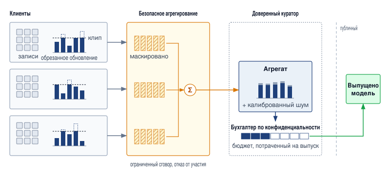
Архитектура решает, где проходит граница приватности; модель решает, сколько её пересекает. Сервис может держать сырые записи за всеми средствами контроля доступа и всё равно выпускать обучающие данные через веса, которые он обслуживает, — с этого и начинается управление гарантиями приватности.
16.6.3 Управление гарантиями приватности
Языковая модель, выдающая номер телефона пациента из своего обучающего набора, или классификатор, чьи оценки уверенности раскрывают, был ли конкретный клиент в обучающей когорте, утекают приватные данные через разрешённые выходы, даже когда ни одна база данных не взломана. Управление гарантией приватности начинается с таких утечек через выходы, рассмотренных в Утечка через авторизованные выходы, и превращает каждую в аудиторскую обязанность, охватывающую сбор данных, поведение модели и взаимодействие с пользователем. Поскольку аудит инференса принадлежности должен указывать предполагаемый доступ атакующего и читается лишь как нижняя граница утечки, формальная граница должна исходить из механизма обучения. Дифференциальная приватность предоставляет такую границу. Её бюджет приватности
Для дифференциальной приватности управление потребляет механизм и учёта, установленные в Дифференциальная приватность. Развёртывание дифференциально приватного стохастического градиентного спуска (DP-SGD) должно сохранять конфигурацию отсечения, шума, сэмплирования и композиции, поддерживающую заявленную границу (Abadi и др. 2016 г.). Рецензенты затем оценивают эту границу наряду с полезностью, производительностью по подгруппам и обращениями к приватным данным вне обучения. Названия метода недостаточно как свидетельство для одобрения полного сервиса.
Дифференциальная приватность вносит системные компромиссы на пути, где происходит доступ к приватным данным. Шум при обучении может снизить полезность, а попытки вернуть её через дополнительные данные или шаги оптимизации должны оцениваться с учётом возникающего учёта приватности и стоимости вычислений. Если обучение происходит централизованно, эти издержки автоматически не становятся дополнительной работой для периферийного устройства, выполняющего обычный инференс на выпущенной модели. Локальное обучение или локальная рандомизация предъявляет к устройству иные требования. Минимизация данных, ограничения хранения и управление доступом остаются отдельными требованиями; одно обфусцирование признаков не даёт гарантии дифференциальной приватности.
Системный взгляд 16.1: Цена приватности
Обучение большой языковой модели на чувствительных сообщениях с DP-SGD снижает риск извлечения обучающих данных, но защита имеет цену в вычислениях и точности.
При фиксированных единице приватности, отношении соседства (добавление или удаление одной единицы против замены одной) и
Иллюстративная конфигурация с более сильной приватностью (предполагаемый результат accounting-метода
Иллюстративная конфигурация с более слабой приватностью (предполагаемый результат accounting-метода
Иллюстративная самая слабая конфигурация (предполагаемый результат accounting-метода
Эти сценарии сравнивают формальные границы приватности, качество и стоимость обучения; ни одна из этих величин по отдельности не устанавливает доверие пользователей. После того как фиксированная модель обучена с дифференциальной приватностью, обычный инференс является постобработкой и не расходует дополнительный бюджет приватности обучающих данных. Дополнительные потери приватности должны учитываться, когда механизм после развёртывания выполняет новые обращения к приватным данным или публикует дополнительные дифференциально-приватные статистики. Ключевое инженерное решение — документировать и учитывать каждое обращение к приватным данным и доводить возникающие компромиссы до пользователей и регуляторов.
Опубликованным наборам данных нужна собственная граница.
Принуждение к приватности также зависит от инфраструктуры за пределами самой модели. Интерфейсы сбора данных должны поддерживать информированное согласие и прозрачность. Системы журналирования не должны удерживать чувствительные входные данные без строгой необходимости и должны поддерживать контроль доступа, политики истечения срока и проверяемость. Инфраструктура обслуживания моделей должна быть спроектирована так, чтобы предотвращать чрезмерную экспозицию выходов, которая могла бы раскрывать внутреннее поведение модели или позволять восстановление приватных данных. Эти механизмы уровня системы требуют тесной координации между ML-инженерией, платформенной безопасностью и организационным управлением.
Приватность должна соблюдаться на всём жизненном цикле машинного обучения. Конвейеры переобучения должны соблюдать утверждённые политики удаления и использования данных. Мониторинг должен собирать только идентифицирующую информацию, оправданную его назначением, с подходящими для неё средствами контроля доступа и удержания. Приватность-ориентированный сбор телеметрии и защищённые журналы аудита на уровне пользователя могут поддерживать расследование и устранение последствий, не делая чувствительные записи широко доступными в логах или дашбордах.
Поэтому кейс гарантий приватности охватывает весь конвейер. Формальный privacy-аккаунтер покрывает обращения к приватным данным в своём заявленном механизме; средства контроля интерфейсов, политики удержания и записи о доступе поддерживают отдельные утверждения об окружающем сервисе. Разделение этих утверждений делает пробелы видимыми при изменении модели, пути телеметрии или источника данных.
Техники сохранения приватности порождают сложные социотехнические напряжения, выходящие далеко за пределы технической реализации. Механизмы дифференциальной приватности могут снижать точность модели так, что непропорционально затрагиваются недостаточно представленные группы, создавая конфликт между целями приватности и справедливости. Эти вызовы требуют постоянного вовлечения заинтересованных сторон, как подробно описано в Глава 16.9.4.3, где организациям приходится лавировать между конкурирующими ценностями контроля над данными, персонализации и регуляторного соответствия. Однако даже сильная граница приватности на этапе обучения рассматривает обучающий набор как фиксированный, оставляя открытым вопрос о том, что происходит, когда пользователь отзывает согласие или требует удаления после того, как модель уже в производстве.
16.6.4 Машинное забывание
Удаление строки пользователя из производственной базы данных по запросу на удаление в рамках GDPR или CCPA (European Parliament и Council of the European Union 2016 г.; California Legislature 2023 г.) оставляет её влияние нетронутым внутри модели на 175 миллиардов параметров, обученной на снимке данных за прошлый месяц. Поскольку сохранение приватности не заканчивается в момент обучения, машинное забывание (machine unlearning) даёт технический ответ, когда утверждённая политика удаления требует также работы с удерживаемым состоянием модели. Юридическое требование и доказательство удаления должны быть специфицированы по отдельности, поскольку одно лишь удерживаемое влияние не устанавливает, что каждое развёртывание нарушает обязательство по удалению. Когда утверждённый ответ действительно требует удаления обучающего влияния, архитектура должна поддерживать выбранный метод и его верификацию: конечная точка без достаточных данных, обучающего состояния или вычислений нуждается в replacement-модели, обученной в другом месте, тогда как устройство с необходимыми ресурсами может выполнить работу локально. Размещение следует этим требованиям к ресурсам и состоянию, а не только ярлыку развёртывания.
Три стратегии обновления различаются тем, что они пересчитывают и какое удаление гарантируют (Рисунок 8). Переобучение с нуля на удерживаемых данных — обучающем наборе с удалённым forget-набором
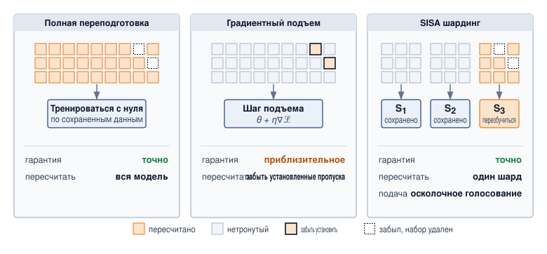
Полное переобучение — полезный эталон, но его осуществимость зависит от доступа к разрешённым оставшимся данным, процедуры обучения и достаточных вычислений в пределах срока ответа. Политика удержания может удалить данные, которые понадобились бы переобучению; большой обучающий запуск может превысить доступный бюджет. Альтернативный метод забывания должен заявлять собственные требования к данным и состоянию, а не предполагать, что отказ от полного переобучения устраняет и эти зависимости.
Машинное забывание стремится удалить указанное обучающее влияние, не повторяя весь обучающий запуск. Cao и Yang (2015 г.) предложили преобразовывать подходящие алгоритмы обучения в суммационную форму, в которой обученная модель зависит от данных только через суммы по обучающим примерам, что позволяет при удалении вычесть его слагаемые из этих сумм и пересчитать модель. SISA вместо этого локализует переобучение в затронутых шардах (Bourtoule и др. 2021 г.). Ей всё ещё нужны удерживаемые данные и обучающее состояние, требуемые этой процедурой. Утверждение об удалении должно указывать свой эталон и метод верификации; рост потерь на удалённых примерах — иное доказательство, чем переобучение без них. Поэтому выбор метода зависит от удерживаемого состояния, качества модели, операционной стоимости и гарантии удаления, которую должно поддерживать развёртывание.
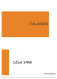
Для одного изолированного запроса на удаление SISA сокращает стоимость переобучения примерно в 100 раз; ежедневный батч, затрагивающий большинство шардов, сводит эту экономию на нет.
Инженерный расчёт 16.6: Цена забывания
Пользователь запрашивает удаление персональных данных согласно статье 17 GDPR («Право на удаление»). Этот сценарий предполагает, что утверждённый ответ включает удаление влияния этих данных из модели, обученной на 1 ТБ данных; это требование к удалению из модели — предпосылка сценария, а не вывод, следующий из самого обращения к статье.
Базовый сценарий (полное переобучение): в этом сценарии масштабирования модель с 175B параметрами масштаба GPT-3 обучается заново на 1,024 GPU NVIDIA A100 (80 GB SXM4) (dense FP16
Инженерное решение: обучение SISA разбивает данные на
Компромисс: сценарий предполагает падение точности на 3–7 percent; сам расчёт стоимости этот результат по качеству не устанавливает. Обслуживание должно вычислять и агрегировать 100 субмоделей, причём задержка зависит от параллелизма и способа агрегации. Стоимость пакетного удаления зависит от того, скольких из 100 шардов коснётся запрос. Если 1,000 requests/day запросов приходят независимо и равномерно по шардам, дневной батч, скорее всего, затронет почти все они, сводя на нет экономию от одного лишь шардирования. Сконцентрированные запросы, политика формирования батчей и сохранённые состояния срезов меняют объём работы. Поэтому операционное сравнение должно учитывать распределение запросов и срок ответа, а не только число шардов.
Эти компромиссы по стоимости и формированию батчей объясняют, почему законодательно закреплённые права на удаление данных по GDPR, CCPA и схожим законам (European Parliament и Council of the European Union 2016 г.; California Legislature 2023 г.) требуют инженерного разбора с учётом контекста, а не универсальной команды переобучать каждую модель с нуля. Там, где само состояние модели сохраняет персональные данные — как подчёркивают инциденты, в которых генеративные модели воспроизводили персональный контекст или защищённые авторским правом тексты, — машинное «забывание» (machine unlearning) даёт техническую стратегию снижения или устранения влияния удалённой записи в рамках достижимого бюджета вычислений.
С точки зрения систем машинное «забывание» вводит нетривиальные архитектурные и эксплуатационные требования. Системы должны уметь отслеживать происхождение данных (data lineage), включая то, какие объекты данных внесли вклад в данную версию модели. Для этого часто требуется структурированный сбор метаданных и инструментирование конвейера обучения. Кроме того, системы должны поддерживать пользовательские сценарии удаления, включая аутентификацию, подачу запроса и обратную связь о статусе удаления. Верификация может требовать ведения версионированных реестров моделей, а также механизмов проверки заявленной гарантии удаления относительно эталонной процедуры обучения. Такие проверки могут подтверждать, что inference on membership (определение членства в обучающей выборке) больше не отличает удалённые записи от записей, которые модель никогда не видела, и что выходы обновлённой модели в пределах заявленного допуска совпадают с выходами модели, переобученной без удалённых записей. Эти операции должны охватывать хранение данных, оркестрацию обучения, развёртывание моделей и инфраструктуру аудита, и они должны быть устойчивы к сбоям и откатам.
Развёртывания с ограниченными ресурсами усугубляют эти проблемы. Устройству TinyML может не хватать вычислений для переобучения, но при этом оно может принимать замещающую модель, обученную в другом месте. Тогда «забывание» требует инвентаризации парка устройств, аутентифицированных обновлений и подтверждений того, что затронутые версии замещены или выведены из эксплуатации. Если путь для обновления отсутствует, операторы должны планировать физическое обслуживание или изъятие устройств; минимизация данных на этапе проектирования снижает экспозицию, но не устраняет влияние, уже присутствующее в развёрнутых весах. Даже в облачных системах «забывание» требует координации реплик моделей, снапшотов и журналов.
Необходимость удаления влияния обучения следует оценивать на этапе проектирования архитектуры и политик, когда команды ещё могут спланировать требуемое отслеживание происхождения, сохраняемое состояние и пути обновления. Дооснащение этих возможностей после развёртывания может потребовать реконструкции провенанса или перестройки инфраструктуры обучения. Обоснование заверения (assurance case) должно указывать, какие обязательства по удалению применяются, как выбранный метод будет оцениваться и как одобренные замещающие модели достигают развёрнутых экземпляров.
Машинное «забывание» — это сдвиг в мышлении о приватности: от защиты собираемых данных к управлению тем, как долго эти данные продолжают влиять на поведение системы. Однако реализация любого права на данные или оспаривание автоматического результата зависит от того, могут ли пользователи, клиницисты и аудиторы видеть, как устроена система и почему она выдала конкретное решение.
16.7 Объяснимость и прозрачность
Отклонённому заявителю на кредит, клиницисту, сомневающемуся в оценке риска, и аудитору, восстанавливающему оспоренное решение, нужны разные объяснения одного и того же выхода модели и в разные сроки. Обслужить их всех требует раскрытия информации о системе в целом, методов объяснения, чья стоимость и точность соответствуют развёртыванию, и пути обжалования, по которому затронутый человек может действовать на основе раскрытой информации.
16.7.1 Необходимость прозрачности
Когда ProPublica провела аудит использовавшегося в судах США показателя риска рецидива COMPAS, она обнаружила, что чернокожие обвиняемые ошибочно помечались как будущие правонарушители почти вдвое чаще белых (Angwin и др. 2016 г.).11 При этом ссылки вендора на коммерческую тайну не позволяли обвиняемым, судьям и внешним исследователям изучить формулу скоринга или происхождение обучения. Модели машинного обучения часто работают как непрозрачные «чёрные ящики», выдавая результаты, которые пользователи, разработчики и регуляторы с трудом могут проверить. В сферах с высокими ставках — уголовном правосудии, здравоохранении, финансах — эта непрозрачность блокирует расследование и исправление ситуации, даже когда внешние аудиты исходов выявляют расхождения.
Кейс COMPAS разделяет два свойства, определённые среди основных принципов. Исследователям недоставало прозрачности, то есть раскрытия источников данных, процедур обучения, протоколов оценки и известных ограничений. Объяснения отдельных оценок были бы доказательством иного рода — о конкретных решениях, а не о системе. Атрибуция описывает, как метод распределяет влияние в рамках своих допущений, но не даёт причинного объяснения, нормативного обоснования или пути к обжалованию. В разделе Глава 16.7.2 рассматриваются методы, их стоимость и ограничения; установленный здесь принцип состоит в том, что оба свойства — это обязательства, которые архитектура должна обеспечить.
Важность объяснимости и прозрачности выходит за технические соображения и включает правовые требования. Во многих юрисдикциях эти принципы — юридические обязательства, а не необязательные рекомендации. Согласно Общему регламенту по защите данных (GDPR), полностью автоматизированные решения с юридическими или столь же значимыми эффектами активируют гарантии статьи 22 и связанные обязанности по прозрачности, включая содержательную информацию о задействованной логике в рамках положений о доступе и уведомлении, с учётом установленных законом исключений (European Parliament и Council of the European Union 2016 г.; European Data Protection Board 2018 г.).12 Аналогичное регуляторное давление в других областях подкрепляет необходимость рассматривать объяснимость и прозрачность как базовые архитектурные требования.
Реализация этих принципов требует предвосхищения потребностей разных заинтересованных сторон, чьи конкурирующие ценности и приоритеты всесторонне рассматриваются в Глава 16.9.4.3. Проектирование с учётом объяснимости и прозрачности, следовательно, требует решений о том, как и где предъявлять релевантную информацию на протяжении жизненного цикла системы.
Прозрачность и объяснимость также поддерживают надёжность системы во времени. По мере переобучения или обновления моделей механизмы интерпретируемости и отслеживаемости позволяют обнаруживать неожиданное поведение, проводить анализ первопричин и поддерживать управление. Встроенные в структуру и работу системы, эти механизмы создают основу доверия, надзора и соответствия институциональным и общественным ожиданиям.
Хотя прозрачность и объяснимость позволяют заинтересованным сторонам понять поведение системы, они не гарантируют его беспристрастности. Модель может быть полностью прозрачной в том, как она принимает решения, и при этом систематически ущемлять определённые группы — именно поэтому критерии справедливости из Глава 16.5.1 остаются отдельной проверкой. Само выполнение обязательства по объяснимости требует выбора между моделями, чью структуру решений можно проверить напрямую, и пост-хок методами, оценивающими влияние признаков после обучения.
16.7.2 Модели интерпретируемости
Кредитный инспектор, работающий с традиционной системой на основе правил, может указать правило, породившее отказ: «соотношение долга к доходу превышает 40%». Нейронная сеть же выдаёт оценку через множество взаимодействующих операций, для которых ни одно правило в отдельности не даёт обоснования решения. Объяснимость и интерпретируемость предоставляют ограниченные свидетельства о поведении модели — например, о влиянии признаков, чувствительности, репрезентативных примерах или контрфактических изменениях. Эти свидетельства могут поддерживать расследование и коммуникацию, но становятся обоснованием лишь тогда, когда организация связывает их с действующей политикой решений, и становятся правом на обжалование лишь тогда, когда пользователь может предпринять осуществимое действие, которое система удовлетворит.
Свидетельства объяснений играют роль в валидации системы, анализе ошибок, расследовании инцидентов, коммуникации с пользователями и в некоторых сценариях соответствия требованиям. В сферах с высокими ставками — здравоохранении, финансовых услугах, автономных системах принятия решений — методы объяснения могут порождать гипотезы о ложных корреляциях, которые инженеры должны проверять независимо. Например, анализ карт значимости (saliency)13 или анализ чувствительности может показать, что диагностическая модель реагирует на артефакты изображений, а не на медицинские признаки; контролируемая оценка должна затем установить, является ли эта зависимость причинной и операционно значимой. Для подпадающих под критерии автоматизированных решений в духе положений GDPR о доступе и уведомлении системы могут быть обязаны предоставлять содержательную информацию о задействованной логике, что подкрепляет потребность в систематической поддержке объяснений, документирования и оспаривания.
Два охвата объяснения предъявляют к системе разные требования. Локальные объяснения характеризуют влияния или чувствительности вокруг отдельного предсказания, поэтому их стоимость зависит от того, какие решения объясняются и можно ли переиспользовать результаты. Глобальные объяснения характеризуют более широкое поведение модели, используя структуру модели, репрезентативные входы или агрегированные свидетельства решений. Они могут вычисляться офлайн или обновляться по мере поступления новых данных. Охват описывает, что покрывает объяснение; метод и требование к доставке определяют, где и когда оно выполняется.
Методы объяснимости можно широко категоризировать по моменту их работы и отношению к структуре модели. Пост-хок методы применяются после обучения, но не обязательно являются методами для «чёрного ящика». Подходы, не зависящие от модели, такие как LIME (Ribeiro и др. 2016 г.) и KernelSHAP, могут работать через запросы к модели, тогда как входные градиенты, integrated gradients14 (Sundararajan и др. 2017 г.) и градиентно-взвешенные карты активации классов (GradCAM)15 (Selvaraju и др. 2017 г.) требуют доступа к градиентам или внутренним активациям дифференцируемой модели. Другие реализации SHAP (Lundberg и Lee 2017 г.) могут использовать структуру модели.
Пост-хок подходы широко используются в областях изображений и табличных данных, где объяснения можно представить как карты значимости или ранжирование признаков. Чтобы проиллюстрировать, как атрибуция SHAP работает на практике, рассмотрим обученную модель случайного леса, предсказывающую одобрение кредита (income, debt_ratio и credit_score. Для конкретного заявителя, которому отказано, с доходом $45,000, соотношением долга к доходу 0.55 (55% дохода идёт на долг) и кредитным рейтингом 620 модель выдаёт
Вклад признака зависит от того, какие другие признаки уже известны, поэтому добавление дохода первым и последним может сдвинуть предсказание на разные величины. SHAP устраняет эту неоднозначность, усредняя предельный вклад признака по всем порядкам, в которых признаки могут добавляться, при заданной функции ценности. Функция ценности определяет, что выдаёт модель, когда некоторые признаки неизвестны; здесь она усредняет предсказание по объявленному фоновому распределению, которое задаёт базовое значение 0.50. В этой иллюстративной декомпозиции усреднённые вклады составляют income, debt_ratio и credit_score.
Значения Шепли аддитивны, поэтому вклады суммируются от базового значения к предсказанию:
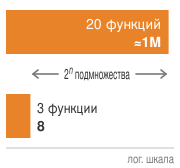
Точный перебор подмножеств растёт экспоненциально; алгоритмы, специфичные для модели, могут его избежать.
Вычислительная стоимость зависит от алгоритма атрибуции. Перебор всех подмножеств дал бы
Другой пост-хок подход — контрфактические объяснения, которые оценивают, как изменится выход модели при заданных изменениях входа. Они важны для приложений, ориентированных на принятие решений, таких как кредитные или кадровые системы, однако математическое «переключение» выхода само по себе ещё не является правом на обжалование. Полезный контрфакт должен отличать изменяемые признаки от неизменяемых, сохранять предметные ограничения и зависимости между признаками, указывать действие, находящееся в распоряжении пользователя, и оставаться валидным при будущей решающей политике учреждения (Wachter и др. 2017 г.). Поэтому генерация и валидация контрфактов требуют, помимо ограниченной оптимизации, предметных моделей, версионирования политик и операционных обязательств.
Третий класс методов опирается на объяснения на основе концепций, которые стремятся согласовать выученные признаки модели с понятными человеку концепциями. Например, метод тестирования с векторами активации концепций (TCAV) представляет заданные пользователем концепции как векторы в пространстве активаций и проверяет, насколько предсказания модели чувствительны к этим концепциям во внутреннем представлении (Kim и др. 2018 г.). Такие методы особенно полезны в областях, где эксперты ожидают объяснений в привычных семантических терминах. Однако они требуют обучающих данных с аннотациями концепций или вспомогательных моделей для их обнаружения, что создаёт дополнительные инфраструктурные зависимости.
Пост-хок методы отвечают на специфичные для конкретного метода вопросы о поведении модели. Даже точная атрибуция при выбранной функции ценности не восстанавливает причинное обоснование и не оправдывает решающую политику. Приближённые методы добавляют к этим интерпретационным ограничениям ошибку оценивания или суррогатную ошибку. Поэтому оценка должна устанавливать и то, что именно метод вычисляет, и то, служит ли полученное доказательство намеченной задаче отладки, коммуникации или проверки.
Внутренне интерпретируемые модели предоставляют структуру принятия решений, которую целевая аудитория может изучить. Этой цели могут служить небольшие деревья решений, короткие списки правил и разреженные линейные модели с осмысленными признаками; большое дерево или линейная модель высокой размерности — возможно, нет. Сравнения с ближайшими соседями также требуют понятной метрики сходства и репрезентативных примеров. Таким образом, интерпретируемость зависит от структуры, признаков и аудитории, а не только от ярлыка семейства моделей. В приложениях с высокими ставками выбор модели должен начинаться с оценки того, достаточно ли точная и проверяемая модель отвечает задаче, прежде чем считать пост-хок объяснения необходимыми (Rudin 2019 г.).
Шесть распространённых семейств моделей располагаются вдоль континуума интерпретируемости в трёх группах (Рисунок 9). Разреженные линейные модели (объясняются коэффициентами) и небольшие деревья решений (путями разбиений) интерпретируемы по построению. Прототипные и концептуальные модели — гибридные архитектуры, объясняемые через образцы. Ансамбли деревьев (через TreeSHAP), глубокие сети (через градиенты и SHAP) и фундаментальные модели (через зонды — обучение небольшого классификатора, считывающего свойство из внутренних активаций) требуют пост-хок объяснения. Хотя этот порядок служит структурной эвристикой по семействам моделей, размерность и масштаб могут сдвигать границы: дерево решений с миллионом узлов или плотная линейная регрессия могут оказаться столь же непрозрачными, как глубокая нейронная сеть. Это различение принципиально при выборе подходящей модели для конкретного приложения, особенно там, где важны регуляторный контроль или доверие заинтересованных сторон.
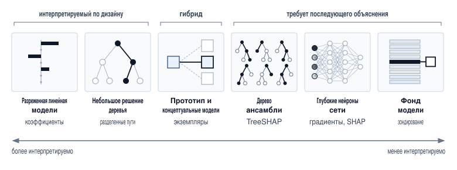
Гибридные подходы стремятся соединить представительную ёмкость глубоких моделей с прозрачностью интерпретируемых компонентов. Например, концептуальные модели с «бутылочным горлышком» (Koh и др. 2020 г.) сначала предсказывают промежуточные интерпретируемые переменные, а затем простым классификатором получают итоговое предсказание. Модели ProtoPNet (Chen и др. 2019 г.) классифицируют примеры, сравнивая их с выученными прототипами, и предлагают пользователю визуальные аналогии для понимания предсказаний. Такие гибридные методы привлекательны в областях, требующих частичной прозрачности, но порождают новые системные соображения проектирования — например, необходимость хранить и индексировать выученные прототипы и предоставлять их во время инференса.
Работы вроде Olah и др. (2020 г.) и Geiger и др. (2021 г.) применяют механистическую интерпретируемость для реверс-инжиниринга внутренних операций нейронных сетей. Это направление, вдохновлённое анализом программ и нейронаукой, стремится сопоставить нейроны, слои или паттерны активаций конкретным вычислительным функциям. Утверждения о таких механизмах требуют инструментирования и тестов, поддерживающих предложенную интерпретацию. Эти исследовательские методы могут дать свидетельства о внутреннем вычислении, но не обеспечивают полный аудит каждой развёрнутой модели.
Системной точки зрения объясняемость вводит ряд архитектурных зависимостей. Объяснения должны генерироваться, храниться, предоставляться и оцениваться в рамках системных ограничений. Необходимая инфраструктура может включать API объяснений, память для хранения карт атрибуции, библиотеки визуализации и механизмы журналирования, фиксирующие промежуточное поведение модели. Модели часто приходится инструментировать хуками или настраивать для поддержки повторных вычислений, особенно для методов объяснения, требующих сэмплирования, возмущений или обратного распространения.
Социально-технические трудности объясняемости сосредоточены в разрыве между техническими объяснениями и человеческим пониманием. Хотя алгоритмы способны порождать атрибуции признаков и градиентные карты, заинтересованным сторонам нужны объяснения, согласующиеся с их ментальными моделями, предметной экспертизой и процессами принятия решений. Радиолог, проверяющий поставленный ИИ диагноз, нуждается в объяснениях, отсылающих к медицинским концепциям и визуальным паттернам, а не к абстрактным активациям нейронной сети. Эта задача перевода требует постоянного сотрудничества технических команд и предметных экспертов для разработки форматов объяснений, одновременно технически корректных и практически осмысленных. Объяснения могут влиять на принятие решений человеком неожиданным образом, создавая новые обязанности по тому, как поясняющая информация подаётся и интерпретируется. Этот разрыв между технически корректным и пригодным к использованию объяснением — первое проявление более широкой проблемы. Каждый элемент управления в этой главе действует внутри человеческих процессов и институтов, которыми никакой метод на уровне модели не управляет.
16.7.3 Размещение объяснений
Устранение этого разрыва при производственных сроках начинается с того, где вычисление объяснения успевает выполняться. Запуск сэмплируемого KernelSHAP встроенно на микроконтроллере или в контуре управления с периодом 10 ms пропустит срок срабатывания раньше, чем завершится хоть одна атрибуция, тогда как вынесение всех атрибуций в офлайн-очередь батчей оставит отклонённому заявителю немедленной причины решения. Вычислительная ёмкость, бюджет задержки, дизайн интерфейса и доступ к данным ограничивают и метод объяснения, и его размещение. Облачный воркер может выполнять дорогую атрибуцию SHAP или LIME; ограниченная конечная точка может использовать более дешёвую градиентную карту значимости (saliency), если её среда исполнения поддерживает градиенты. Устройства, не способные генерировать объяснения локально, могут сохранять ограниченные записи решений для последующего анализа бэкендом или при обслуживании — то самое разделение по уровням, которое зафиксировано в строке объясняемости таблицы Таблица 4.
Аудитория и сроки дополнительно ограничивают дизайн объяснений. Конечному пользователю может быть нужна краткая сводка («повышенная частота пульса во сне»), а разработчику или аудитору — карты атрибуции, активации концепций или трассы решений. Требуемое доказательство зависит от того, что именно человек должен понять или сделать. Дрон или промышленный контроллер должен укладывать работу по объяснению в свой дедлайн управления или выводить её с критического пути. Финансовым и клиническим процессам тоже нужен заданный срок доставки, который может допускать анализ после автоматического решения, но до рассмотрения или обжалования. Планирование с учётом аудитории и срока, в пределах ресурсов развёртывания, превращает интерпретируемость в проектное ограничение.
Требования к хранению также существенно растут с ростом потребностей в объяснимости. Хранение SHAP-значений для табличных данных требует порядка 4–8 bytes на признак на каждое предсказание, так что месячный объём хранения составляет 30 million предсказаний, умноженные на число признаков и на 4–8 bytes, для системы, логирующей 1 million предсказаний в день. Карты градиентной атрибуции для изображений могут требовать 1–10 MB на объяснение в зависимости от разрешения; логирование каждого объяснения изображения с той же частотой 1 million в день потребовало бы порядка 30–300 TB в месяц, если только объяснения не сэмплируются, не сжимаются и не хранятся в течение более короткого окна. Такие объёмы требуют аккуратного управления жизненным циклом данных и политик хранения.
Техники сжатия и оптимизации также влияют на объяснимость. Прореживание (pruning), квантизация и упрощения архитектуры, часто применяемые в сценариях TinyML или на мобильных устройствах, могут искажать внутренние представления или отключать поток градиентов, снижая надёжность объяснений, основанных на атрибуции. В таких случаях интерпретируемость необходимо проверять после оптимизации, чтобы убедиться, что она остаётся осмысленной и заслуживающей доверия. Однако даже объяснение, пережившее оптимизацию и уложившееся в бюджет задержки (latency) и хранения, защищает пользователя лишь тогда, когда окружающий сервис предоставляет возможность действовать на его основе.
16.7.4 Прозрачность и оспариваемость
Показать отклонённому заявителю по кредиту диаграмму атрибуции по признакам не имеет смысла, если в приложении нет кнопки для оспаривания ошибки в кредитном файле, нет человека-рецензента с полномочиями отменить отказ и нет неизменяемого снимка входных данных, породивших скоринговую оценку. Объяснения служат подотчётности (accountability) только тогда, когда заинтересованные стороны могут и понять, и оспорить решения системы. Прозрачность позволяет пользователям, разработчикам, аудиторам и регуляторам изучать, как функционирует система, оценивать её ограничения и выявлять источники вреда (harm), но само по себе раскрытие информации недостаточно. В областях с высокими ставками отдельным людям и организациям нужна оспариваемость: операционная возможность запросить, обжаловать и отменить автоматизированное решение.
Инструменты документирования, такие как модельные карты (model cards) — стандартизированные отчёты, публикуемые вместе с обученной моделью, — и datasheets для наборов данных, их аналог для датасета, формализуют раскрытие информации на уровне системы, фиксируя, как обучались модели, на каких данных они основаны, какие допущения заложены в их дизайн и какие известные ограничения влияют на их использование. Такие артефакты улучшают управление (governance), поддерживают соответствие требованиям и формируют ожидания пользователей, однако статическая документация всё ещё оставляет затронутых лиц без интерфейсных инструментов, процедурного доступа и институциональной поддержки, когда конкретное решение наносит им вред.
Чтобы перейти от прозрачности к оспариваемости, системы машинного обучения должны интегрировать механизмы объяснения, права на обжалование (recourse) и обратной связи. Объяснение предоставляет понятные причины выходов системы, адаптированные к операционному контексту и потребностям человека, который их получает. Право на обжалование определяет осуществимые изменения, посредством которых человек мог бы получить иной результат в рамках заявленной политики принятия решений. Предлагаемое изменение должно быть выполнимым для конкретного человека; одно лишь контрфактическое предсказание не гарантирует результата после изменения модели или политики. Обратная связь позволяет пользователям и экспертам в предметной области оспаривать результаты, сообщать об ошибках или сигнализировать о замечаниях, направляя эти сигналы в процессы надзора и обновления модели.
Эти механизмы могут отсутствовать в пользовательском сценарии даже при наличии внутренней документации. Мобильное кредитное приложение может показать отказ, не объясняя, как отправить дополнительные сведения или связаться с рецензентом по обжалованиям. Внешний процесс обжалования может существовать, но пользователям нужен обнаружимый путь к нему и доступ к доказательствам, относящимся к их делу. Аналогично, клиническая модель может выдать риск-скор без достаточного контекста, позволяющего врачу усомниться в её применении к конкретному пациенту. Если ошибки в подгруппах ни наблюдаемы, ни оспариваемы, возникающий вред становится труднее диагностировать и исправить.
С точки зрения систем, обеспечение оспариваемости требует координации между техническими и институциональными компонентами. Модели должны предоставлять достаточно информации для поддержки объяснений. Интерфейсы должны доводить эту информацию до пользователя удобно и своевременно, чтобы организационные процессы могли рассматривать обратную связь, отвечать на обжалования и обновлять поведение системы. Инфраструктура логирования и аудита должна также отслеживать вмешательства пользователей и отменённые решения наряду с выходами модели. Человеческие отмены решений и воздержание от принятия решения могут поддерживать этот процесс только тогда, когда квалифицированные рецензенты располагают пропускной способностью, доказательствами и полномочиями разрешить отложенные дела в установленный срок.
Внедрение оспариваемости влечёт конкретные инфраструктурные издержки, масштабирующиеся с пропускной способностью и сложностью системы. Хранение метаданных, необходимых для реконструкции решения (входные признаки, версия модели и пороги принятия решений), требует постоянного хранилища, чей занимаемый объём зависит от размерности признаков, объёмов payload объяснений и окон хранения. Генерация объяснений по запросу с использованием значений Шэпли или контрфактических примеров может добавить столько задержки, что для оспариваемых решений часто нужны асинхронные очереди обработки, чтобы сохранить соглашения об уровне обслуживания (SLA) при обслуживании. Выполнение обязательств по ведению записей и автоматическому логированию для высокорисковых систем в рамках таких нормативных актов, как EU AI Act, требует закладывать хранилище, провенанс, политики хранения и мощность надзора в бюджет инференс-парка, а не в отдельный политический артефакт (European Parliament and Council of the European Union 2024 г.).
Практический случай 16.1: Apple Card: системная реконструкция оспоренных решений (2019)
Контекст: В 2019 году Apple и Goldman Sachs оказались под пристальным общественным вниманием после того, как клиент сообщил о кредитном лимите в 20
Evidence boundary: Публичная документация фиксирует жалобы, расследование, выводы регулятора и изменения политики обжалования. Она не раскрывает целевую задержку конвейера андеррайтинга или внутреннюю архитектуру объяснений. Приведённый ниже системный разбор — поэтому явная реконструкция, а не отчёт о деталях реализации Apple или Goldman Sachs.
Reconstructed mechanism: Сервис андеррайтинга с низкой задержкой, возвращающий только лимит и общую причину неблагоприятного решения, оставляет персонал поддержки без возможности изучить снимок решения, отличить ошибки данных от эффектов политики или направить оспоренный результат рецензенту. Отсутствующий интерфейс шире, чем атрибуция по признакам. Он включает версионированный провенанс входных данных, версии политики и модели, причины, соответствующие процессу принятия решения, состояние обжалования и полномочия исправить ошибку.
Observed impact: Департамент финансовых услуг штата Нью-Йорк не выявил нарушения закона о справедливом кредитовании в ходе расследования, однако жалобы всё же обнажили провал в доверии и оспариваемости. Клиенты и персонал первой линии не имели удовлетворительного объяснения того, как можно рассмотреть внешне непоследовательные результаты (New York State Department of Financial Services 2021 г.).
Системный урок: Системам принятия решений с высокими ставками нужен интерфейс оспариваемости, а не просто API атрибуции. Защитимая архитектура сохраняет собранные в момент решения доказательства, необходимые для аудита, порождает надлежащие причины, не утверждая, что атрибуция тождественна причинности, направляет обжалования уполномоченному человеку, фиксирует исправления и тестирует весь сценарий под его ограничениями по задержке и хранению.
Реконструкция с Apple Card называет те элементы, которых не хватает подобной системе. Один из архитектурных паттернов, их восполняющий, — это стек оспариваемости, аналогичный распределённой трассировке в микросервисах, координирующий четыре связанных этапа вдоль операционного конвейера. Провенанс решений сохраняет проверяемую связь от каждого выхода обратно к управляющей политике, версии модели и снимку входных данных, защищённую аутентифицированными журналами или криптографическими проверками целостности. Генерация объяснений распределяет бюджет методов объяснения, подобранных для обжалований, аудитов и рутинной коммуникации, вынося вычислительно затратные методы в асинхронные воркеры, а лёгкие техники оставляя на пути запроса. Когда решения оспариваются, маршрутизация обжалований направляет спорные случаи квалифицированным людям-рецензентам, оснащённым контекстом предметной области. Замыкая цикл, отслеживание исходов фиксирует, подтвердил ли апелляционный орган или отменил машинное решение, подавая эмпирические расхождения обратно в оценку и дообучение. Отсутствие записей, сделанных в момент решения, может помешать следователям реконструировать оспоренное решение, даже если агрегированная отладка остаётся возможной, поэтому состав сохраняемых записей определяется тем, что понадобится для расследования и исправления.
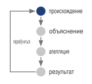
Провенанс является опорой каждого обжалования; отслеживаемые исходы замыкаются обратно на дообучение.
Стек не обязан работать там, где принимается решение. Конечная точка на периферии или в TinyML может передавать записи о своих решениях в бэкенд-процесс рассмотрения при следующей синхронизации или сервисном визите, что удлиняет путь доказательств для обжалования, не отменяя обязанности его предоставить. На каждом уровне прозрачность поддерживает подотчётность только тогда, когда пользователи и организации могут использовать раскрытую информацию, чтобы оспаривать и исправлять автоматизированные решения. Однако оспариваемость и обжалования действуют уже после принятия решения; когда система действует в безопаснокритичных средах или порождает открытые выходные данные в масштабе, управление (governance) должно также ограничивать то, как модель может выйти из строя, прежде чем произойдёт вред.
16.8 Безопасность ИИ, робастность и генеративные контуры управления
Модель, выдерживающая каждую протестированную возмущённую вариацию, всё ещё может причинить вред, когда операционная среда выходит за пределы валидированного охвата или когда её целевая функция поощряет неправильное поведение. Поэтому управление безопасностью (safety governance) охватывает робастностные утверждения, ограниченные моделью угроз, поверхности управления для генеративных систем, чьи выходы невозможно перечислить заранее, и согласование самой целевой функции по мере того, как системы действуют со всё большей автономией.
16.8.1 Безопасность и робастность
Модель восприятия, проходящая любой
↩︎ Три столпа робастности — сдвиги среды, атаки на уровне входных данных и системные сбои вроде переворотов битов — введены в Три столпа устойчивого ИИ.
Поэтому ответственный-ИИ вопрос состоит не в том, какую атаку или защиту реализовать, а в том, есть ли у робастностного утверждения ограниченный операционный охват, доказательства, соответствующие модели угроз, подотчётный владелец и правило, аннулирующее одобрение. Оценка может ограничить ошибки при заданной вариации входных данных, не устанавливая, что окружающий рабочий процесс безопасен. Отказы беспилотных автомобилей показывают, почему охват должен покрывать больше, чем модель, поскольку они могут сочетать проблемы восприятия, предсказания, водителя-страховщика и организационного контроля, а не сводиться к единственной ошибке модели; Глава 16.8.4 разбирает одну такую аварию.
Утверждение о робастности должно указывать защищаемую задачу и популяцию, знание и возможности атакующего, набор возмущений или повреждений, распределение для оценки, версии модели и предобработки, ограничения по качеству и задержке, поведение при откате и известные исключения. Состязательные входные данные (Состязательные атаки) и сдвиг ковариат, меток и концептов (Сдвиг распределения и концептуальный дрейф) — те источники отказов, которые такое утверждение чаще всего обязано ограничивать. Эмпирические результаты атак показывают наблюдаемые отказы в рамках тестового протокола; они не устанавливают робастность против адаптивных или непротестированных атак. Сертификат доказывает свойство только для заявленных нормы, радиуса, доверия и конфигурации модели; он не устанавливает безопасность сквозного рабочего процесса. Управление фиксирует эти границы, чтобы узкий результат нельзя было продвинуть до общего утверждения о безопасности.
Бюджет задержки определяет, какие проверки безопасности можно выполнить до действия. Облачный сервис может объединять оценщики неопределённости, детекторы изменения распределения, фильтрацию состязательных входных данных и ограничение частоты запросов к API. Циклу управления с бюджетом в миллисекунды нужны ограниченные по времени локальные проверки и действия отката, укладывающиеся в его дедлайн, причём более тяжёлый анализ откладывается до сервисов парка — это разделение фиксирует строка безопасности таблицы Таблица 4 по уровням. Даже отключённая конечная точка TinyML может выполнять проверки диапазона входных данных или сторожевую логику; отсутствие канала удалённого обновления вместо этого ограничивает то, как операторы меняют эти механизмы после развёртывания.
Откат сам по себе является проблемой бюджета задержки. Робот-доставщик, воздерживающийся17 от решения при низкой уверенности детекции пешеходов, всё равно нуждается в валидированной реакции до физического дедлайна безопасности. Ограниченный локальный манёвр может перевести его в безопасное состояние, пока человек-рецензент разрешает случай на более длинном масштабе времени. Поэтому пути реакции и рассмотрения нуждаются в отдельных дедлайнах и бюджетах мощности. Может ли система отказывать заметно, управляемо и безопасно — зависит от сенсорики, оценивания уверенности, маршрутизации отката и восстановления. Эти решения также определяют, кто может наблюдать вред, кто может вмешаться и кто остаётся подотчётным за исход.
↩︎ Контракт компетентности на каждый запрос, объединяющий калибровку и оценки out-of-distribution в политику селективного предсказания — ответить, воздержаться или эскалировать, — введён в Компетентность на уровне запроса и селективное предсказание.
Набор доказательств должен также связывать поведение модели с действием системы. Он определяет, кто владеет утверждением о робастности, какая команда может остановить обслуживание, как маршрутизируются воздержания и случаи с низкой уверенностью, какая телеметрия обнаруживает выход из одобренного охвата и как инцидент достигает затронутых пользователей и нижестоящих операторов. Откат должен укладываться в соответствующий дедлайн безопасности. Сигнал мониторинга становится операционной защитой только тогда, когда он достигает уполномоченного пути реагирования — будь то локальная локализация, ограничение использования или валидированный откат.
Одобрение истекает, когда модель угроз, модель, предобработка, сенсор, распределение данных, среда развёртывания или путь отката существенно меняются. Правило аннулирования должно указывать, какое изменение влечёт полную редтим-оценку (red-team), какое допускает более узкий регрессионный набор, а какое требует ограниченной эксплуатации, пока доказательства восстанавливаются. Этот контракт владения и аннулирования и есть вклад управления, превращающий механизмы робастности в проверяемое утверждение, остающееся ограниченным во времени.
16.8.2 Генеративные поверхности управления
Бинарный кредитный классификатор имеет два возможных выхода для аудита. Большая языковая модель (LLM) вроде Archetype A (GPT-4/Llama-3), напротив, может быть направлена пользовательским промптом или отравленным извлечённым документом к генерации клеветнических утверждений, утечке персональных данных или отказам на безобидные запросы на одном диалекте чаще, чем на другом. Генеративный ИИ не заменяет ключевые вопросы справедливости (fairness), приватности и объяснимости; он меняет поверхность управления. Вместо аудита только меток или атрибуций по признакам операторы должны управлять промптами, извлечённым контекстом, моделями вознаграждения и открытыми выходами. Справедливость по-прежнему касается того, как качество, отказы, ошибки, репрезентация и доступ распределены между людьми и группами, но открытые выходы затрудняют определение и выборку этих величин.
Согласование (alignment) вводит отдельную проблему — удержание стохастических выходов и действий в соответствии с намеченными целями и политиками в комбинаторном диапазоне промптов. Эти два вопроса различаются по сути. Справедливость спрашивает, как выгоды, ошибки и бремена распределены среди затронутых людей; согласование спрашивает, следует ли оптимизирующая система цели, задуманной её проектировщиками и легитимными заинтересованными сторонами. Согласованная система может верно реализовывать несправедливую цель, а статистически справедливый классификатор может оптимизировать неверную социальную цель, поэтому производственным системам нужны и оценка справедливости, и поведенческое согласование, а не переименование одного в другое.
Распространённый многоэтапный конвейер согласования использует обучение с подкреплением на основе обратной связи от людей (RLHF),18 работающий в двух связанных линиях, чтобы связать человеческие предпочтения и веса модели (Рисунок 10). Верхний исполнительный путь продвигает политику от предобучения через управляемое дообучение (SFT) к проксимальной оптимизации политики (PPO), а нижний путь супервизии использует сравнения предпочтений от людей для обучения модели вознаграждения
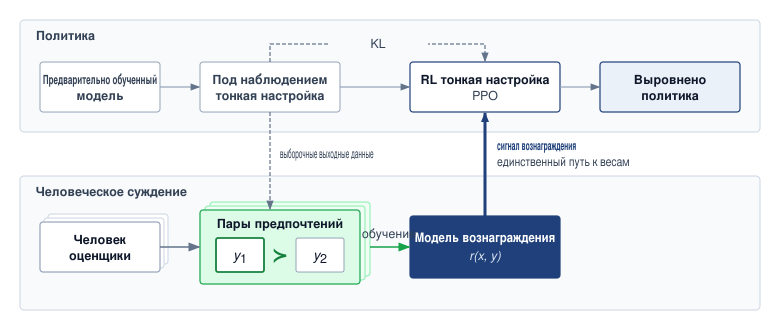
Сбор человеческих сравнений, на которых обучается модель вознаграждения в Рисунок 10, несёт прямую стоимость приобретения данных. В этом сценарии 50,000 — 500,000 попарных сравнений по $0.50 — $5 за метку дают бюджет разметки от $25,000 до $2.5M; стократный разброс задаётся тем, сколько суждений покупает организация и насколько экспертными должны быть её разметчики. Обновление политики методом PPO по этим выученным вознаграждениям также может создать «налог на выравнивание» — регрессию по некоторым метрикам возможностей, когда оптимизация смещается к целям предпочтений или безопасности; её направление и величина зависят от модели, данных, целей и набора оценок, а не следуют универсальному проценту.
Опора на людей-разметчиков вводит и разрыв репрезентативности. Если бюджет разметки покупает суждения лишь узкого демографического среза, полученная модель может закодировать предпочтения этой группы, при этом иначе работая для других популяций. Constitutional AI предлагает альтернативный инженерный путь, используя явные принципы для направления ИИ-обратной связи на выходах (Bai и др. 2022 г.), что меняет, а не устраняет вопросы о том, чьи ценности представлены и как они управляются.
↩︎ Координация четырёх моделей, которую PPO-подобный шаг RLHF накладывает на распределённое обучение, рассмотрена в Проблема координации нескольких моделей.
В архитектурах генерации с дополнением из поиска ответственность выходит за пределы самой модели. LLM может пройти оценку выравнивания, но генерировать вредные ответы, когда поиск подаёт контекст вне этих оценок. Индекс поиска, непропорционально выдающий смещённые исторические документы, может влиять на итоговые ответы несмотря на обучение безопасности. Фильтрация контекста — один из возможных механизмов контроля наряду с выбором источников, оценкой поиска и проверкой выходов. Её эффективность должна проверяться на целевом применении: фильтр токсичности не доказывает, что найденные материалы или сгенерированные ответы несмещённы.
Во многих стеках обслуживания LLM системный промпт действует как ранний механизм конфигурации наряду с фильтрацией поиска, классификаторами политик, телеметрией и шлюзами развёртывания. Эти инструкции (например, «You are a helpful assistant. Do not provide medical advice.») выражают желаемое поведение; они не обеспечивают самостоятельно авторизацию и не предотвращают каждый запрещённый вывод. Когда одна модель обслуживает много продуктов, каждый со своим системным промптом, управление промптами становится распределённой задачей управления конфигурациями, подобной распределению весов. Неверсионированное изменение промпта может изменить поведение во множестве взаимодействий, поэтому контроль версий промптов, регрессионное тестирование выравнивания и постепенные развёртывания принадлежат процессу выпуска.
Вместе системные промпты и выравнивание RLHF выступают важными, но хрупкими техническими ограждениями. Джейлбрейки и другие крайние случаи могут нарушить политику, выученную при обучении; модель вознаграждения не обязательно является фильтром во время исполнения. Поэтому безопасность требует оценивать развёрнутую систему управления, а не только её цель обучения.
↩︎ Джейлбрейки, обходящие механизмы выравнивания, и prompt injection, пересекающий границу между инструкциями и данными, рассмотрены в Векторы атак, специфичные для LLM.
16.8.3 Безопасность ИИ и согласование ценностей
Промпт-фильтры и обучение модели вознаграждения всё ещё предполагают, что сама цель оптимизации отражает то, чего хотят заинтересованные стороны, — предположение, которое рушится, когда автономный торговый движок исполняет тысячи ордеров в секунду, а ранжировщик рекомендаций перестраивает миллиарды лент быстрее, чем человек способен рассмотреть отдельные решения. На такой скорости работы главный вопрос уже не только в том, справедливы, приватны или объяснимы ли отдельные выходы, а в том, служит ли людям, на которых система воздействует, та цель, которую она оптимизирует, и что ограничивает её действия до проверки. Полномочия человека на запуск остаются необходимыми, но постоянное человеческое вмешательство может быть недоступно. Безопасность ИИ изучает, как системы могут оптимизировать цели, не согласующиеся с человеческими намерениями, действовать в непредсказуемых средах или преследовать цели методами, которых их разработчики не предвидели, и какие механизмы контроля могут ограничить эти действия.
Механизмы контроля из предыдущих разделов сохраняют свои роли, но ни один из них сам по себе не управляет автономным действием. Обнаружение смещения (Глава 16.5.2.1) даёт метрики, а не политику исправления. Система восприятия, недодетектирующая пешеходов со средствами мобильности, нуждается в рабочем диапазоне, связывающем метрику с ограниченными реакциями во время исполнения и с исследованием или приостановкой на уровне парка. Объяснимость (Глава 16.7.2) нуждается в аудитории и пути к действию; атрибуции SHAP от автономной торговой системы не могут повлиять на решение, если ни один механизм контроля не потребляет их до исполнения тысяч сделок. Дифференциальная приватность (Глава 16.6.3) ограничивает утечку о защищаемой единице, не определяя, служит ли цель благополучию этого человека, поэтому рекомендательная система может удовлетворять локальной гарантии дифференциальной приватности, оптимизируя метрику вовлечённости, которая поощряет вредный контент. Каждый метод нуждается в определённой связи с механизмами контроля во время исполнения и человеческими полномочиями, способными отреагировать на его результаты.
Работы по согласованию (alignment) подчёркивают поддержание соответствия преследуемых системой целей человеческим намерениям во времени (Russell 2021 г.). Центральная трудность в том, что способные ML-модели часто оптимизируют прокси-метрики — функции потерь, функции вознаграждения или сигналы вовлечённости, — не полностью отражающие человеческие ценности.
Рекомендательные системы иллюстрируют, почему измеримая прокси-метрика вовлечённости, такая как click-through rate (CTR) или время просмотра, нуждается в оценке против более широкого благополучия пользователя. Опубликованная производственная архитектура оптимизирует ожидаемое время просмотра (Covington и др. 2016 г.), а отдельный аудит исследует пути рекомендаций через политически экстремальный контент (Ribeiro и др. 2020 г.). Эти наблюдения мотивируют изучение рассогласования прокси; вместе они не доказывают, что конкретная целевая функция вознаграждения вызвала убеждения или поведение отдельного пользователя. Specification gaming и взлом вознаграждения19 описывают риск того, что оптимизация измеряемой цели упраздняет её исходное назначение (Amodei и др. 2016 г.). Закон Гудхарта называет общий паттерн, при котором мера, ставшая целью, перестаёт измерять то, для чего её выбрали (Goodhart 1984 г.). В одном из возможных механизмов обратной связи вовлечённость вознаграждает контент, подрывающий долгосрочную ценность для пользователя, и возникающие взаимодействия становятся новыми обучающими данными (Рисунок 11). Установление этого механизма в развёртывании требует свидетельств как о эффектах политики, так и о критерии благополучия, которому она должна служить.
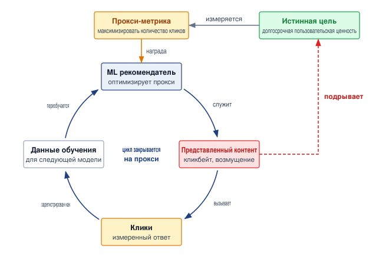
Норберт Винер писал: «если мы используем для достижения наших целей механическое устройство, вмешаться в работу которого мы эффективно не можем… нам лучше быть совершенно уверенными, что цель, заложенная в машину, — это именно та цель, которую мы желаем» (Wiener 1960 г.). Предостережение Винера становится системным требованием, когда оптимизация выходит за рамки непрерывного человеческого контроля. Согласование ценностей (value alignment) спрашивает, продолжает ли цель, заложенная в модель, функцию вознаграждения и политику развёртывания, представлять то человеческое назначение, которому система должна была служить.
При развёртывании трудность состоит в том, чтобы задать цель, остающуюся валидной по мере того, как системы взаимодействуют с динамическими средами, множеством заинтересованных сторон и петлями обратной связи. Статические целевые функции и сигналы вознаграждения не могут закодировать все эти условия. Ценностно-ориентированное проектирование (Value-Sensitive Design) (Friedman 1996 г.) предлагает формальный процесс выявления ценностей заинтересованных сторон и их включения в проектирование системы, но системная обязанность шире, поскольку проектирование целей, надзор и постразверточный мониторинг должны рассматриваться как связанные между собой средства управления.
Без этой связанности система может выполнить узкую цель — точность, вовлечённость или пропускную способность — и при этом давать результаты, которые её разработчики отвергли бы: паттерн reward hacking из Рисунок 11. RLHF (Глава 16.8.2) сокращает этот разрыв, обучая функцию вознаграждения на человеческих предпочтениях, но оптимизация политики по-прежнему максимизирует выученный скаляр, поэтому успех зависит от точности этого сигнала (Christiano и др. 2017 г.; Ouyang и др. 2022 г.).
Обучение на человеческой обратной связи может улучшить поведение на собственных оценках, оставив более глубокие риски управления нерешёнными. В своём анализе оптимизации выученного вознаграждения Ngo и др. (2022 г.) рассматривают возможные режимы отказа за пределами RLHF, включая эксплуатацию слепых зон человеческой оценки, рассогласованные цели вне распределения обучения и поведение, подрывающее надзор. Это риски, которые следует исследовать при заданных допущениях, а не доказательства того, что каждая развёрнутая модель их демонстрирует. Аргументация assurance case должна различать предложенный механизм отказа, наблюдаемую возможность и продемонстрированный отказ при развёртывании.
Эти опасения не ограничиваются умозрительными сценариями. В своей основополагающей таксономии конкретных проблем безопасности ИИ Amodei и др. (2016 г.) очерчивают пять практических системных вызовов: избегание негативных побочных эффектов при исполнении политики, ослабление reward hacking, обеспечение масштабируемого надзора, когда эталонная оценка затратна, проектирование безопасных стратегий исследования, предотвращающих катастрофический ущерб, и достижение устойчивости к сдвигу распределения. Для операторов парков эти пять вызовов отображаются по порядку в пять требований к плоскости управления: ограничение побочных эффектов, оснащение мониторами reward hacking, выделение ёмкости на масштабируемую проверку, ограничение огибающих исследования и стресс-тестирование сдвига распределения перед раскаткой. Каждое требование обостряется по мере масштабирования систем, их развёртывания в разнообразных условиях и интеграции с обратной связью в реальном времени или непрерывным обучением.
16.8.4 Автономные системы и доверие
В октябре 2023 года Калифорнийское ведомство автотранспорта приостановило разрешения Cruise на развёртывание и испытания беспилотных автомобилей из-за проблем с безопасностью (CNBC 2023 г.). Пятью годами ранее испытательный автомобиль Uber в Темпе (Аризона) сбил и убил пешехода, катившего велосипед, после того как одновременно отказали средства восприятия, предсказания, водитель-страхователь и организационные средства управления (National Transportation Safety Board 2019 г.). В аварии в Темпе Национальный совет по безопасности на транспорте установил, что автомобиль не классифицировал пешехода как объект, требующий уклонения, и что обнаружение объекта само по себе не гарантирует, что система безопасно отреагирует на это обнаружение. Урок для управления состоит в том, что ни один владелец отдельного компонента не мог бы в одиночку сертифицировать исход. Согласование ценностей касается цели; автономия касается эксплуатационной огибающей, внутри которой система преследует эту цель без человеческой проверки каждого действия.
↩︎ Хронология аварии Uber — от неустойчивой классификации через подавленное действие до запоздалого оповещения оператора — установлена в Отказы на периферии и во встраиваемых системах.
Хотя автономные системы вождения часто находятся в центре общественного внимания, схожие риски возникают и в других областях. В сообщениях о недавних конфликтах задокументировано растущее использование дистанционно пилотируемых и автономных военных систем (Reuters 2023 г.), что вызывает вопросы безопасности и эксплуатации наряду с трудными вопросами этического надзора, правил ведения боевых действий и ответственности. Эти дебаты касаются того, как подотчётность распределяется между разработчиками, развёртывающими и операторами (Centre for International Governance Innovation 2023 г.); они не оправдывают трактовку каждого отказа автономной системы как отсутствия применимой ответственности. Инженерная задача — сохранять доказательства и полномочия, необходимые для расследования конкретного отказа.
В своей основе этот вызов касается полномочий, делегированных автоматизированной системе. Рост производительности и пропускной способности не доказывает, что система способна действовать безопасно вне своей валидированной эксплуатационной огибающей. Средства управления во время исполнения должны обнаруживать релевантные нарушения границ и вызывать резервный режим, чьи допущения и время реакции соответствуют опасности. Человеческое вмешательство — доступная мера защиты только тогда, когда оператор способен распознать состояние и отреагировать до наступления вреда; при более быстрых опасностях требуется подходящий локальный отклик.
Задать такую эксплуатационную огибающую трудно в динамических средах, поскольку модель может опускать условия, важные для безопасного действия. Две классические проблемы представления помогают объяснить эту трудность (McCarthy 1981 г.). Описание действия не может перечислить каждый факт, который действие оставляет неизменным (проблема фрейма), или каждую предпосылку, необходимую действию для успеха (проблема квалификации). Эти проблемы мотивируют огибающую, которая декларирует свои эксплуатационные допущения и резервное поведение; ни одна из них не доказывает, что безопасное действие невозможно. На практике такие ограничения проявляются как хрупкая автономия: системы, выглядящие компетентными в номинальных условиях, но молча или опасно отказывающие при столкновении с неоднозначностью или сдвигом распределения.
Для решения этого исследователи предлагали формальные каркасы безопасности, такие как Responsibility-Sensitive Safety (RSS) (Shalev-Shwartz и др. 2017 г.), который разлагает абстрактные цели безопасности на математически определённые ограничения на поведение системы, такие как минимальные дистанции, профили торможения и условия приоритета проезда. Такие формулировки позволяют верифицировать свойства безопасности при заданных допущениях и сценариях. Однако подобные подходы остаются уязвимыми к тем же ограничениям, которые призваны решить, поскольку они не лучше заложенных в них допущений и часто требуют обширного моделирования предметной области, которое может плохо обобщаться на непредвиденные краевые случаи.
Для ML-команды практическим артефактом является аргумент безопасности (safety case), а не заявление о доверии. Для автомобиля эксплуатационная огибающая — это его область эксплуатационного проектирования (дорога, погода, скорость и условия движения, в которых он валидирован). Аргумент безопасности называет эту огибающую, свидетельства того, что модель испытана внутри неё, и средства управления, останавливающие или откатывающие парк, когда свидетельства перестают выполняться (Таблица 8).
| Элемент аргумента безопасности | Системные свидетельства | Эксплуатационный шлюз |
|---|---|---|
| Эксплуатационная огибающая | Область эксплуатационного проектирования, допущения о сенсорах, погода, география, скорость и уровень автономии | Блокировать развёртывание вне валидированной огибающей |
| Покрытие сценариев | Корпус редких событий, покрытие симуляциями, журналы воспроизведения, отключения и телеметрия опасных сближений | Требовать порогов покрытия перед расширением канареечной раскатки |
| Средства защиты во время исполнения | Правила дистанций в стиле RSS, пороги уверенности, резервные манёвры и задержка человеческого вмешательства | Инициировать безопасную остановку, перехват человеком или ограниченный режим при срабатывании защиты |
| Управление парком | Канареечная раскатка, централизованная панель безопасности, бюджет нарушений и путь отката по прерывателю | Остановить раскатку или вернуть модель при превышении порога метрик безопасности на уровне парка |
16.8.5 Безопасность в масштабе парка
Модель, достигающая 99,9 процента соответствия требованиям безопасности на запрос в изоляции, всё равно несёт вероятность отказа 0,1 процента на запрос, что при 10 000 узлов инференса, обслуживающих миллиарды ежедневных запросов, означает миллионы ожидаемых отказов безопасности ежедневно. Поэтому безопасность должна проектироваться как свойство уровня парка, а не только атрибут уровня модели, поскольку технические проблемы безопасности, рассмотренные в Глава 16.8.3, при производственных объёмах накапливаются в рутинные эксплуатационные инциденты.
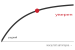
В масштабе парка редкие отказы становятся ожидаемыми инцидентами.
Поскольку фактическое число инцидентов может отличаться от ожидаемого, а коррелированные отказы способны концентрировать вред по всему парку, снижение риска на уровне парка требует распределённых шаблонов безопасности, заимствованных из инженерии надёжности. Автоматические выключатели (circuit breakers) останавливают обслуживание, когда агрегированные показатели безопасности деградируют ниже порога. Канареечные развёртывания ограничивают экспозицию при сборе свидетельств о выпуске, причём объём выборки и допустимый риск выбираются под тестируемые режимы отказа. Централизованные телеметрические дашборды агрегируют нарушения безопасности на отдельных узлах в глобальную картину. Операционная инфраструктура должна рассматривать нарушения безопасности как критические системные оповещения и запускать проверенную политику локализации или отката. Откат уместен только в том случае, если предыдущая версия и сам переход безопасны; при активном физическом управлении может потребоваться манёвр минимального риска вместо этого.
↩︎ Состояния автоматического выключателя и контракт обратного давления, изолирующие отказавший путь обслуживания, описаны в Автоматические выключатели и обратное давление.
Экспозиция — это множитель, превращающий небольшой уровень на милю в множество инцидентов. Беспилотный парк Waymo проехал около 22 миллионов миль без водителя-человека к июню 2024 года и 271 миллионов к июню 2026 года — рост в 12× раза за два года (Рисунок 12, панель a) (Waymo 2026 г.). Его опубликованные уровни аварийности существенно ниже бенчмарка водителя-человека на тех же дорогах: например, 0.67 аварий с травмами на миллион миль против 3.8 (панель b) (Waymo 2026 г.). При такой экспозиции его автомобили всё же попали в 183 аварий с травмами и 2 аварий со смертельным исходом, поэтому обоснование безопасности парка должно закладывать бюджет на инциденты в абсолютных числах, а не только в уровнях. При любом постоянном уровне на милю рост экспозиции в 12× раза повышает ожидаемое кумулятивное число инцидентов во столько же раз, хотя ни один отдельный автомобиль не стал менее безопасным. Это число — математическое ожидание, а не реализованный результат, и оно кумулятивно; оператору, рассчитывающему мощности еженедельного реагирования на инциденты, нужна недельная статистика пробега вместо этого.
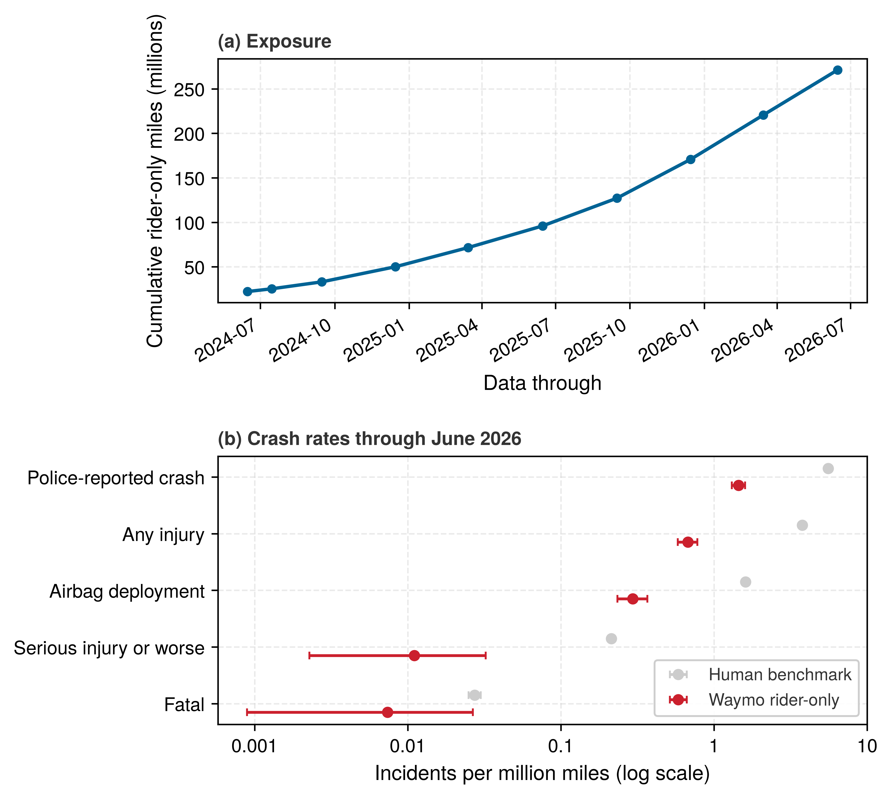
Даже парк, чей уровень аварийности на милю превосходит бенчмарк водителя-человека, по мере масштабирования экспозиции накапливает абсолютные инциденты, поэтому одно лишь техническое совершенство не делает систему безопасной. Безопасные системы требуют также внимания к человеческому и организационному контексту, в котором они действуют, включая экономические стимулы, формирующие проектные решения, и понимание, которое конечные пользователи привносят во взаимодействие с автономными системами. Эти институциональные обязательства — предмет подотчётности, управления и социотехнического анализа.
16.9 Подотчётность, управление и социотехническая динамика
Когда развёрнутая модель причиняет кому-то вред, вопрос о его исправлении решают два обстоятельства: кто обладает полномочиями расследовать и устранять решение и сохраняются ли необходимые для этого свидетельства. Подотчётность отвечает на оба вопроса, назначая ответственных, сохраняя прослеживаемые записи и наблюдая за поведением после запуска; она должна действовать внутри человеческих процессов и институтов, окружающих систему.
16.9.1 Подотчётность и управление
Когда сторонняя платформа найма отклоняет квалифицированных кандидатов из одной демографической группы, работодатель винит поставщика модели, а поставщик — исторический корпус резюме. У отклонённых кандидатов нет средства защиты, пока контракт и журнал аудита не распределят ответственность между всеми тремя сторонами. Подотчётность в машинном обучении — это способность идентифицировать, атрибутировать и устранять последствия автоматизированных решений. Она выходит за рамки диагностики технических сбоев: она гарантирует, что ответственность за поведение системы явно назначена, что вред может быть компенсирован и что стандарты поддерживаются через надзор и институциональные процессы. Без этих механизмов даже благонамеренные системы способны порождать вред без права на обжалование, подрывая общественное доверие.
Подотчётность уже охватывает поставщиков и операторов в распределённом программном обеспечении. Машинное обучение расширяет эти зависимости через сбор данных, разметку и выбор целевых переменных и прокси для предсказания. Выходы модели формируются восходящим сбором данных, целями обучения, проектированием конвейера, поведением интерфейса и обратной связью после развёртывания. Эти взаимосвязанные компоненты часто вовлекают множество участников из технической, юридической и организационной областей. Ответственное проектирование системы требует явного отображения и управления этими отношениями.
Неудовлетворительное управление может помешать институтам распознать или исправить вредоносное поведение модели. Анализ Google Flu Trends выявил устойчивую переоценку вопреки обновлениям модели и исследовал, как изменения поискового поведения и самого поискового сервиса могут подорвать предиктор, обученный на более ранних корреляциях (Lazer и др. 2014 г.). Его сравнение с данными надзора CDC обосновывает конкретное требование к управлению, а именно наличие владельца, ответственного за постоянную валидацию и перекалибровку по независимому процессу измерения. Правовые рамки подкрепляют это требование, поскольку некоторые из обязательств, отображённых на жизненный цикл гарантий (Глава 16.2), назначают таких владельцев и записи по закону.
Проектирование ради подотчётности предполагает поддержку прослеживаемости на каждом этапе жизненного цикла системы. Это включает документирование происхождения данных, регистрацию версионирования модели, обеспечение человеческих переопределений и сохранение достаточных журналов для ретроспективного анализа. Такие инструменты, как модельные карточки (model cards)20 (Mitchell и др. 2019 г.) и паспорта данных (datasheets for datasets)21 (Gebru и др. 2021 г.), служат примерами практик, делающих поведение системы интерпретируемым и проверяемым. Однако подотчётность не сводится к одной документации; она требует также механизмов обратной связи, оспаривания и возмещения.
Внутри организаций структуры управления помогают формализовать эту ответственность. Процессы этической экспертизы, межфункциональные аудиты и комитеты по модельному риску дают площадки для предвосхищения downstream-влияния и реагирования на новые опасения. Эти структуры должны опираться на инфраструктуру, позволяющую пользователям оспаривать решения, а разработчикам — отвечать исправлениями. Например, системы, допускающие объяснения или инициированные пользователем проверки, помогают сократить разрыв между логикой модели и опытом пользователя, особенно в областях, где цена ошибки значительна.
Архитектурные решения тоже играют роль. Интерфейсы можно спроектировать так, чтобы они показывали неопределённость, допускали эскалацию или при необходимости приостанавливали автоматизированные действия. Конвейеры журналирования и мониторинга должны быть сконфигурированы для обнаружения признаков этического дрейфа, например деградации качества по субпопуляциям или непредвиденных петель обратной связи. В распределённых системах, где равномерную наблюдаемость поддерживать трудно, подотчётность встраивается через архитектурные гарантии: защищённые протоколы, ограничения обновлений или доверенные компоненты.
Подотчётность реализуется через инфраструктуру прослеживаемости, распределённую между конечным устройством и его оператором. Облачная платформа поддерживает реестры моделей, телеметрические дашборды и структурированные событийные конвейеры, отслеживающие предсказание до конкретной модели, входа или конфигурации. Конечное устройство TinyML может хранить лишь идентификатор прошивки и ограниченные записи событий, тогда как оператор ведёт инвентарь развёртываний, свидетельства валидации и историю обслуживания или обновлений. Если устройство не может сохранять свидетельства событий или принимать обновления, обоснование гарантий должно заявить эти пределы и определить путь отзыва или вывода из эксплуатации — обязательство, которое строки подотчётности и управления в Таблица 4 назначают каждому уровню.
Мобильное развёртывание делает это разделение ответственности конкретным. Локальная модель, удалённый сервис и пользовательский интерфейс могут каждый вносить вклад в решение, поэтому операционный контракт должен распределить расследование и исправление между их владельцами. Управление зависит от доступных путей обжалования и механизмов выявления, объяснения и оспаривания решений, встроенных как в интерфейс, так и в окружающую сервисную архитектуру. Во всех средах поддержание подотчётности означает планирование отказа так же обдуманно, как и успеха. Операторы должны определить, как обнаруживаются аномалии, как назначаются роли, как ведутся записи и как происходит исправление, с прослеживаемостью каждого шага в журналах и принудительным исполнением через интерфейсы.
Управление не означает централизованный контроль. Напротив, оно предполагает распределение ответственности прозрачным, действенным и устойчивым образом. Технические команды, юристы, конечные пользователи и институциональные руководители должны все иметь доступ к инструментам и информации, необходимым для оценки поведения системы и вмешательства при необходимости. По мере усложнения МЛ-систем и их встраивания в критически важную инфраструктуру подотчётность должна масштабироваться соответственно — становясь основополагающим соображением в архитектуре и процессе, а не реактивным слоем, добавляемым после развёртывания.
Контрольная точка 16.2: Принципы как инженерные ограничения
Справедливость, приватность, объяснимость и безопасность теперь каждая несёт измеримое требование и стоимость, а подотчётность называет того, кто должен за них отвечать. Прежде чем глава поведёт этих владельцев к валидации и мониторингу, проверьте, что каждый принцип работает как инженерное ограничение, а не как благопожелание.
От принципа к механизму
Оценка компромисса
Подотчётность решает, могут ли проверенные выше требования быть принудительно исполнены. Принуждение начинается до выпуска — со свидетельств валидации, которые рассматривает выпускающий орган, — и продолжается после него через мониторинг.
16.9.2 Подходы к валидации
Кандидат на выпуск, прошедший единственный тест на точность на отложенной выборке в непрерывной интеграции, всё ещё может быть отправлен с 20-пунктовым разрывом ошибок по субгруппам, непроверенным приватностным счётчиком или объяснениями, рассыпающимися при квантизации — если ни один предзапусковый шлюз не требует этих свидетельств. Пока детекция выявляет проблему, а митигация пытается её исправить, валидация поставляет пакет свидетельств на этап оценки и гарантий Таблица 1. Валидация — не отдельный столп и не безусловное заявление о безопасности системы; она проверяет ограниченные требования и фиксирует остаточную неопределённость для выпускающего органа. Разным заинтересованным сторонам нужны разные свидетельства: разработчикам — диагностика, аудиторам — воспроизводимые статистические анализы, регуляторам могут требоваться артефакты соответствия, а затронутым пользователям — понятные причины и работающий путь оспаривания. Пакет свидетельств может включать аудиты справедливости, проверки приватностного учёта, тесты на устойчивость и сдвиг распределения, проверки точности объяснений и триггеры ревалидации, привязанные к существенным изменениям. Проверка точности (fidelity check) выясняет, отражает ли объяснение модель, например, возмущая признаки, которые атрибуция ранжирует выше всех, и подтверждая, что предсказание смещается настолько, насколько это подразумевает атрибуция; проверка стабильности выясняет, получают ли почти идентичные входы похожие объяснения.
Аудиты справедливости, тестирование на адверсариальную устойчивость и верификация объяснений требуют вычислительной способности к оценке до выпуска. Найденный на этом этапе дефект может уберечь пользователей от воздействия и снизить последующую работу по восстановлению. Валидация также продолжается после выпуска — всякий раз, когда существенное изменение лишает силы поддержанные им требования.
↩︎ Непрерывная интеграция, предзапусковые шлюзы валидации и канареечные конвейеры развёртывания описаны в CI/CD для ML в масштабе.
Организация пакета свидетельств по классам риска делает остаточный риск явным до развёртывания, причём каждый класс привязан к измеримому артефакту и владельцу (Таблица 9). Разделение этих артефактов гарантирует, что прохождение технического бенчмарка в одном классе риска никогда не маскирует неподтверждённое обязательство в другом.
| Класс риска | Артефакт свидетельств | Операционный владелец |
|---|---|---|
| Справедливость | Дезагрегированные метрики, пороги, доверительные интервалы | Владелец продукта и рецензент модельного риска |
| Приватность | Приватностный бюджет, свидетельства удаления, журналы хранения и доступа | Команды управления данными и приватностной инженерии |
| Устойчивость | Тесты на дрейф, тесты на повреждения, канарейки, ред-тиминг-пробы | Команды МЛ-платформы и реагирования на инциденты |
| Объяснение | Проверки точности, проверки стабильности, документация обжалования | Команда модели и пользовательские операции |
| Управление | Запись об одобрении, владелец остаточного риска, триггер ревалидации | Ревизионная комиссия или подотчётный выпускающий орган |
Метрики справедливости и объяснения отвечают на разные вопросы валидации. Метрики справедливости характеризуют агрегированные диспропорции при выбранных определениях, тогда как локальные методы объяснения характеризуют влияния, чувствительности или контрастивные альтернативы для конкретного выхода. Ни один из них не даёт общего гаранта, и атрибуция не может проверить, почему решение было обоснованным. Вместе с поведенческими тестами, происхождением, документацией и оспариваемостью эти артефакты помогают операторам расследовать, опиралось ли решение на неприемлемые сигналы, и помогают затронутым пользователям сформулировать жалобу. Однако предзапусковая валидация заверяет пакет свидетельств лишь для популяции и рабочего процесса, протестированных при запуске; сохранение этих требований в силе при появлении живого трафика требует непрерывного мониторинга после развёртывания.
16.9.3 Мониторинг ответственного поведения после развёртывания
Кредитная или клиническая модель, прошедшая в январе все проверки на справедливость и калибровку перед запуском, к июлю может выйти из состояния соответствия, поскольку сезонные колебания трафика, демография заявителей или поведение пользователей меняются под фиксированными весами. Монитор реального времени из Глава 16.5.5.2 вычисляет метрики справедливости и их стоимость в масштабе парка, но ответственное поведение может деградировать медленно и по всем свойствам одновременно. Входные распределения смещаются вместе с сезонностью, поведение пользователей реагирует на выходы системы, а политика или регулирование меняют то, что считается допустимым. Таксономия сдвигов и детекторы из Сдвиг распределения и концептуальный дрейф применимы здесь без изменений; вопрос управления состоит в том, что каждое обнаруженное изменение означает для обоснований, оправдавших развёртывание.
Последствия такого дрейфа выходят за пределы простой точности. Гарантии справедливости могут нарушиться, если распределения подгрупп сместятся относительно обучающего набора или если признаки, ранее коррелировавшие с исходами, станут ненадёжными в новых контекстах. Требования к интерпретируемости тоже могут эволюционировать — например, когда за объяснениями обращаются новые группы заинтересованных сторон или регуляторы вводят новые требования к прозрачности. Таким образом, надёжность — не статическое свойство, приданное модели при обучении, а динамический атрибут системы, формируемый контекстом развёртывания и операционной обратной связью.
Чтобы обеспечить ответственное поведение во времени, системы машинного обучения должны включать механизмы непрерывного мониторинга, оценки и корректирующих действий. Мониторинг распространяет разбиение по подгруппам из Глава 16.5.5 за пределы справедливости — на сдвиги входных распределений, аномальные выходы и содержательную обратную связь пользователей. Эти сигналы затем должны сравниваться с заранее определёнными ожиданиями в отношении справедливости, устойчивости и прозрачности и связываться с конкретными реакциями системы, такими как дообучение модели, перекалибровка или откат.
Архитектура Рисунок 6 уже несёт этот контур. FPR и TPR по-прежнему ждут согласованных меток исходов — ту задержку, которую монитор реального времени отделяет от метрик только по предсказаниям. Расхождение, превышающее утверждённый допуск
Этот контур зависит от телеметрии, фиксирующей версионирование модели, характеристики входных данных, уверенность предсказаний и пост-инференсную обратную связь. Эти журналы поддерживают обнаружение дрейфа и служат доказательной базой для ретроспективных аудитов справедливости и устойчивости. Системы мониторинга также должны быть интегрированы с оповещением, планированием обновлений и процессами пересмотра политики, чтобы обеспечивать своевременное и отслеживаемое вмешательство.
Мониторинг также поддерживает улучшение на основе обратной связи. Например, повторяющиеся несогласия пользователей, запросы на исправление или переопределения операторов могут сигнализировать о проблемном поведении. Такая обратная связь должна агрегироваться, проверяться и преобразовываться в обновления обучающих наборов данных, процессов разметки данных или архитектуры модели. Однако подобные контуры обратной связи несут риски. Смещённые реакции пользователей могут привнести новые несправедливости, а избыточное журналирование — поставить под угрозу приватность. Проектирование этих контуров требует тщательной координации между проектированием пользовательского опыта, безопасностью системы и этическим управлением.
Мониторинг полезен только тогда, когда его сигналы вовремя достигают ответственного, способного вмешаться, поскольку наблюдение — это не устранение проблемы. Рассмотренные ранее механизмы приватности, забывания и управления генеративными системами нуждаются в тех же доказательствах, ответственных и путях реагирования, и даже своевременное оповещение срабатывает лишь тогда, когда окружающий человеческий рабочий процесс и институциональные стимулы позволяют операторам действовать по нему.
16.9.4 Динамика социотехнической системы
Рассмотрим сконструированный сценарий, в котором больница разворачивает предиктор сепсиса с высокой точностью на отложенных данных, но врачи, заваленные оповещениями — состояние, называемое усталостью от оповещений, — не действуют по их указаниям. Одна лишь предсказательная производительность не может установить пользу для смертности, потому что вмешательство должно вовремя дойти до подходящего врача и поддержать полезное действие. Развёртыванию, следовательно, нужна оценка человеческого рабочего процесса наравне с моделью.
Технические инструменты предыдущих разделов решают ограниченные задачи измерения смещения, защиты приватности, объяснимости и устойчивости. Сценарий с сепсисом показывает, почему эти механизмы должны быть связаны с человеческим рабочим процессом. Инженеры должны исследовать, кто получает оповещение, какое действие осуществимо и какие стимулы влияют на это действие — наряду с производительностью модели. Оптимизация может сравнивать альтернативы при заданных целях и ограничениях, но не может установить, чьи интересы эти цели должны представлять. Такое суждение требует участия заинтересованных сторон и подотчётного управления.
Развёрнутые системы создают контуры обратной связи, которые перестраивают будущие данные, распределяют решения между людьми и моделями и обнажают разногласия о допустимых исходах. Каждый из этих механизмов может сделать недействительным заявление об assurance, даже если реализация всё ещё соответствует исходной технической спецификации. Поэтому анализ должен прослеживать последствия развёртывания через окружающий рабочий процесс и обратно в проектирование системы.
Контуры обратной связи системы
Социотехнический инвариант обратной связи (принцип «Инвариант социотехнической обратной связи») формализует то, как развёрнутые модели перестраивают среду, которую они призваны анализировать. Вместо наблюдения за фиксированным миром развёрнутая политика
Поскольку предсказания изменяют поведение пользователей и институциональные практики, эта рекурсивная связь между выходами модели и последующими входами может усиливать начальные смещения, закреплять неравенства или сдвигать цели, которым модель была предназначена служить. Накопительный цикл проходит через четыре взаимосвязанные стадии (Рисунок 13): от смещённых обучающих данных через предсказания модели и неравные реальные исходы к усиленному смещению во вновь собираемых данных. Три точки вмешательства из Глава 16.5.5.1 каждая разрезают одну дугу цикла: аудит и перевзвешивание на этапе предварительной обработки при ingestion данных, ограничения справедливости во время обучения на этапе in-processing и калибровка порогов на этапе postprocessing в слое обслуживания.
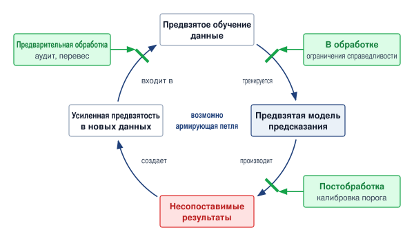
Статический пост-хок аудит справедливости может пропустить замкнутое усиление (Рисунок 13). Когда система дообучается на исходах, отобранных её собственными решениями, полученная выборка может закрепить начальные перекосы, не показывая, что произошло бы при иной политике. Политика обратной связи и доступные свидетельства определяют, растут ли неравенства или сокращаются; эффективное вмешательство не обязано менять каждую стадию. Справедливость, таким образом, становится ограничением жизненного цикла, в котором видимость данных определяет, что можно измерить, пороговая политика — куда попадают ошибки, а инфраструктура обратной связи — затухают ли неравенства или накапливаются.
Предиктивное полицейское дело иллюстрирует, как такая обратная связь может возникнуть. Модель, обученная на зарегистрированных арестах, может направлять больше патрулей в район. Если усиленное патрулирование порождает больше зарегистрированных инцидентов, а конвейер обучения трактует эти записи как несмещённую меру реальной преступности, последующие предсказания могут подкреплять исходное распределение, делая прогноз отчасти самосбывающимся. Контур зависит от того, как развёртывание меняет наблюдение и как дообучение использует эти свидетельства; это не неизбежное следствие любой предсказательной модели.
Рекомендательные системы, такие как архетип B (DLRM at Scale), показывают схожую динамику в цифровой среде. Модель рекомендаций контента, приоритизирующая вовлечённость, может постепенно сужать круг контента, который видит пользователь, приводя к контурам обратной связи, подкрепляющим существующие предпочтения или поляризующим мнения. Эти эффекты трудно обнаружить обычными метриками производительности, поскольку система продолжает оптимизировать свою цель обучения, даже отклоняясь от более широких социальных или эпистемических целей.
Контуры обратной связи подрывают предположение о независимо и одинаково распределённых данных, поэтому валидация на статическом тестовом наборе может пропустить эволюционирующее влияние модели на процесс порождения данных. Когда контур уже установлен, вмешательства, направленные на справедливость или точность, могут иметь ограниченный эффект, если не устранена лежащая в основе динамика данных. Ответственное проектирование поэтому отслеживает, как выходы системы перестраивают среду, как эти изменения попадают в новые данные и смягчает ли дообучение их или усугубляет.
В облачных системах такие обновления могут происходить часто и в масштабе, при этом обширная телеметрия доступна для обнаружения дрейфа поведения. Напротив, развёртывания на edge и встраиваемых устройствах часто работают офлайн или с ограниченной наблюдаемостью. Умный домашний помощник, адаптирующий поведение термостата на основе взаимодействий с пользователем, может закреплять паттерны энергопотребления или предпочтения комфорта так, что меняет домашнюю среду и затем влияет на будущие входы модели. Без связи или централизованного надзора такие контуры могут остаться незамеченными, несмотря на их влияние на поведение пользователей и производительность системы. Контуры обратной связи не вредны сами по себе, но их нужно обнаруживать и управлять ими; обнаружение дрейфа и оповещение из Глава 16.9.3 выявляют их только тогда, когда развёртывание может вернуть свидетельства.
Сотрудничество человека и ИИ
Человеческие операторы превращают риск контуров обратной связи в задачу разделяемого контроля. Системы машинного обучения часто разворачиваются не как автономные агенты, а как компоненты более крупных рабочих процессов, включающих людей, принимающих решения. Во многих областях — таких как здравоохранение, финансы и транспорт — модели служат инструментами поддержки решений, предлагая предсказания, оценки риска или рекомендации, которые просматриваются и исполняются людьми-операторами. Такая конфигурация сотрудничества поднимает вопросы о том, как распределяется ответственность между людьми и машинами, как калибруется доверие и как механизмы надзора реализуются на практике.
Сотрудничество человека и ИИ вносит и возможности, и риски. При правильном проектировании системы могут усиливать человеческое суждение, снижать когнитивную нагрузку и повышать согласованность решений. Однако при плохом проектировании они могут привести к автоматизационному смещению,22 когда пользователи чрезмерно полагаются на выходы модели даже при наличии явных ошибок. И наоборот, чрезмерное недоверие может привести к алгоритмической аверсии, когда пользователи игнорируют полезные предсказания модели из-за недостатка прозрачности или воспринимаемой надёжности. Усталость от оповещений — сбой в сценарии с сепсисом — ведёт к тому же игнорированию по другой причине: операторы, получающие больше предупреждений, чем способны проверить, перестают действовать по ним. Эффективность совместных систем зависит от того, как система коммуницирует неопределённость, предоставляет объяснения и позволяет человеку переопределить или исправить решение, а не только от точности модели.
Публичное знание об ИИ неравномерно (Center 2023 г.), а неудачи научной коммуникации могут усиливать непонимание того, как работают ИИ-системы (Schäfer 2023 г.). Это важно для безопасности развёртывания: когда пользователи не понимают неопределённость модели, смещение данных или границы принятия решений, они могут доверять выходам системы в контекстах, где должно вмешаться человеческое суждение. С точки зрения системной инженерии публичное понимание — часть контекста развёртывания, потому что свойства безопасности системы «человек–ИИ» зависят от того, могут ли пользователи надлежащим образом откалибровать своё доверие и распознать ситуации, требующие человеческого переопределения, а не только от технических механизмов.
Автоматизация меняет организацию труда так, что это влияет на решения по проектированию безопасности. Рабочая группа MIT Work of the Future (Work of the Future 2020 г.) утверждает, что технологические изменения и институты рынка труда совместно определяют, улучшит ли автоматизация качество рабочих мест или сконцентрирует вред. Для ML-систем следствие для безопасности таково: удаление человеческих ролей может также удалить контекстное суждение и отладку на уровне системы, которые всё ещё трудно закодировать в моделях. Метрики, сфокусированные только на пропускной способности, могут невольно наказывать конструкции с человеком в контуре, сохраняющие возможность надзора.
Институциональные стимулы могут подкреплять автоматизационное смещение, когда операторы ожидают большего контроля при переопределении модели, чем при согласии с ней. Рассмотрим иллюстративную пару судебных решений. В сценарии A судья переопределяет алгоритмическую оценку «высокого риска» и освобождает обвиняемого, который позже снова совершает преступление. Судья предвидит критику за отступление от рекомендации. В сценарии B судья следует оценке и необоснованно задерживает обвиняемого, но институция трактует согласие с моделью как свидетельство надлежащей процедуры. Стимул исходит из этой политики рассмотрения, а не из измеренной точности модели.
Такая асимметрия может поощрять институциональное соглашательство, при котором человеческий контроль превращается в «резиновую печать» для алгоритмических решений. Процедуры проверки должны оценивать доказательства как в случае согласия, так и в случае несогласия, а не считать согласие заведомо правильным. Требуемая документация должна соответствовать значимости решения и нагрузке на оператора, чтобы обоснование служило целям контроля, а не превращалось в ещё одну рутинную форму одобрения.
Механизмы контроля должны быть адаптированы к контексту развёртывания. В областях с высокой ценой ошибки, таких как медицинская сортировка или автономное вождение, от человека может ожидаться надзор за автоматизированными решениями в режиме реального времени. Такая конфигурация создаёт когнитивную и временную нагрузку на оператора и предполагает, что вмешательство произойдёт быстро и надёжно, когда потребуется. На практике, однако, непрерывный человеческий надзор часто оказывается непрактичным или неэффективным, особенно когда оператор должен следить за несколькими системами или не имеет чётких критериев для вмешательства.
С точки зрения проектирования систем поддержка эффективного надзора требует большего, чем просто доступ к необработанным выходным данным модели. Интерфейсы должны быть построены так, чтобы предоставлять релевантную информацию в нужный момент, в нужном формате и с соответствующим контекстом. Оценки уверенности, оценки неопределённости, объяснения и оповещения об изменениях — всё это может способствовать человеческому надзору. Рабочие процессы должны определять, когда и как возможно вмешательство, кто уполномочен переопределять выходные данные модели и как такие переопределения фиксируются в журналах, проходят аудит и учитываются в будущих обновлениях системы.
Рассмотрим систему больничной сортировки, которая использует модель машинного обучения для распределения приоритетов пациентов в отделении неотложной помощи. Модель генерирует оценку риска для каждого поступающего пациента, которая представляется вместе с предлагаемой категорией сортировки. В принципе, медсестра отвечает за подтверждение или переопределение предложения. Однако если выходные данные модели представляются без достаточного обоснования — например, без объяснения значимых признаков или контекста неопределённости — медсестра может полагаться на модель даже в пограничных случаях. Со временем выходные данные модели могут стать фактическим решением при сортировке, особенно под давлением времени. Если происходит сдвиг распределения (например, из-за новой болезни или изменения демографии пациентов), у медсестры может не оказаться ни ситуационной осведомлённости, ни поддержки со стороны интерфейса, необходимых для того, чтобы заметить снижение качества работы модели. В таких случаях видимость человеческого надзора маскирует систему, в которой ответственность фактически перешла к модели без ясной подотчётности или права на обжалование.
В таких системах человеческий надзор зависит от проектирования инфраструктуры не меньше, чем от политики, включая то, как предъявляются предсказания, какая информация сохраняется, как реализуется вмешательство и как петли обратной связи связывают человеческие решения с обновлениями системы. Без интеграции этих компонентов надзор становится фрагментированным, а ответственность может незаметно перейти от человека к машине.
Инженерный расчёт 16.7: Парадокс чрезмерного доверия автоматизации
Рассмотрим отделение радиологии, внедряющее ИИ-ассистента для обнаружения опухолей, где чувствительность человека без поддержки составляет
Это условная вероятность принятия ошибки, и она важнее общей частоты переопределений. Низкая частота переопределений может отражать как малое число ошибок модели, так и неспособность их обнаружить; эти интерпретации требуют разных вмешательств. Разрыв калибровки доверия возникает, когда полагание на систему превышает то, что поддерживают доказательства. Прежде чем внедрять изменения интерфейса, оцените их по доле фактически исправленных ошибок, ошибкам, внесённым переопределениями, и задержке реакции.
Граница между поддержкой принятия решений и автоматизацией часто размыта. Системы, изначально созданные для помощи людям, принимающим решения, могут постепенно приобретать большую автономию по мере роста доверия или смещения организационных стимулов. Этот переход может происходить без явных изменений политики, приводя к фактической автоматизации без соответствующих структур подотчётности. Поэтому ответственное проектирование систем должно предвидеть изменения в использовании с течением времени и обеспечивать сохранение надлежащих проверок даже по мере роста полагания на автоматизацию.
Нормативный плюрализм и конфликты ценностей
Сотрудничество человека и ИИ выявляет более глубокое системное ограничение, поскольку разные заинтересованные стороны часто придерживаются конфликтующих ценностей и приоритетов, которые не сводятся к оптимизации единственной цели. Алгоритмы могут помочь найти допустимые компромиссы, но они не могут установить, чьи приоритеты должны определять конкретное развёртывание. Техническое совершенство необходимо, но недостаточно для заслуживающего доверия ИИ, потому что выбор между концепциями справедливости, приватности и подотчётности требует легитимного процесса принятия решений, а также данных об их последствиях, что демонстрирует конвейер обнаружения кризисов в примере 16.2.
Пример 16.2: Противоречивые ценности на практике
Сценарий: Конвейер обнаружения психических кризисов у подростков должен балансировать конкурирующие цели заинтересованных сторон по путям инференса в реальном времени и хранения данных.
Диагноз: Оптимизация клинической эффективности посредством агрессивной отправки оповещений конфликтует с автономией пациента и протоколами приватности. Ограничение хранения данных для защиты приватности пользователей ограничивает офлайн-дообучение и аудит объяснений, а маршрутизация оповещений с высокой уверенностью к человеческим консультантам увеличивает стоимость обслуживания на запрос и сквозную задержку
Системный урок: Компромиссы ответственного ИИ — жёсткие архитектурные требования, а не заметки о политике, добавляемые постфактум. Конвейер развёртывания должен закодировать выбор заинтересованных сторон в явные бюджеты задержки (
То, что для одной заинтересованной стороны представляется справедливым исходом, другая может воспринимать как несправедливое. Аналогично решения, отдающие приоритет точности или эффективности, могут конфликтовать с такими целями, как прозрачность, индивидуальная автономия или снижение вреда. Эти напряжения структурны, а не случайны — они отражают плюралистические общества и институциональные условия, в которых работают системы машинного обучения. Справедливость — особенно заметное место конфликта ценностей, поскольку её критерии могут быть несовместимы (Глава 16.5.1.5), а выбор между ними является нормативным решением, а не чисто техническим; однако схожие конфликты возникают между интерпретируемостью и предсказательной производительностью, приватностью и персонализацией, краткосрочной полезностью и долгосрочными последствиями.
Каждый уровень развёртывания придаёт этим конфликтам разную форму, дополняя сравнение уровней из Глава 16.4.1 вопросом о том, кто решает. Голосовой ассистент, персонализируемый на мобильном устройстве, сохраняет необработанные данные локально, что снижает риск раскрытия при передаче, но само по себе не устанавливает гарантии приватности. Пользователи с недопредставленными паттернами использования всё ещё могут получать менее точные предсказания, а обнаружение этого расхождения требует решений о согласии, агрегации и доступе, поэтому приватность, справедливость и персонализацию приходится взвешивать друг против друга. Облачная платформа кредитного скоринга или рекомендаций сталкивается с требованиями объяснений значимых решений, опираясь при этом на сложные ансамбли или проприетарные обучающие данные, раскрытие которых может быть коммерчески чувствительным или технически неосуществимым, — что ставит институциональную подотчётность против коммерческой тайны. Edge-камера или дрон, сжимающий модель ради бюджетов задержки и энергии, разменивает эффективность на устойчивость. Эффект должен измеряться на развёрнутых кандидатах при ожидаемых сдвигах и модели угроз, а не предполагаться, и более устойчивый кандидат может превысить бюджет памяти или энергии. Устройство TinyML без постоянной связи не может учесть новые требования справедливости через локальное дообучение. То, способно ли периодическое обслуживание или синхронизация доставить пересмотренную модель и могут ли объяснения и обжалования выполняться вне устройства на сохранённых доказательствах, также становится частью решения о ценностях. На каждом уровне конфликт выходит за пределы того, что оптимизирует модель, к тому, что система может поддерживать после развёртывания.
Повторяющееся системное ограничение — нормативный плюрализм, а не абстрактный философский вызов. Технические подходы, такие как многокритериальная оптимизация, обучение с ограничениями и оценка с учётом справедливости, могут помочь выявить и формализовать компромиссы, но они не устраняют потребности в суждении. Решения о том, чьи ценности представлять, какие вреды смягчать и как балансировать конкурирующие цели, не могут приниматься алгоритмически. Они требуют обсуждения, участия заинтересованных сторон и структур управления, выходящих за пределы самой модели. Системы машинного обучения не являются нейтральными инструментами: они встраивают ценностные суждения — заданы ли они явно или подразумеваются.
Партиципаторные методы и процесс проектирования, чувствительного к ценностям (Value-Sensitive Design), представленный в связи с согласованием ценностей (Глава 16.8.3), предлагают пути вперёд. Вместо того чтобы считать ценности параметрами для оптимизации после развёртывания, эти подходы стремятся вовлечь заинтересованные стороны на этапе требований, явно определить этические компромиссы и проследить, как они воплощаются в архитектуре системы. Некоторые требования можно удовлетворить одновременно; другие требуют документированного выбора или решения не развёртывать. Делая эти суждения явными, мы даём затронутым заинтересованным сторонам нечто конкретное, что можно поставить под вопрос и пересмотреть.
Проектирование, чувствительное к ценностям, также затрагивает автономию людей, которых обслуживает система. Применительно к человеческому контролю оно явно рассматривает такие факторы, как возможности, сложность, искажение и текучесть пользовательского контроля. Модель METUX (Motivation, Engagement, and Thriving in the User Experience) расширяет эту мысль до шести сфер технологического опыта: внедрение, интерфейс, задачи, поведение, жизнь и общество, — каждая из которых может поддерживать или подрывать человеческое процветание (Peters и др. 2018 г.). Оба подхода опираются на теорию самодетерминации, описывающую автономию как способность действовать в согласии с собственными ценностями и целями, а не как контроль в техническом смысле (Ryan и Deci 2000 г.). В МЛ-системе эти требования становятся конкретными артефактами: возможностями интерфейса, пользовательскими средствами управления, каналами обратной связи, путями эскалации и доказательствами для аудита. Например, рекомендательная система, оптимизирующая вовлечённость, может формировать предпочтения пользователя так, что он этого не видит. Оценка её по внешним сферам — поведению, жизни и обществу — выявляет эффекты, которые краткосрочная метрика вовлечённости никогда не измеряет, поэтому сохранение автономии требует средств контроля и доказательств помимо этой метрики.
Петли обратной связи, сотрудничество человека и ИИ и конфликты ценностей показывают, почему технические основы из Глава 16.5 — Глава 16.8 сами по себе не могут обеспечить ответственный ИИ. Без организационных полномочий, операционной телеметрии и путей эскалации метрика справедливости без владельца, объяснение без процесса обжалования или сигнал мониторинга без бюджета на устранение становятся доказательствами без действий.
Контрольная точка 16.3: Когда корректный код даёт сбой после развёртывания
Математически корректные, справедливые и объяснимые модели всё же могут давать сбой в человеческих институтах — из-за петель обратной связи, меняющих данные, смещения автоматизации и институционального соглашательства, а также нормативного плюрализма заинтересованных сторон.
Диагностика взаимодействия человека и системы
Рассуждение о петлях и заинтересованных сторонах
16.10 Управление ответственным ИИ в масштабе парка
Команда специалистов по данным хочет отложить развёртывание на месяц, чтобы провести строгие аудиты справедливости новой генеративной модели. Руководство, наблюдая за запуском аналогичной функции конкурентом, требует развернуть модель к пятнице. Даже когда инженеры знают, как оценить соответствующие риски, организационная структура, бюджет и бизнес-приоритеты должны дать им время и полномочия действовать на основе этих знаний.
Этот сценарий обнажает разрыв реализации между технической возможностью и операционными полномочиями. Методы ответственного ИИ предоставляют необходимые инструменты, но их эффективность зависит от организационных структур, инфраструктуры данных, процессов оценки и устойчивой приверженности, выходящих далеко за рамки разработки алгоритмов. Системы сохраняют ответственное поведение во времени только тогда, когда эти поддерживающие механизмы выдерживают давление сроков, продуктовые стимулы и дрейф после развёртывания.
Практические барьеры для встраивания ответственного ИИ в производственные МЛ-системы охватывают классическую рамку «люди-процессы-технологии». Задачи людей — предмет Глава 16.10.1 — охватывают организационные структуры, полномочия, определение ролей и стимулы, определяющие, превращаются ли этические обязательства в устойчивое операционное поведение. Технологические задачи начинаются с самих данных (Глава 16.10.2), где пробелы в качестве и затраты на получение данных определяют, что команда может исправить. Задачи процессов охватывают то, как разрешаются конкурирующие цели (Глава 16.10.3) и как ограничения ответственности переживают масштабирование, обслуживание и непрерывную поставку (Глава 16.10.4). Рамка принятия решений (Глава 16.10.5) затем превращает три измерения в приоритеты для конкретного развёртывания.
Эти измерения важны, потому что ответственный ИИ терпит неудачу, когда организационные стимулы, рабочие процессы разработки и производственная инфраструктура тянут в разные стороны. Рамка связывает каждое техническое утверждение с процессом и владельцем, необходимыми для его реализации. Например, формальная гарантия приватности не реализует удаление; для этого нужны прослеживаемость происхождения (lineage) и рабочий процесс удаления соответствующих данных и состояния модели. Эффективная реализация, следовательно, требует системных стратегий, встраивающих ответственность в архитектуру, инфраструктуру и операционные практики развёртывания машинного обучения по всем трём измерениям одновременно.
16.10.1 Организационные структуры и стимулы
Если команда моделирования оценивается по квартальному приросту вовлечённости, конвейеры данных принадлежат отдельной платформенной организации, жалобы пользователей попадают в клиентскую поддержку, а проверки на соответствие требованиям проходят в юридическом отделе, — ни у одного владельца нет одновременно бюджета и полномочий на остановку выпуска, чтобы устранить разрыв в ошибке подгруппы или сломанный механизм объяснимости. Разрыв может оставаться неисправленным месяцами, потому что организационная структура фрагментирует ответственность между командами, чьи стимулы никогда не согласуются в вопросах исправления. Прозрачность и право на оспаривание терпят неудачу, когда ответственность распределена без соответствующих полномочий; внутри компаний, исследовательских лабораторий и государственных учреждений управление (governance) должно превращать этические обязательства в конкретные роли, пути эскалации, ресурс для проверок и полномочия ограничивать развёртывание или предоставлять компенсацию.
Ответственный ИИ требует устойчивых инвестиций в такие практики, как оценка качества по подгруппам, анализ объяснимости, тестирование устойчивости к состязательным атакам и интеграция методов защиты приватности, например дифференциальной приватности или федеративного обучения. Эти действия могут быть трудоёмкими и ресурсозатратными, но при этом часто остаются за рамками формальных метрик производительности, по которым оценивается продуктивность команд. Например, команды могут быть мотивированы быстро выпускать функциональность или выполнять бенчмарки качества, даже если это подрывает справедливость или игнорирует потенциальные вреды. Когда этическая добросовестность рассматривается как необязательная задача, а не как интегрированный компонент жизненного цикла системы, она становится уязвимой к деприоритизации под давлением сроков или организационных перестановок.
Давление стимулов усугубляется, когда никакой кросс-функциональный протокол не связывает обнаружение проблемы с исследованием первопричины через границы этих команд. Даже когда разработчики, пользователи или внешние аудиторы документируют неравное воздействие предсказаний или деградацию качества объяснений, вывод может застрять между владельцами модели, данных, пользовательского опыта и комплаенса, если ни один рабочий процесс не определяет, кто обязан профинансировать и выполнить исправление. В результате опасения остаются без внимания не из-за злонамеренного умысла, а потому, что в организации отсутствует единый путь эскалации с полномочиями координировать смягчение.
Создание эффективных организационных структур для ответственного ИИ требует большего, чем декларации политики. Нужны операционные механизмы: закреплённые роли с ответственностью за этический надзор, документированные пути эскалации, подотчётность за постразвёртывательский мониторинг и стимулы, вознаграждающие команды за этическую предусмотрительность и сопровождаемость системы. Некоторые организации также встраивают экспертов предметной области или защитников интересов пользователей в продуктовые команды, чтобы предвидеть downstream-воздействия и оценивать компромиссы ценностей в контексте.
Техническая инфраструктура, такая как реестры моделей с версионированием, карточки моделей и журналы аудита, должна быть увязана с организационными структурами — советами по этической экспертизе, комитетами по модельным рискам и процедурами ред-тиминга23. Их эффективность зависит от того, доходят ли находки до уполномоченного владельца, получают ли своевременный ответ и приводят ли к проверенному исправлению, когда оно требуется. Само по себе существование комитета или журнала аудита не доказывает, что опасения были учтены.
Операционная строгость имеет измеримую цену. Публичные стандарты ответственного ИИ и внутренние процессы ревью показывают, что управление может увеличивать задержку релиза за счёт оценки воздействия, ревью моделей, упражнений ред-тиминга и «документационных шлюзов». Поэтому мощность ревью становится частью планирования развёртывания. Если каждый высокорисковый запуск требует специализированного ревью, очередь ревью становится узким местом — как и проверка безопасности или согласование мощностей. Эту цену нужно закладывать в бюджет наряду с исправлениями и остаточным риском; превентивное ревью может снизить экспозицию, но не гарантирует, что каждый инцидент будет предотвращён или что исправление всегда окажется дороже.
Зависимости от третьих сторон и фундаментальных моделей не переносят подотчётность на поставщика. Развёртывающая организация может унаследовать веса, оценки безопасности, документацию по данным или контрактные средства контроля, но она по-прежнему сама выбирает сценарий использования, интерфейс, извлекаемый контекст, популяцию пользователей, мониторинг и процесс реагирования. Поэтому закупка требует той же строгости, что и внутренний шлюз модели: документированные разрешённые и запрещённые сценарии использования, объём оценивания, уведомления о версиях и изменениях, раскрытие инцидентов, доступ для аудита, обработка данных, сервисные зависимости, поведение при откате и план выхода. Когда доказательства поставщика недоступны, аргументация assurance-кейса должна фиксировать этот пробел как остаточный риск, а не молча трактовать заверение вендора как проверенное средство контроля.
Организация должна обеспечивать эти функции на протяжении всего фактического жизненного цикла развёртывания. Облачная команда может эксплуатировать сервисы непрерывного ревью и мониторинга; оператор встраиваемых устройств может полагаться на сертификацию, инвентаризацию прошивок, обслуживание и отзыв продукции. Эксперты предметной области, затронутые стороны и регуляторы в обоих случаях остаются частью структуры доказательств и полномочий. Действующая схема должна по-прежнему поддерживать исправление отдельного решения.
Подотчётность становится видимой в точке возмещения. Затронутым людям нужен обнаружимый канал для оспаривания результата, запись рассмотренных доказательств, рецензент с полномочиями исправить решение, срок ответа и способ распространить исправление на downstream-системы. Совокупное улучшение модели не заменяет индивидуального возмещения, поскольку переобучение в следующем квартале не исправляет отказ в выплате, случившийся сегодня. Поэтому процедуры реагирования на инциденты должны связывать техническую локализацию и откат с уведомлением, исправлением, компенсацией, где применимо, анализом первопричины и проверкой того, что возмещение дошло до каждой зависимой записи решения. Вывод модели из эксплуатации не прекращает эти обязанности: остановка модели закрывает путь её исполнения, но владелец апелляций сохраняет ответственность за неразрешённые решения после остановки инференса (Глава 16.2). Экзаменационный алгоритм Англии 2020 года показал, как быстро агрегированный метод может обогнать механизм возмещения, которого требуют его решения.
Практический случай 16.2: Ошибка алгоритмического оценивания (2020)
Контекст: В августе 2020 года, после отмены экзаменов во время COVID-19, английский регулятор квалификаций (Ofqual) развернул алгоритм статистической стандартизации для выставления оценок примерно 280 000 студентам A-level (Ofqual 2020 г.; Department for Education и Ofqual 2020 г.).
Механизм: Для сдерживания инфляции оценок метод стандартизации комбинировал исторические результаты с предшествующей успеваемостью когорты, чтобы оценить распределения оценок, а затем распределял оценки, используя ранжирование студентов учителями. Для малых предметных когорт больший вес получали оценки учителей. Таким образом, метод использовал индивидуальные ранжирующие доказательства, но ограничивал их интерпретацию предсказаниями на уровне когорты, которые могли расходиться с оценками учителей об индивидуальных достижениях.
Воздействие: Вычисленная оценка оказалась ниже оценки, выставленной учителем, в 39,1 процента случаев (Ofqual 2020 г.). Общественное возмущение и студенческие протесты привели к отмене политики выставления оценок через несколько дней.
Исправление: Студентам была присвоена наибольшая из двух оценок — выставленной центром и вычисленной, — что заменило прежнюю политику стандартизации.
Системный урок: Агрегированное предсказание не доказывает, что каждый индивидуальный результат обоснован. Канал апелляций должен определять, какие доказательства могут изменить решение, кто может их рассмотреть и как быстро может вступить в силу исправление; одного лишь существования процедурной апелляции недостаточно для ответа на эти вопросы.
Ответственность за этичное поведение системы распределена между множеством участников, включая индустрию, академические круги, гражданское общество и государство. Образующаяся иерархия управления окружает ИИ-систему четырьмя концентрическими уровнями (Рисунок 14). Команда разработки исполняет технические средства контроля (тестирование справедливости, карточки моделей, ред-тиминг). Организация управляет операционными процессами (оценки воздействия, этические советы). Индустрия устанавливает консенсусные базовые уровни (стандарты ISO, внешние аудиты). Государство и общество обеспечивают соблюдение правовых границ (GDPR, EU AI Act, отраслевые законы) (Shneiderman 2022 г., 2020 г.). Внутри организаций это распределение должно быть отражено механизмами, связывающими техническое проектирование со стратегическим надзором и операционным контролем. Без этих связей ответственность становится размытой, а благие намерения могут быть подорваны системным рассогласованием.
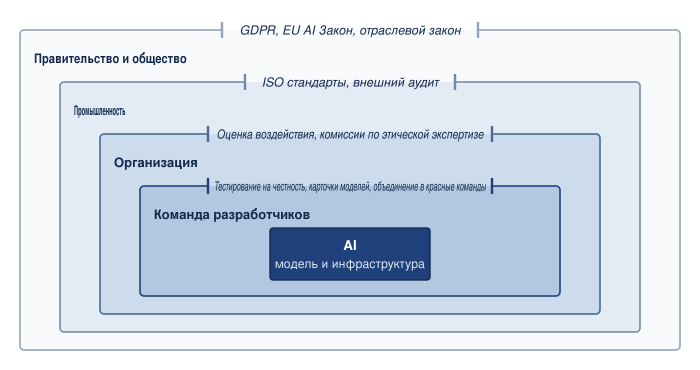
Следовательно, техническое совершенство и соответствие нормативным требованиям сами по себе недостаточны. Ответственный ИИ требует согласования этических целей с институциональными структурами, через которые системы машинного обучения проектируются, развёртываются и сопровождаются, чтобы ответственность была встроена как в организацию, управляющую развёртыванием, так и в саму модель. Та же проблема владения становится конкретной на уровне данных, где команды могут знать, как провести аудит датасета, и при этом не иметь полномочий, доступа или инфраструктуры, необходимых для его изменения.
16.10.2 Ограничения данных и пробелы в качестве
Клиническая модель визуализации, обученная на нескольких городских университетских больницах, может демонстрировать высокую общую точность, но давать сбои на сельских и пожилых пациентах, чьи сканеры, протоколы и демография отсутствовали в обучающем корпусе, — при этом получение и гармонизация замещающих изображений в десятках больниц-партнёров требует лет юридических, институциональных и схемных переговоров. Улучшение конвейеров данных остаётся одной из самых сложных практических задач реализации, даже когда разработчики и исследователи понимают необходимость репрезентативного покрытия, точных разметок и смягчения исторических смещений. Ответственность за данные часто разделена между командами, заперта в унаследованных системах или управляется внешними институтами, которые команда моделирования не может изменить в одностороннем порядке.
Принципы инженерии данных, включая валидацию данных, управление схемами, версионирование, отслеживание происхождения (lineage) и мониторинг качества, дают технический фундамент для решения этих задач. Однако применение этих принципов к ответственному ИИ вносит дополнительную сложность. Справедливость требует оценивать репрезентативность по демографическим группам, смягчение смещения — понимать исторические практики сбора данных, а сохранение приватности ограничивает допустимые техники валидации. Описанные здесь организационные трудности отражают разрыв между наличием надёжной инфраструктуры инженерии данных и умением эффективно использовать её для целей ответственного ИИ.
Дисбаланс подгрупп, неоднозначность разметки и сдвиг распределения — каждый из этих факторов влияет на обобщение и качество в разных доменах — давно признанные проблемы ответственного машинного обучения. Эти проблемы часто проявляются в виде плохой калибровки, сбоев на данных вне распределения или демографических расхождений в метриках оценки. Однако их решение в реальных условиях требует большего, чем технических знаний. Оно требует доступа к релевантным данным, институциональной поддержки исправлений, а также достаточного времени и ресурсов для итераций над самим датасетом. У команд может не быть полномочий или инфраструктуры для изменения обучающего датасета даже после обнаружения расхождений в качестве. Версионирование и отслеживание происхождения делают контролируемое исправление возможным, идентифицируя затронутые датасеты и downstream-модели; они не устраняют необходимость в приобретении замещающих данных, переобучении и повторной валидации этих моделей.
В таких доменах, как здравоохранение, образование и социальные услуги, эти барьеры особенно выражены, потому что получение данных регулируется правовыми ограничениями, правилами приватности и межорганизационными контрактами. Закрытие разрыва в покрытии сельских больниц из вступительного клинического сценария требует переговоров о соглашениях об обмене данными с внешними партнёрами, согласования стандартов признаков и разрешения несогласованных практик разметки между учреждениями, а логистические и финансовые издержки могут оказаться запретительными даже при согласии всех сторон в необходимости улучшений (notebook 16.8).
Усилия по сбору более репрезентативных данных могут также натолкнуться на этические и политические опасения. В некоторых случаях дополнительный сбор данных может подвергнуть маргинализированные популяции новым рискам. Этот парадокс экспозиции — когда люди, больше всех пострадавшие от исключения, одновременно наиболее уязвимы к злоупотреблению — осложняет попытки улучшить справедливость за счёт расширения датасета. Например, сбор большего количества данных о небинарных людях для поддержки справедливости в чувствительных к гендеру приложениях может улучшить покрытие модели, но также поднимает серьёзные вопросы согласия, идентифицируемости и downstream-использования. Командам приходится тщательно балансировать между этими противоречиями, часто без чёткого институционального руководства.
Инженерный расчёт 16.8: Стоимость репрезентативности
Задача: Модель медицинской визуализации, обученная на данных из 5 hospitals, достигает 94 percent точности в целом, но лишь 78 percent на недопредставленных группах населения (сельские пациенты, пожилые пациенты, пациенты с более тёмными оттенками кожи). Предлагаемый план сбора данных предполагает получение данных из 50+ больниц в разных географических регионах, демографических группах и с различным оборудованием. Этот бюджет — иллюстративное предложение, а не требование к объёму выборки, выведенное из разрыва в точности; валидация должна установить, улучшает ли он соответствующие результаты.
Расчёт:
- Стоимость сбора данных: $50–$200 за размеченное медицинское изображение, при этом 100,000 images закладывается на каждую недопредставленную подгруппу.
- Сценарий стоимости репрезентативности: Для 10 subgroups, в средней точке ценового диапазона, 10 умножить на 100,000 images на подгруппу умножить на $125 за изображение даёт $125M только на сбор данных. Этот расчёт предполагает отдельные закупленные примеры для каждого распределения; пересекающиеся демографические группы требуют дедупликации или явного распределения общих затрат.
- Гармонизация данных: Гармонизация данных между разными сканерами, протоколами и соглашениями по разметке добавляет 30 percent–50 percent накладных расходов, доводя итог до $162.5M–$187.5M.
Системный вывод: Бюджет на сбор данных делает цели по охвату явными, но расходы не гарантируют закрытия разрыва в точности. Командам следует приоритизировать выявленные дефициты охвата по критериям вреда, качества данных, приватности и ожидаемой пользы, а затем валидировать полученную модель на целевых группах населения.
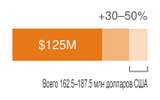
Гармонизация сканеров, протоколов и разметки добавляет 30–50 процентов к стоимости сбора.
Смещения в вышележащих системах сбора данных могут сохраняться незамеченными даже при изобилии данных. Многие организации полагаются на сторонних поставщиков данных, внешние API или операционные базы данных, которые проектировались без учёта справедливости и интерпретируемости. Например, электронные медицинские карты (Electronic Health Records), широко используемые в клиническом машинном обучении, часто отражают системные различия в оказании помощи, а также привычки документирования, закрепляющие расовые или социально-экономические смещения (Himmelstein и др. 2022 г.). Команды, работающие ниже по конвейеру, могут иметь мало представления о том, как создавались эти записи, и почти не иметь рычагов для устранения заложенных в них вредов.
Повышение качества наборов данных часто не является ответственностью какой-либо одной команды. Конвейеры данных могут поддерживаться инфраструктурными или аналитическими группами, действующими независимо от команд ML-инженерии или оценки моделей. Такая организационная раздробленность затрудняет координацию аудитов данных, отслеживание происхождения и внедрение обратных связей, связывающих поведение модели с лежащими в основе проблемами данных. На практике ответственность за качество наборов данных фактически проваливается в щели между командами: её признают важной, но редко приоритизируют или выделяют на неё ресурсы.
Решение этих проблем требует долгосрочных вложений в инфраструктуру, рабочие процессы и межфункциональную коммуникацию. Валидация данных и автоматизированные аудиты позволяют выявлять дефекты, тогда как datasheets и Data Nutrition Project24 документируют свойства наборов данных. Model cards связывают оценку модели и предполагаемое использование с этими свидетельствами. Эти инструменты помогают лишь тогда, когда у команд есть мандат и поддержка, чтобы действовать по их результатам.
Поэтому повышение качества данных — это вопрос того, как ответственность за данные назначается, распределяется и поддерживается на протяжении жизненного цикла системы, а не просто вопрос лучших инструментов. Когда такая ответственность налажена, командам всё равно предстоит решать, какая цель ответственного ИИ должна доминировать при конфликте законных целей.
16.10.3 Балансировка конкурирующих целей
Когда команда моделирования настраивает модель на совокупную точность, команда комплаенса добавляет шум дифференциальной приватности, снижающий полноту (recall) для групп меньшинств, а команда обслуживания прореживает сеть ради цели в 15 ms задержки, их несогласованные локальные оптимизации могут разрушить гарантии справедливости и объяснимости развёртывания. При этом каждая команда выполнила свою метрику. Проектирование систем машинного обучения часто подаётся как оптимизация единственной функции потерь или цели точности, однако производственные системы должны балансировать точность со справедливостью, интерпретируемостью, робастностью, приватностью и эффективностью использования ресурсов — целями, которые регулярно тянут в противоположные стороны. Конфликты точность–интерпретируемость, персонализация–справедливость и приватность–полезность из Глава 16.4.1 повторяются и здесь, и каждый из них должен измеряться на том пути, где его механизм реально исполняется, а не приниматься на веру. Эти компромиссы не являются чисто техническими; они отражают более глубокие нормативные суждения о том, для чего и для кого проектируется система, подробно рассмотренные в Глава 16.9.4.3. Ответственная разработка ML требует делать эти суждения явными, оценивать их в контексте и подвергать их учёту интересов заинтересованных сторон и институциональному надзору.
Особую сложность при реализации придаёт то, что конкурирующие цели редко принадлежат одной команде или функции. Производительность может оптимизировать команда моделирования, справедливость — контролировать группа ответственного ИИ, а приватность — ведать юридический или комплаенс-отдел. Без сознательной координации системные компромиссы могут приниматься неявно, по частям или без видения долгосрочных последствий. Со временем результатом может стать модель, которая выглядит благополучной изолированно, но не достигает этических целей, будучи встроенной в производственную инфраструктуру.
Балансировка конкурирующих целей требует прозрачности, взвешенного обсуждения и согласованности между командами наряду с технической компетентностью. Системы должны проектироваться так, чтобы высвечивать компромиссы, а не скрывать их, оставлять место для разработки с учётом ограничений, а не только для узкой оптимизации. На практике это может потребовать переопределения того, что означает «успех», — не как производительности на единственной метрике, а как устойчивого соответствия поведения системы её роли в более широком социальном или операционном контексте.
Организационные структуры, качество данных и конкурирующие цели объясняют, почему одной технической компетентности недостаточно для ответственного поведения. Команда может понимать метрики справедливости и всё же не иметь полномочий изменить набор данных или отложить релиз. Когда команды моделирования оптимизируют производительность, комплаенс-команды занимаются приватностью, а продуктовые команды приоритизируют вовлечённость независимо друг от друга, их локальные решения могут нарушать общее требование. Ясное распределение ответственности через эти границы связывает оценку с действием, тогда как инфраструктура данных и коллегиальный обзор делают свидетельства и компромиссы инспектируемыми. Поддерживать эти связи становится всё труднее по мере масштабирования развёртываний и изменения их данных, моделей и команд.
16.10.4 Масштабируемость, сопровождение и стандарты оценки
Механизмы защиты, построенные для ревью релиза, часто деградируют или исчезают по мере превращения прототипа в непрерывное производство: проверки справедливости на статичном наборе данных так и не попадают в живой конвейер приёма данных, методы объяснения, оценённые при выборе модели, так и не доходят до интерфейса пользователя, а ограничения приватности, соблюдённые при начальном обучении, упускаются в постразверточном мониторинге или плановых обновлениях. Сокращение разрыва между тем, что работает в разовой оценке, и тем, что выживает при непрерывной поставке, — ключевая практическая задача ответственного ИИ.
Производственная среда создаёт новое давление, изменяющее приоритеты системы. Модели должны работать на разнообразных аппаратных конфигурациях, взаимодействовать с эволюционирующими API, обслуживать миллионы пользователей с низкой задержкой и сохранять доступность под операционной нагрузкой. Эти ограничения требуют непрерывной адаптации и быстрой итерации, что часто понижает приоритет действий, которые трудно автоматизировать или измерить. Практики ответственного ИИ, особенно те, что предполагают человеческое ревью, консультации с заинтересованными сторонами или постхок-оценку, могут быть нелегко встроены в быстрые DevOps25-конвейеры.
Сопровождение добавляет дополнительную сложность. Системы машинного обучения редко бывают статичными. Поступают новые данные, выполняется дообучение, признаки устаревают или добавляются, а паттерны использования меняются со временем. Без строгого контроля версий, changelog и оценки влияния трудно проследить, как эволюционирует поведение системы и сохраняются ли связанные с ответственностью свойства, такие как справедливость или робастность. Смена персонала и реорганизации команд могут подтачивать институциональную память. Команды, отвечающие за сопровождение развёрнутой модели, могут не быть теми, кто её изначально разрабатывал или аудировал, что ведёт к неумышленному рассогласованию целей системы и её развёрнутого поведения. Эти проблемы особенно остры при непрерывном или потоковом обучении. Дрейф требует расследования и ответа, соразмерного его последствиям, — это может означать ограничение использования или включение резервной схемы, пока пересмотренная модель проходит валидацию, а не немедленное обновление производственных весов.
Эти проблемы усиливаются в многомодельных системах и кросс-платформенных развёртываниях. Рекомендательный движок может состоять из десятков взаимодействующих моделей, каждая из которых оптимизирована под свою подзадачу или сегмент пользователей. Голосовой помощник, развёрнутый на мобильных и периферийных средах, может поддерживать разные версии одной модели, подогнанные под локальные аппаратные ограничения. Координация обновлений, обеспечение согласованности и поддержание ответственного поведения в таких распределённых системах требуют инфраструктуры, отслеживающей управляющие ценности и ограничения наряду с кодом и данными. Решение этих задач означает отношение к ответственному ИИ как к свойству жизненного цикла, а не разовой оценки: хуки аудита, отслеживание метаданных и протоколы мониторинга, встроенные в инфраструктуру, с документацией и структурами подотчётности, переживающими передачу команд.
Сопровождение также вскрывает пробел в том, как стандартизируются свидетельства ответственного ИИ. Модель, оценённая по демографическому паритету на одном бенчмарке, тем самым не удовлетворила выровненные шансы (equalized odds) в другом развёртывании. Критерий, популяция, метки, пороговая политика и неопределённость принадлежат самому утверждению. Изменение любого из них может обесценить свидетельства, даже если веса остались неизменными. Стандартизация должна делать эти условия явными, чтобы команды могли сравнивать результаты и определять, что требует повторной валидации.
Граница оценки должна совпадать с границей развёртывания. Оценка только модели может упустить эффекты, вносимые преобразованиями признаков, маршрутизацией запросов, кэшированием или человеческим ревью. Поэтому отдельные инструменты справедливости, объяснения и комплаенса нуждаются в совместимых идентификаторах и записях, связывающих их результаты с одними и теми же версиями модели, данных, политики и workflow. Иначе кейс гарантий может объединить по отдельности корректные результаты, описывающие разные системы.
Повторное использование этих свидетельств после запуска требует средств управления жизненным циклом. Производственные наблюдения должны быть сопоставимы с критериями приёмки, а существенные изменения должны запускать документированный объём повторной валидации. Следовательно, свидетельства должны оставаться интерпретируемыми между командами, компонентами и временем. Решение при реализации — какие обязательства приоритетны для предполагаемого использования, какие средства контроля могут их выполнить и какая инстанция вправе принять остаточный риск.
16.10.5 Практический фреймворк принятия решений
Модель диагностики в отделении интенсивной терапии, потребительская рекомендательная система на 10 000 запросов в секунду и микроконтроллерный датчик на милливатты не могут исполнять одни и те же механизмы защиты на одном и том же пути. Модели ОИТ нужны объяснения, читаемые клиницистом, и маршрутизация спорных случаев. Рекомендательной системе — непрерывный мониторинг дрейфа по срезам и разрыватели обратных связей. Микроконтроллер должен зафиксировать свои пределы безопасности и энергетический бюджет до отправки прошивки. Поэтому практикам нужен систематический способ приоритизации механизмов ответственного ИИ по контексту развёртывания и риску для заинтересованных сторон.
Практику направляют четыре эвристики принятия решений. При конфликте нескольких принципов инженерные команды должны привлечать доменных стейкхолдеров, чтобы установить, какие режимы отказа несут самые тяжёлые вреды. При жёстком вычислительном бюджете команды должны сначала выявить обязательные требования, а затем распределять ёмкость оценки и реагирования по риску. Сэмплирование адекватно, лишь если оно способно обнаружить релевантные отказы, и дорогие аудиты не обязаны исполняться на пути инференса. При каждом изменении контекста развёртывания — например, при миграции облачной модели на периферийное исполнение с прерывистым централизованным мониторингом — команды должны заново оценивать приоритеты принципов, устанавливая локальные резервные механизмы защиты и планы синхронизации свидетельств для ограниченной связности. Наконец, при расхождении ценностей стейкхолдеров инженеры должны явно документировать компромиссы и выстроить механизмы оспариваемости, позволяющие затронутым лицам обжаловать автоматизированные решения. Как показал пример подросткового выявления кризисов в области психического здоровья в Глава 16.9.4.3, подобные ценностные напряжения требуют продуманной институциональной политики, а не одной лишь математической оптимизации.
Каждый контекст развёртывания подсказывает кандидатные приоритеты и компромиссы для ревью, специфичного для развёртывания (Таблица 10). Применимые обязательства, модель угроз и подотчётные решения стейкхолдеров определяют, какие механизмы и компромиссы допустимы.
| Контекст развёртывания | Основные принципы | Приоритет реализации | Компромиссы для оценки |
|---|---|---|---|
| Решения с высокой ценой отдельного человека (медицинская диагностика, кредиты и займы, уголовное правосудие, найм) | Справедливость, объяснимость, подотчётность | Обязательные метрики справедливости по защищённым группам; объяснения негативных исходов; человеческий надзор в крайних случаях | Бюджет измеренной точности, потраченный на интерпретируемость; ограниченная задержка объяснений; более высокие вычислительные затраты |
| Системы, критичные к безопасности (беспилотные автомобили, медицинские устройства, промышленное управление) | Безопасность, робастность, подотчётность | Оценка, специфичная для модели угроз; ограниченная сертификация там, где применима; fail-safe механизмы; исчерпывающее журналирование | Существенные накладные расходы на валидацию и состязательное обучение; консервативные пороги уверенности; избыточный инференс |
| Приложения, чувствительные к приватности (медицинские записи, финансовые данные, личные коммуникации) | Приватность, безопасность, прозрачность | Минимизация данных и надлежащие механизмы согласия; оценка локальной обработки и дифференциальной приватности с заявленными |
Компромиссы приватность–полезность; более высокие вычисления на стороне клиента; ограниченные обновления модели; сниженная персонализация |
| Крупномасштабные потребительские системы (рекомендация контента, поиск, реклама) | Справедливость, прозрачность, безопасность | Мониторинг смещений по демографическим группам; механизмы объяснения; исполнение контентной политики; обнаружение обратных связей | Выборочные или асинхронные объяснения в масштабе; бюджет задержки на пути обслуживания, отведённый проверкам справедливости; вложения в инфраструктуру мониторинга |
| Развёртывания с ограниченными ресурсами (мобильные устройства, периферия, TinyML) | Приватность, эффективность, безопасность | Локальный инференс; локальность данных; валидация входа; деградация без отказа | Дорогие аудиты выносятся с устройства, при сохранении локальных проверок безопасности, аудитов парка или обслуживания, полномочий на обновление и критериев вывода из эксплуатации |
| Исследовательские и поисковые системы (внутренние инструменты, прототипы, A/B-тесты) | Прозрачность, безопасность (предотвращение вреда) | Документированные известные ограничения; ограниченные группы пользователей; мониторинг непреднамеренных вредов | Глубина оценки, соразмерная потенциальному вреду и применимым обязательствам; наблюдаемость и ограниченная итерация |
Фреймворк даёт стартовые рекомендации, но его следует читать как механизм триажа, а не как полную программу управления. Юридические обязательства зависят от предполагаемого использования, юрисдикции и роли организации, а не от того, выполняется ли инференс в облаке или на микроконтроллере (European Parliament and Council of the European Union 2024 г.; European Parliament и Council of the European Union 2016 г.). Фреймворк указывает, каким ограничениям следует уделить внимание в первую очередь, с пересмотром по мере изменения условий развёртывания.
Жизненный цикл закрепляет человеческие полномочия над развёртыванием даже при автоматизации отдельных действий. Инженеры исследуют смещение, операторы анализируют метрики справедливости, разработчики реагируют на дрейф. Но некоторые системы должны действовать быстрее, чем человек успевает проверить отдельное решение. Беспилотные автомобили реагируют за миллисекунды; торговые алгоритмы исполняют тысячи транзакций до того, как возможен человеческий контроль; системы модерации контента обрабатывают миллиарды публикаций ежедневно. Для таких систем фреймворк реализации должен сочетаться с механизмами выравнивания ценностей и отката из Глава 16.8.3, которые удерживают цели согласованными с человеческими ценностями даже когда работа идёт без непрерывного человеческого надзора.
Системный взгляд 16.2: Ответственность — это инфраструктура, а не фича
Задним числом встроить механизмы ответственного ИИ может потребовать архитектурной переработки и повторной валидации — так же, как добавление отказоустойчивости. Каждый вид структурных затрат, описанных в Таблица 5, влечёт за собой потребность в выделении ресурсов. Мониторинг дрейфа смещения требует бюджета на выборку и анализ. Дорогие или точные рабочие нагрузки объяснения могут нуждаться в выделенном асинхронном парке воркеров, тогда как модельно-специфичный TreeSHAP, сэмплирование, кэширование или селективная генерация укладываются в меньший бюджет. DP-SGD требует заложить в бюджет операции клиппинга, шума и учёта согласно выбранной реализации. Оценки воздействия требуют ресурса на ревью в процессе релиза. Это не опциональные дополнения, а несущие компоненты производственных МЛ-систем. В высокорисковых или регулируемых развёртываниях невыполнение требования о предоставлении доказательств, необходимых для обоснования соответствия, может заблокировать релиз или принудить к переработке, даже когда основное качество модели сильное.
16.11 Заблуждения и ловушки
Ответственный ИИ связан с контринтуитивными компромиссами, где этические принципы конфликтуют математически и технически. Специалисты с бэкграундом в традиционной разработке ПО часто предполагают, что этические руководства напрямую переносятся в реализацию, не осознавая теорем о невозможности и вычислительных затрат. Эти заблуждения и ловушки — ошибочные представления, скрывающие структурные затраты ответственности или принимающие локальный технический результат за системный уровень уверенности. Они приводят к развёрнутым системам, которые выглядят справедливыми в разработке, но нарушают критерии справедливости в продакшене или накладывают запретительные вычислительные накладные расходы.
Заблуждение: Смещение исчезнет с большими данными и лучшими алгоритмами.
Более репрезентативные данные и лучшие алгоритмы могут уменьшить некоторые расхождения, но не определяют, уместна ли цель предсказания. Описанный в Глава 16.5.1 алгоритм здравоохранения занижал потребности чернокожих пациентов при данном уровне риска, потому что расходы были несовершенной прокси-величиной потребности. Улучшение предсказания этой прокси-величины само по себе цель не исправит. Кроме того, результат о невозможности баланса по шкале из Глава 16.5.1.5 показывает, что при различающихся базовых частотах и несовершенном предсказании ни одна шкала не может быть одновременно калибрована внутри каждой группы и сбалансирована между группами в обоих классах исходов — предел, который никакое улучшение данных или алгоритмов не устраняет. Инженеры должны отличать устранимый дефект данных или моделирования от несовместимых требований, а затем через обсуждение со стейкхолдерами обосновать критерии, которым будет следовать развёртывание.
Ловушка: Считать объяснимость опциональной фичей, добавляемой после того, как основная функциональность заработала.
Такой подход игнорирует перемещение накладных расходов (принцип «Вытеснение накладных расходов»). Отложенная работа по объяснению не исчезает; она перемещается в путь запроса, бюджет памяти или очередь ревью, потому что создание доказательств атрибуции о поведении модели требует вычислений, хранения и интерфейсов, которые накладывают ограничения на архитектуру. Аппроксимированные объяснения SHAP не бесплатны вычислительно (Таблица 5); даже ограниченный бюджет объяснений может увеличить задержку запроса и давление на память. В этом примере расчёта рекомендательная система, обслуживающая требования по задержке 100 ms при 10,000 QPS, не может встроить работу по объяснению, не пересмотрев SLA. Иллюстративный бюджет объяснения добавляет 50 ms–200 ms на запрос, увеличивая общую задержку до 150 ms–300 ms. Это требует 1.5–3× мощности только при упрощающем предположении, что занятое время ресурсов растёт прямо пропорционально задержке при фиксированных утилизации и параллелизме. Обоснование соответствия должно определить аудиторию, утверждение, метод, тест точности и бюджет доставки, затем выбрать архитектуру — модельно-специфичный TreeSHAP, сэмплированную или кэшированную атрибуцию, селективную асинхронную генерацию или заведомо интерпретируемую модель. Дополнительные реплики могут сохранить пропускную способность при этом предположении, но не восстанавливают исходную задержку на запрос, если объяснение остаётся на последовательном пути. Ни один из этих путей атрибуции не раскрывает внутреннее рассуждение модели и не устанавливает причинность.
Заблуждение: Достижение одной метрики справедливости гарантирует общую справедливость системы.
Специалисты часто оптимизируют демографический паритет, выравнивающий частоты одобрения между группами, а затем предполагают, что за этим последует справедливое обращение. В действительности метрики справедливости могут математически конфликтовать. В сценарии кредитного скоринга из ноутбука 16.4 достижение паритета одобрений стоило 4 percentage points точности и оставляло одобрения в двух группах несущими разный риск дефолта. Результат о невозможности баланса по шкале показывает, что при неравных базовых частотах и несовершенном предсказании калибровка по группам и равные средние шкалы между группами в обоих классах исходов не могут выполняться одновременно; демографический паритет добавляет отдельное ограничение на частоту отбора. Поэтому прохождение одной метрики оставляет другие критерии для оценки. Расхождение метрик — доказательство для расследования, тогда как юридический вывод зависит от применимой нормы и фактов развёртывания.
Ловушка: Внедрять ограничения справедливости без анализа компромиссов порогов и влияния на калибровку.
Сдвиг порога может выровнять одну метрику, оставив калибровку базовой шкалы неизменной. В продакшене порог — это операционная политика, встроенная в код обслуживания, человеческое ревью, записи аудита и последующие решения, а не отдельная точка отсечения в ноутбуке. Группо-специфичные пороги могут удовлетворять равным долям истинных положительных, но также меняют семантику решений. Если порог группы A равен 0,75, а порог группы B — 0,45, как в Рисунок 5, одинаковые шкалы могут давать разные решения, и положительная прогностическая ценность одобренных заявителей может расходиться между группами, даже когда базовая шкала остаётся калиброванной. Кредитный инспектор, видящий одобрение, не может знать, означает ли оно то же значение риска возврата кредита между группами, без документирования группо-специфичной пороговой политики. Поэтому производственным системам нужны документированный выбор метрик, оценки неопределённости, обучение персонала, юридическое ревью и аудит-следы, объясняющие, почему одинаковые шкалы могут давать разные решения. Никакая универсальная цель обучения не разрешает несовместимые определения справедливости; надлежащий ответ — выбрать и обосновать критерии для контекста развёртывания, количественно оценить возникающие компромиссы и отслеживать, остаётся ли утверждённая политика валидной.
Заблуждение: Мониторинговые дашборды сами по себе создают подотчётность.
Дашборды могут выявлять дрейф справедливости, отказы объяснений или тренды злоупотреблений, но они не решают, кто должен действовать. Команды часто инструментируют метрики справедливости, безопасности или приватности, потому что политика требует видимости, а затем оставляют путь реагирования неопределённым, что создаёт ложное чувство контроля. Метрика, за которую не отвечает ни одна команда, — не мера контроля, а запись в журнале. Система накапливает доказательства, не меняя поведения, поэтому алармы устаревают, регрессии справедливости становятся принятыми базовыми линиями, а затронутые пользователи не получают пути обжаловать решение. Производственная ответственность требует привязывать каждый сигнал мониторинга к владельцу, порогу, пути эскалации и бюджету устранения — будь то релизный гейт, владелец инцидента, полномочие на откат или ресурс человеческого ревью.
Ловушка: Считать ответственный ИИ чистыми накладными расходами на соответствие.
Эта точка зрения упускает ценность выявления и реагирования на риск. Дифференциальная приватность может позволять организациям работать с чувствительными данными при более ясных гарантиях приватности, но также накладывает компромиссы приватность–полезность, которые нужно планировать в бюджете обучения. Обучение и мониторинг с учётом справедливости могут поддерживать этот процесс управления рисками. Скрининг соответствия, такой как порог отбора при трудоустройстве из Глава 16.5.2.1, проверяет один контекст-специфичный коэффициент частоты отбора, а не универсальный юридический тест, и не видит расхождение, скрытое в самой метке. Мониторинг результатов, скорректированных на потребности, по группам мог бы выявить такое расхождение, как занижение потребностей чернокожих пациентов алгоритмом здравоохранения. Снижение причинённого вреда по-прежнему требует владельца с полномочиями, ресурсами и проверенным способом устранения; одного обнаружения недостаточно, чтобы защитить затронутых людей.
Считать локальную метрику или меру контроля достаточной системной уверенностью — общая ошибка за этими примерами. Математическое ограничение справедливости является ответственным только тогда, когда система также учитывает последующие эффекты на популяцию, требования к документации, операционную мощность и юридические риски.
16.12 Итоги
Ответственный ИИ связывает технические меры контроля парка с обоснованными решениями о развёртывании и устранении последствий. Метрики справедливости выявляют расхождения, механизмы приватности и устойчивости поддерживают ограниченные утверждения, а объяснения предоставляют доказательства, которые люди должны иметь возможность проверить или оспорить. Ни один из этих механизмов сам по себе не устанавливает ответственность. Версионированное обоснование соответствия связывает предполагаемое использование, затронутую популяцию, доказательства, предположения и подотчётные полномочия, а мониторинг и повторная валидация удерживают эти утверждения привязанными к системе, которая реально работает.
Ответственный ИИ — это вопрос системной инженерии, потому что его меры контроля перестраивают производственную архитектуру. Мониторинг справедливости потребляет вычисления и может влиять на задержку. Методы объяснимости, такие как SHAP и LIME, добавляют работу инференса, которую нужно учесть в планировании мощности и соблюдении SLO. Системные промпты, версии моделей и журналы аудита требуют владения, версионирования и гейтов CI/CD. Эти затраты нужно закладывать в бюджет на этапе проектирования, а не добавлять после развёртывания.
Селективная генерация объяснений иллюстрирует выбор C³. Синхронная генерация объяснения добавляет вычисления в путь запроса и может добавить коммуникацию для извлечения признаков; перенос её в асинхронного воркера защищает задержку обслуживания, но добавляет координацию между решением, записью доказательств и процессом обжалования. Узкое место тогда смещается с мощности инференса на свежесть доказательств или пропускную способность ревьюеров. Приемлемая архитектура зависит от того, кому нужно объяснение и насколько быстро этот человек должен иметь возможность на него отреагировать. Прочитай через Закон Парка (Уравнение (3)), который суммирует вычисления, коммуникацию и время синхронизации по устройствам и вычитает перекрывающееся время: приватное или состязательное обучение может добавить вычисления через механизмо-специфичные операции или дополнительные оценки. Утверждения релизов и гейты повторной валидации действуют как барьер синхронизации в момент релиза, добавляя ожидания, которые репликация сама не устраняет. Асинхронная генерация доказательств допускает перекрытие только тогда, когда доказательства приходят раньше решения или устранения, которые от них зависят.
Основные выводы: Ответственность требует доказательств и полномочий
- Ответственность гейтирует развёртывание: в высокорисковых или регулируемых условиях точность и задержка не заменяют документацию, аудит и владение. Версионированное обоснование соответствия оправдывает одно заявленное использование, и существенное изменение истекает его одобрение.
- Справедливость требует обоснованных критериев: сквозной пример кредитной модели нарушает все критерии сразу, а таблица дезагрегированных метрик показывает вторую кредитную модель с разрывом ложноположительных 0 percentage-point при сохранении разрывов одобрений 15 percentage-point и истинноположительных 30 percentage-point. Результат о невозможности показывает, что при неравных базовых частотах и несовершенном предсказании ни одна шкала не может быть калибрована внутри каждой группы и одновременно давать равные средние шкалы между группами в обоих классах исходов, поэтому выбранные критерии нуждаются в явном обосновании.
- Разрыв — это доказательство, а не приговор: расхождение подгруппы поддерживает решение только при наличии знаменателей, доверительных интервалов и пересекающегося покрытия, и даже значимый разрыв не указывает его причину. Причинное утверждение требует явной структурной модели и предположений, которые наблюдательные данные дать не могут.
- Механизмы защиты — это бюджетируемая мощность: мониторинг справедливости, журналы аудита, объяснения, приватное обучение и генеративные предохранители, такие как системные промпты и фильтры вывода, каждый потребляют вычисления, хранение или ресурс ревью на конкретном пути, и каждый является версионированным артефактом. То, где работает мера контроля, определяет её стоимость и кого она защищает.
- Удаление должно достигать весов: гарантия приватности ограничивает экспозицию, но не удаляет запись из обученных параметров. Устранение её влияния требует прослеживаемости происхождения, метода удаления с доказательствами и архитектуры, такой как шардированное обучение, выбранной до начала обучения.
- Развёрнутые модели перестраивают свои данные: предсказания меняют популяции, поведения и метки, которые позже видит обучение, поэтому статичный тестовый набор не может обнаружить самоисполняющийся цикл. Человеческий надзор помогает только когда он спроектирован против и автоматического смещения, и усталости от алармов.
- Доказательства нуждаются во владельце и способе устранения: дашборды и объяснения защищают людей только тогда, когда владелец может расследовать, откатить или эскалировать, а затронутый человек может оспорить решение и получить исправление. Каждое измеряемое обязательство требует подотчётного операционного пути.
Квантификация может показать, какие группы несут ошибки политики и сколько стоят её механизмы защиты, но не может решить, чьи интересы должны иметь приоритет. Инженерная ответственность — сделать эти выборы явными, сохранить доказательства за ними и обеспечить полномочия по их пересмотру при изменении системы или её последствий. Управление делает подотчётной саму цель парка, равно как и механизмы, используемые для её достижения.
Дальнейшие шаги: От ответственности к синтезу
Ответственное управление (governance) присоединяется к производительности, безопасности, робастности и устойчивости как ограничение, которому парк (fleet) должен удовлетворять, прежде чем он сможет работать. Четыре части прошли путь по парку от физического кремния, сетей и хранилищ в части I через распределённую координацию и восстановление в части II, эффективность парка и обслуживание моделей в части III — к мерам управления в части IV. Каждая часть рассматривала свои ограничения по большей части по одному за раз, однако производственный парк связывает их все. Оптимизация на уровне ядер отзывается в энергетических бюджетах кластера, а правило управления меняет архитектуру обслуживания. Последняя глава возвращается к моменту масштаба, с которого началась книга, и следует за связывающим ограничением по мере его выхода за пределы узла. Она сжимает четыре части в шесть принципов распределённых ML-систем, прочитанных через Fleet Law и размещённых на технологическом стеке парка.
↪ Системный синтез, межуровневое совместное проектирование и новые границы развития парков рассмотрены в Заключение.
использованная литература
Abadi, M., A. Chu, I. Goodfellow, и др. 2016 г. «Deep Learning With Differential Privacy». Proceedings of the 2016 ACM SIGSAC Conference on Computer and Communications Security, CCS ’16, 308–18. https://doi.org/10.1145/2976749.2978318.
Amodei, D., C. Olah, J. Steinhardt, P. Christiano, J. Schulman, и D. Mané. 2016 г. «Concrete Problems in AI Safety». arXiv preprint arXiv:1606.06565, advance online publication. https://doi.org/10.48550/arXiv.1606.06565.
Angwin, Julia, Jeff Larson, Surya Mattu, и Lauren Kirchner. 2016 г. Machine Bias. ProPublica investigation. https://www.propublica.org/article/machine-bias-risk-assessments-in-criminal-sentencing.
Bai, Yuntao и др. 2022 г. Constitutional AI: Harmlessness from AI Feedback. https://arxiv.org/abs/2212.08073.
Bellamy, Rachel K. E., Kuntal Dey, Michael Hind, и др. 2019 г. «AI Fairness 360: An extensible toolkit for detecting and mitigating algorithmic bias». IBM Journal of Research and Development 63 (4/5): 4:1–15. https://doi.org/10.1147/jrd.2019.2942287.
Bird, Sarah, Miro Dudı́k, Richard Edgar, и др. 2020 г. «Fairlearn: A toolkit for assessing and improving fairness in AI». Microsoft Technical Report MSR-TR-2020-32.https://www.microsoft.com/en-us/research/publication/fairlearn-a-toolkit-for-assessing-and-improving-fairness-in-ai/ .
Bonawitz, Keith, Vladimir Ivanov, Ben Kreuter, и др. 2017 г. «Practical Secure Aggregation for Privacy-Preserving Machine Learning». Proceedings of the 2017 ACM SIGSAC Conference on Computer and Communications Security, 1175–91. https://doi.org/10.1145/3133956.3133982.
Bourtoule, Lucas, Varun Chandrasekaran, Christopher A. Choquette-Choo, и др. 2021 г. «Machine Unlearning». 2021 IEEE Symposium on Security and Privacy (SP), 141–59. https://doi.org/10.1109/sp40001.2021.00019.
Buolamwini, Joy, и Timnit Gebru. 2018 г. «Gender Shades: Intersectional Accuracy Disparities in Commercial Gender Classification». Conference on fairness, accountability and transparency, 77–91. http://proceedings.mlr.press/v81/buolamwini18a.html.
Calders, Toon, и Sicco Verwer. 2010 г. «Three naive Bayes approaches for discrimination-free classification». Data Mining and Knowledge Discovery 21 (2): 277–92. https://doi.org/10.1007/s10618-010-0190-x.
California Legislature. 2023 г. California Consumer Privacy Act of 2018. California Legislative Information.https://leginfo.legislature.ca.gov/faces/codes_displayText.xhtml?division=3.&lawCode=CIV&part=4.&title=1.81.5 .
Cao, Yinzhi, и Junfeng Yang. 2015 г. «Towards Making Systems Forget With Machine Unlearning». 2015 IEEE Symposium on Security and Privacy, 463–80. https://doi.org/10.1109/sp.2015.35.
Carlini, N., F. Tramer, E. Wallace, и др. 2021 г. «Extracting Training Data from Large Language Models». 30th USENIX Security Symposium (USENIX Security 21), 2633–50. https://www.usenix.org/conference/usenixsecurity21/presentation/carlini-extracting.
Center, Pew Research. 2023 г. What Americans Know About AI, Cybersecurity and Big Tech.https://www.pewresearch.org/internet/2023/08/17/what-americans-know-about-ai-cybersecurity-and-big-tech/ .
Centre for International Governance Innovation. 2023 г. Who Is Responsible When Autonomous Systems Fail? CIGI policy article. https://www.cigionline.org/articles/who-responsible-when-autonomous-systems-fail/.
Chen, Chaofan, Oscar Li, Daniel Tao, Alina Barnett, Cynthia Rudin, и Jonathan Su. 2019 г. «This Looks Like That: Deep Learning for Interpretable Image Recognition». В Advances in Neural Information Processing Systems 32: Annual Conference on Neural Information Processing Systems 2019, NeurIPS 2019, December 8-14, 2019, Vancouver, BC, Canada, под редакцией Hanna M. Wallach, Hugo Larochelle, Alina Beygelzimer, Florence d’Alché-Buc, Emily B. Fox, и Roman Garnett. Curran Associates. https://proceedings.neurips.cc/paper/2019/hash/adf7ee2dcf142b0e11888e72b43fcb75-Abstract.html.
Chouldechova, Alexandra. 2017 г. «Fair Prediction With Disparate Impact: A Study of Bias in Recidivism Prediction Instruments». Big Data 5 (2): 153–63. https://doi.org/10.1089/big.2016.0047.
Christiano, P. F., J. Leike, T. B. Brown, M. Martic, S. Legg, и D. Amodei. 2017 г. «Deep Reinforcement Learning from Human Preferences». В Advances in Neural Information Processing Systems 30: Annual Conference on Neural Information Processing Systems 2017, December 4-9, 2017, Long Beach, CA, USA, под редакцией Isabelle Guyon, Ulrike von Luxburg, Samy Bengio, и др. Curran Associates. https://proceedings.neurips.cc/paper/2017/hash/d5e2c0adad503c91f91df240d0cd4e49-Abstract.html.
CNBC. 2023 г. California DMV Suspends Cruise’s Self-Driving Car Permits. CNBC news article. https://www.cnbc.com/2023/10/24/california-dmv-suspends-cruises-self-driving-car-permits.html.
Covington, Paul, Jay Adams, и Emre Sargin. 2016 г. «Deep Neural Networks for YouTube Recommendations». Proceedings of the 10th ACM Conference on Recommender Systems, 191–98. https://doi.org/10.1145/2959100.2959190.
Cyberspace Administration of China, National Development and Reform Commission, Ministry of Education, и др. 2023 г. Interim Measures for Administration of Generative Artificial Intelligence Services. State Council Gazette.https://english.www.gov.cn/archive/statecouncilgazette/202308/30/content_WS64ee8c0cc6d0868f4e8deeea.html .
Dastin, Jeffrey. 2018 г. «Amazon Scraps Secret AI Recruiting Tool That Showed Bias Against Women». Reuters. https://www.reuters.com/article/us-amazon-com-jobs-automation-insight-idUSKCN1MK08G/.
Department for Education, и Ofqual. 2020 г. GCSE and A Level Students to Receive Centre Assessment Grades. GOV.UK News Story.https://www.gov.uk/government/news/gcse-and-a-level-students-to-receive-centre-assessment-grades .
Dwork, Cynthia, Moritz Hardt, Toniann Pitassi, Omer Reingold, и Richard Zemel. 2012 г. «Fairness Through Awareness». Proceedings of the 3rd Innovations in Theoretical Computer Science Conference, 214–26. https://doi.org/10.1145/2090236.2090255.
Dwork, Cynthia, и Aaron Roth. 2014 г. «The Algorithmic Foundations of Differential Privacy». Foundations and Trends® in Theoretical Computer Science, Foundations и Trends в Theoretical Computer Science, т. 9 (3-4): 211–487. https://doi.org/10.1561/0400000042.
European Data Protection Board. 2018 г. Guidelines on Automated Individual Decision-Making and Profiling for the Purposes of Regulation 2016/679.https://www.edpb.europa.eu/our-work-tools/our-documents/guidelines/automated-decision-making-and-profiling_en .
European Parliament and Council of the European Union. 2024 г. Regulation (EU) 2024/1689 of the European Parliament and of the Council of 13 June 2024 laying down harmonised rules on artificial intelligence (AI Act). Official Journal of the European Union, L 2024/1689. https://eur-lex.europa.eu/eli/reg/2024/1689/oj/eng.
European Parliament, и Council of the European Union. 2016 г. Regulation (EU) 2016/679 of the European Parliament and of the Council of 27 April 2016. Official Journal of the European Union. https://eur-lex.europa.eu/eli/reg/2016/679/oj/eng.
Executive Office of the President. 2023 г. Safe, Secure, and Trustworthy Development and Use of Artificial Intelligence. Executive Order 14110, 88 FR 75191.https://www.federalregister.gov/documents/2023/11/01/2023-24283/safe-secure-and-trustworthy-development-and-use-of-artificial-intelligence .
Executive Office of the President. 2025 г.a. Initial Rescissions of Harmful Executive Orders and Actions. Executive Order 14148, 90 FR 8237.https://www.federalregister.gov/documents/2025/01/28/2025-01901/initial-rescissions-of-harmful-executive-orders-and-actions .
Executive Office of the President. 2025 г.b. Removing Barriers to American Leadership in Artificial Intelligence. Executive Order 14179.https://www.whitehouse.gov/presidential-actions/2025/01/removing-barriers-to-american-leadership-in-artificial-intelligence/ .
Executive Office of the President. 2026 г. Promoting Advanced Artificial Intelligence Innovation and Security. Executive Order 14409, 91 FR 34565.https://www.federalregister.gov/documents/2026/06/05/2026-11415/promoting-advanced-artificial-intelligence-innovation-and-security .
Feldman, M., S. A. Friedler, J. Moeller, C. Scheidegger, и S. Venkatasubramanian. 2015 г. «Certifying and Removing Disparate Impact». Proceedings of the 21th ACM SIGKDD International Conference on Knowledge Discovery and Data Mining, 259–68. https://doi.org/10.1145/2783258.2783311.
Friedman, B. 1996 г. «Value-Sensitive Design». Interactions 3 (6): 16–23. https://doi.org/10.1145/242485.242493.
Gebru, Timnit, Jamie Morgenstern, Briana Vecchione, и др. 2021 г. «Datasheets for datasets». Communications of the ACM 64 (12): 86–92. https://doi.org/10.1145/3458723.
Geiger, Atticus, Hanson Lu, Thomas Icard, и Christopher Potts. 2021 г. «Causal Abstractions of Neural Networks». В Advances in Neural Information Processing Systems 34: Annual Conference on Neural Information Processing Systems 2021, NeurIPS 2021, December 6-14, 2021, virtual, под редакцией Marc’Aurelio Ranzato, Alina Beygelzimer, Yann N. Dauphin, Percy Liang, и Jennifer Wortman Vaughan. Curran Associates. https://proceedings.neurips.cc/paper/2021/hash/4f5c422f4d49a5a807eda27434231040-Abstract.html.
Goodhart, Charles A. E. 1984 г. «Problems of Monetary Management: The UK Experience». В Monetary Theory and Practice. Palgrave. https://doi.org/10.1007/978-1-349-17295-5_4.
Hard, Andrew, Kanishka Rao, Rajiv Mathews, и др. 2018 г. «Federated Learning for Mobile Keyboard Prediction». arXiv preprint arXiv:1811.03604. http://arxiv.org/abs/1811.03604v2.
Hardt, Moritz, Eric Price, и Nathan Srebro. 2016 г. «Equality of Opportunity in Supervised Learning». Advances in Neural Information Processing Systems (NeurIPS) 29: 3315–23. https://papers.nips.cc/paper/6374-equality-of-opportunity-in-supervised-learning.
Hébert-Johnson, U., M. P. Kim, O. Reingold, и G. N. Rothblum. 2018 г. «Multicalibration: Calibration for the (Computationally-Identifiable) Masses». В Proceedings of the 35th International Conference on Machine Learning, ICML 2018, Stockholmsmässan, Stockholm, Sweden, July 10-15, 2018, под редакцией Jennifer G. Dy и Andreas Krause, т. 80. Proceedings of Machine Learning Research. PMLR. http://proceedings.mlr.press/v80/hebert-johnson18a.html.
Himmelstein, Gracie, David Bates, и Li Zhou. 2022 г. «Examination of Stigmatizing Language in the Electronic Health Record». JAMA Network Open 5 (1): e2144967. https://doi.org/10.1001/jamanetworkopen.2021.44967.
Illinois General Assembly. 2020 г. Artificial Intelligence Video Interview Act (Public Act 101-0260). 820 ILCS 42, effective January 1, 2020. https://law.justia.com/codes/illinois/chapter-820/act-820-ilcs-42/.
International Organization for Standardization, и International Electrotechnical Commission. 2023 г.a. ISO/IEC 23894:2023 Information Technology – Artificial Intelligence – Guidance on Risk Management. ISO/IEC standard. https://www.iso.org/standard/77304.html.
International Organization for Standardization, и International Electrotechnical Commission. 2023 г.b. ISO/IEC 42001:2023 Information Technology – Artificial Intelligence – Management System. ISO/IEC standard. https://www.iso.org/standard/42001.
Kim, B., M. Wattenberg, J. Gilmer, и др. 2018 г. «Interpretability Beyond Feature Attribution: Quantitative Testing with Concept Activation Vectors (TCAV)». Proceedings of the 35th International Conference on Machine Learning (ICML) 80: 2668–77. https://proceedings.mlr.press/v80/kim18d.html.
Kleinberg, Jon, Sendhil Mullainathan, и Manish Raghavan. 2017 г. «Inherent Trade-Offs in the Fair Determination of Risk Scores». 8th Innovations in Theoretical Computer Science Conference (ITCS 2017), Leibniz International Proceedings в Informatics (LIPIcs), т. 67: 43:1–23. https://doi.org/10.4230/LIPIcs.ITCS.2017.43.
Koh, Pang Wei, Thao Nguyen, Yew Siang Tang, и др. 2020 г. «Concept Bottleneck Models». Proceedings of the 37th International Conference on Machine Learning, ICML 2020, 13-18 July 2020, Virtual Event, Proceedings of Machine Learning Research, т. 119: 5338–48. http://proceedings.mlr.press/v119/koh20a.html.
Kusano, Kristofer D., John M. Scanlon, Yin-Hsiu Chen, и др. 2024 г. «Comparison of Waymo rider-only crash data to human benchmarks at 7.1 million miles». Traffic Injury Prevention 25 (sup1). https://doi.org/10.1080/15389588.2024.2380786.
Kusner, Matt J., Joshua Loftus, Chris Russell, и Ricardo Silva. 2017 г. «Counterfactual Fairness». Advances in Neural Information Processing Systems 30: 4066–76. https://proceedings.neurips.cc/paper/2017/hash/a486cd07e4ac3d270571622f4f316ec5-Abstract.html.
Lazer, David, Ryan Kennedy, Gary King, и Alessandro Vespignani. 2014 г. «The Parable of Google Flu: Traps in Big Data Analysis». Science 343 (6176): 1203–5. https://doi.org/10.1126/science.1248506.
Lundberg, Scott M., и Su-In Lee. 2017 г. «A Unified Approach to Interpreting Model Predictions». Advances in Neural Information Processing Systems (NeurIPS) 30: 4765–74. https://proceedings.neurips.cc/paper/2017/hash/8a20a8621978632d76c43dfd28b67767-Abstract.html.
McCarthy, J. 1981 г. «Epistemological Problems of Artificial Intelligence». В Readings in Artificial Intelligence. Elsevier. https://doi.org/10.1016/b978-0-934613-03-3.50035-0.
Mitchell, Margaret, Simone Wu, Andrew Zaldivar, и др. 2019 г. «Model Cards for Model Reporting». Proceedings of the Conference on Fairness, Accountability, and Transparency, 220–29. https://doi.org/10.1145/3287560.3287596.
Nabi, Razieh, и Ilya Shpitser. 2018 г. «Fair Inference on Outcomes». Proceedings of the AAAI Conference on Artificial Intelligence 32. https://doi.org/10.1609/aaai.v32i1.11553.
National Transportation Safety Board. 2019 г. Collision Between Vehicle Controlled by Developmental Automated Driving System and Pedestrian, Tempe, Arizona, March 18, 2018. HAR-19/03. National Transportation Safety Board. https://www.ntsb.gov/investigations/AccidentReports/Reports/HAR1903.pdf.
New York State Department of Financial Services. 2021 г. Report on Apple Card Investigation. New York State Department of Financial Services. https://www.dfs.ny.gov/system/files/documents/2021/03/rpt_202103_apple_card_investigation.pdf.
Ngo, Richard, Lawrence Chan, и Sören Mindermann. 2022 г. «The Alignment Problem from a Deep Learning Perspective». ArXiv preprint abs/2209.00626. http://arxiv.org/abs/2209.00626v8.
Obermeyer, Ziad, Brian Powers, Christine Vogeli, и Sendhil Mullainathan. 2019 г. «Dissecting racial bias in an algorithm used to manage the health of populations». Science 366 (6464): 447–53. https://doi.org/10.1126/science.aax2342.
Ofqual. 2020 г. Awarding GCSE, AS, A Level, Advanced Extension Awards and Extended Project Qualifications in Summer 2020: Interim Report. Office of Qualifications; Examinations Regulation.https://www.gov.uk/government/publications/awarding-gcse-as-a-levels-in-summer-2020-interim-report .
Olah, C., N. Cammarata, L. Schubert, G. Goh, M. Petrov, и S. Carter. 2020 г. «Zoom In: An Introduction to Circuits». Distill 5 (3): e00024–001. https://doi.org/10.23915/distill.00024.001.
Organisation for Economic Co-operation and Development. 2024 г. Recommendation of the Council on Artificial Intelligence. OECD Legal Instruments. https://legalinstruments.oecd.org/en/instruments/oecd-legal-0449.
Ouyang, L., J. Wu, X. Jiang, и др. 2022 г. «Training language models to follow instructions with human feedback». Advances in Neural Information Processing Systems (NeurIPS) 35: 27730–44. https://doi.org/10.52202/068431-2011.
Personal Information Protection Commission, Japan. 2023 г. Act on the Protection of Personal Information. Personal Information Protection Commission, Japan. https://www.ppc.go.jp/en/legal/.
Peters, D., R. A. Calvo, и R. M. Ryan. 2018 г. «Designing for Motivation, Engagement and Wellbeing in Digital Experience». Frontiers in Psychology 9: 797. https://doi.org/10.3389/fpsyg.2018.00797.
Raji, Inioluwa Deborah, и Joy Buolamwini. 2019 г. «Actionable Auditing: Investigating the Impact of Publicly Naming Biased Performance Results of Commercial AI Products». Proceedings of the 2019 AAAI/ACM Conference on AI, Ethics, and Society, 429–35. https://doi.org/10.1145/3306618.3314244.
Reuters. 2023 г. Human-Machine Teams Driven by AI Are About to Reshape Warfare. Reuters news article.https://www.reuters.com/technology/human-machine-teams-driven-by-ai-are-about-reshape-warfare-2023-09-08/ .
Ribeiro, M. H., R. Ottoni, R. West, V. A. F. Almeida, и Jr. Meira Wagner. 2020 г. «Auditing radicalization pathways on YouTube». Proceedings of the 2020 Conference on Fairness, Accountability, and Transparency, 131–41. https://doi.org/10.1145/3351095.3372879.
Ribeiro, Marco Tulio, Sameer Singh, и Carlos Guestrin. 2016 г. «Why Should I Trust You?: Explaining the Predictions of Any Classifier». Proceedings of the 22nd ACM SIGKDD International Conference on Knowledge Discovery and Data Mining, 1135–44. https://doi.org/10.1145/2939672.2939778.
Rudin, C. 2019 г. «Stop explaining black box machine learning models for high stakes decisions and use interpretable models instead». Nature Machine Intelligence 1 (5): 206–15. https://doi.org/10.1038/s42256-019-0048-x.
Russell, S. 2021 г. «Human-Compatible Artificial Intelligence». В Human-Like Machine Intelligence. Oxford University Press. https://doi.org/10.1093/oso/9780198862536.003.0001.
Ryan, R. M., и E. L. Deci. 2000 г. «Self-determination theory and the facilitation of intrinsic motivation, social development, and well-being». American Psychologist 55 (1): 68–78. https://doi.org/10.1037/0003-066x.55.1.68.
Schäfer, Mike S. 2023 г. «The Notorious GPT: science communication in the age of artificial intelligence». Journal of Science Communication 22 (02): Y02. https://doi.org/10.22323/2.22020402.
Selvaraju, R. R., M. Cogswell, A. Das, R. Vedantam, D. Parikh, и D. Batra. 2017 г. «Grad-CAM: Visual Explanations From Deep Networks via Gradient-Based Localization». 2017 IEEE International Conference on Computer Vision (ICCV), 618–26. https://doi.org/10.1109/iccv.2017.74.
Shalev-Shwartz, Shai, Shaked Shammah, и Amnon Shashua. 2017 г. «On a Formal Model of Safe and Scalable Self-driving Cars». ArXiv preprint abs/1708.06374. http://arxiv.org/abs/1708.06374v6.
Shneiderman, B. 2020 г. «Bridging the Gap Between Ethics and Practice: Guidelines for Reliable, Safe, and Trustworthy Human-Centered AI Systems». ACM Transactions on Interactive Intelligent Systems 10 (4): 1–31. https://doi.org/10.1145/3419764.
Shneiderman, B. 2022 г. Human-centered AI. Oxford University Press. https://doi.org/10.1093/oso/9780192845290.001.0001.
Stoica, Ion, Dawn Song, Raluca Ada Popa, и др. 2017 г. «A Berkeley View of Systems Challenges for AI». arXiv preprint arXiv:1712.05855. http://arxiv.org/abs/1712.05855v1.
Sundararajan, Mukund, Ankur Taly, и Qiqi Yan. 2017 г. «Axiomatic Attribution for Deep Networks». International Conference on Machine Learning (ICML), Proceedings of Machine Learning Research, т. 70: 3319–28. https://proceedings.mlr.press/v70/sundararajan17a.html.
Tabassi, Elham. 2023 г. Artificial Intelligence Risk Management Framework (AI RMF 1.0). NIST AI 100-1. National Institute of Standards; Technology. https://doi.org/10.6028/NIST.AI.100-1.
UNESCO. 2022 г. Recommendation on the Ethics of Artificial Intelligence. UNESCO. https://unesdoc.unesco.org/ark:/48223/pf0000380455.
Wachter, Sandra, Brent Mittelstadt, и Chris Russell. 2017 г. «Counterfactual Explanations Without Opening the Black Box: Automated Decisions and the GDPR». SSRN Electronic Journal 31: 841. https://doi.org/10.2139/ssrn.3063289.
Waymo. 2026 г. Waymo safety impact data hub. https://waymo.com/safety/impact/.
Wiener, N. 1960 г. «Some Moral and Technical Consequences of Automation: As Machines Learn They May Develop Unforeseen Strategies at Rates That Baffle Their Programmers.» Science 131 (3410): 1355–58. https://doi.org/10.1126/science.131.3410.1355.
Work of the Future, MIT Task Force on the. 2020 г. The Work of the Future: Building Better Jobs in an Age of Intelligent Machines. Massachusetts Institute of Technology.https://workofthefuture.mit.edu/research-post/the-work-of-the-future-building-better-jobs-in-an-age-of-intelligent-machines/ .
Сноски
Социотехническая система: Термин введён Тавистокским институтом в 1950-х годах для описания взаимозависимых отношений между людьми и технологиями на рабочем месте. ML-парки — социотехнические системы ровно в этом смысле, поскольку их «производительность» — не просто оценка бенчмарка, а эмерджентное свойство того, как выходы модели взаимодействуют с поведением пользователей, правовыми рамками и ограничениями физических ресурсов.↩ Вернуться к тексту
Выравнивание ценностей: Проблема обеспечения того, чтобы ИИ-системы оптимизировали человеческие ценности, а не прокси-цели. Russell (2021 г.) утверждает, что задать целевую функцию труднее, чем оптимизировать её. Инженерное следствие в том, что цель обучения становится управляемым артефактом с владельцем и путём ревью, а не фиксированным входом, единожды выбранным командой моделирования.↩ Вернуться к тексту
HITL (human-in-the-loop): Участие человека в решениях модели добавляет задержку отклика и повышает безопасность только тогда, когда оператор способен выявить и исправить соответствующую ошибку. Потребность в персонале зависит от частоты поступления решений, доли эскалаций и времени, требуемого на одно ревью. В архитектурах обслуживания МЛ HITL требует логики маршрутизации, критериев эскалации и управления очередями, которые перестраивают конвейер инференса.↩ Вернуться к тексту
Энергетический компромисс с приватностью: Приватность-сохраняющие техники вроде дифференциальной приватности и защищённых многосторонних вычислений могут увеличивать вычисления, коммуникацию и расход батареи. В федеративном обучении на мобильных устройствах следствие для равенства доступа прямое. Пользователи со старыми устройствами, ограниченными тарифами данных или ограниченным ресурсом батареи могут быть исключены из приватность-защищённых ИИ-сервисов, создавая систему, где защита приватности становится условной по отношению к аппаратным ресурсам.↩ Вернуться к тексту
Контекст измерений: Упражнение по оценке расходов предполагает общие производственные точки отсчёта, такие как обучение на GPU, инференс на GPU или CPU, модели для изображений/текста/таблиц и бенчмарк-датасеты. Эти цифры не являются каноническими константами; это якоря планирования по порядку величины для решения, должен ли защитный механизм работать встроенно, асинхронно, автономно или в конвейере обучения.↩ Вернуться к тексту
Экологическая справедливость и дата-центры: Размещение дата-центров может приблизить резервные дизель-генераторы, тепло от охлаждения и нагрузку на электросеть к сообществам, имевшим мало влияния на решение о размещении; распределительный эффект должен измеряться по каждой площадке, а не предполагаться.↩ Вернуться к тексту
Масштаб алгоритма в здравоохранении: Исследование рассмотрело один широко используемый алгоритм из более широкого класса инструментов предсказания рисков, который, по отраслевым оценкам, охватывал около 200 миллионов пациентов США ежегодно (Obermeyer и др. 2019 г.). В смоделированной коррекции из исследования при пороге автоматического зачисления (пороге рейтинга риска, выше которого пациенты автоматически определялись для программы) доля чернокожих пациентов среди отобранных для дополнительной помощи выросла с 17,7 процента до 46,5 процента. Это доли выбранной совокупности, а не доля всех выявленных чернокожих пациентов и не измеренное общенациональное снижение зачисления.↩ Вернуться к тексту
Теоремы о невозможности справедливости: Kleinberg и др. (2017 г.) изучает групповую калибровку оценки вместе со сбалансированностью средних оценок в каждом классе исхода. Chouldechova (2017 г.) изучает прогностический паритет и ограничения на частоты ошибок для предсказания рецидивизма. Это разные условия; их результаты о несовместимости требуют предположений о базовых частотах и прогностическом качестве. Демографический паритет — отдельное ограничение на частоты отбора, которое на практике тоже может конфликтовать с калибровкой или целями по частотам ошибок. Системное следствие состоит в том, что никакая инженерия не может удовлетворить каждый нормативный критерий справедливости во всех условиях, поэтому справедливость становится ограниченной многокритериальной оптимизацией, требующей явного политического выбора того, какой критерий приоритизировать в данном контексте развёртывания.↩ Вернуться к тексту
Федеративное обучение и справедливость: публичное испытание Google Gboard продемонстрировало обучение на устройствах без централизации сырых примеров (Hard и др. 2018 г.). Одни лишь обновления модели не обязательно раскрывают демографические метки и результаты, необходимые для аудита справедливости, поэтому стоимость коммуникации, защита приватности и статистическая неопределённость того пути получения свидетельств, который их заменяет, должны оцениваться для этого дизайна.↩ Вернуться к тексту
CCPA (California Consumer Privacy Act): CCPA предоставляет жителям Калифорнии права на охватываемую персональную информацию, включая право на удаление с учётом установленных законом исключений (California Legislature 2023 г.). Для инфраструктуры обслуживания МЛ запросы на удаление создают архитектурное ограничение, которое нужно планировать начиная с конвейера данных, поскольку удаление сырой записи не устраняет автоматически влияние этой записи на обученные параметры модели.↩ Вернуться к тексту
COMPAS (Correctional Offender Management Profiling for Alternative Sanctions): согласно анализу ProPublica 2016 года, чернокожие обвиняемые ошибочно помечались как будущие преступники почти вдвое чаще белых (доля ложноположительных результатов 45% против 23%) (Angwin и др. 2016 г.). Проприетарная «чёрноящичная» природа системы ограничивала полную проверку внутренностей модели и обучающих данных, затрудняя расследование источника наблюдаемого расхождения долей ошибок. Паритет долей ошибок и предсказательный паритет — разные критерии, поэтому при оценке нужно называть критерий, а не выдавать один показатель за полный вердикт о справедливости.↩ Вернуться к тексту
GDPR (Общий регламент по защите данных), статья 22: статья 22 предоставляет субъектам данных защиту от решений, основанных исключительно на автоматизированной обработке и порождающих юридические или столь же значимые эффекты, с исключениями для необходимости исполнения договора, авторизации законом или явного согласия при наличии дополнительных гарантий (European Parliament и Council of the European Union 2016 г.). Связанные положения об уведомлении и доступе, включая статью 15, требуют содержательной информации о задействованной логике для подпадающего под критерии автоматизированного принятия решений, а руководства EDPB трактуют эти обязанности как часть более широкого режима управления профилированием и автоматизированными решениями (European Data Protection Board 2018 г.).↩ Вернуться к тексту
Карты значимости (saliency maps): объяснение на основе градиентов, которое подсвечивает, какие области входа сильнее всего повлияли на предсказание, путём обратного прохода — той же инфраструктуры, что используется для обучения. Методы значимости часто дешевле методов с большим числом возмущений или перебора подмножеств, что делает их привлекательными для edge- и мобильных развёртываний, когда модель поддерживает градиенты. Компромисс в том, что сырые градиенты могут быть шумными и подсвечивать артефакты входа вместо значимых признаков, поэтому сглаживание или варианты с повторными градиентами обменивают дополнительные вычисления на более стабильные визуализации.↩ Вернуться к тексту
Integrated gradients: метод атрибуции, интегрирующий градиенты вдоль прямого пути от базового входа к фактическому входу. Требование чувствительности (sensitivity): атрибуция ненулевая, если единственное изменившееся свойство объясняет изменившееся предсказание; требование инвариантности к реализации (implementation invariance): одинаковые атрибуции для функционально эквивалентных моделей (Sundararajan и др. 2017 г.). Авторы утверждали, что большинство прежних методов атрибуции нарушают хотя бы одну из этих аксиом. Эти свойства касаются точного метода, тогда как численное интегрирование вносит аппроксимацию, чья точность зависит от дискретизации пути. Поэтому развёртывание должно закладывать бюджет на повторные вычисления градиентов и проверять ошибку аппроксимации, а не считать фиксированного числа шагов достаточным для любой модели и входа.↩ Вернуться к тексту
GradCAM (градиентно-взвешенные карты активации классов): Selvaraju и др. (2017 г.) обобщил Class Activation Mapping на любую архитектуру свёрточной нейронной сети (CNN), используя градиенты, стекающие в последний свёрточный слой, для построения пространственных карт важности. Поскольку GradCAM переиспользует вычисление градиентов, он может быть значительно дешевле методов объяснения с большим числом возмущений, но его пригодность для медицинской визуализации в реальном времени или конвейеров автономных автомобилей зависит от модели, аппаратного обеспечения, размера батча и бюджета на частоту объяснений.↩ Вернуться к тексту
Значения Шепли (Shapley values): из кооперативной теории игр, значения Шепли справедливо распределяют выплату между игроками на основе предельных вкладов по всем возможным порядкам. В объяснимости МО признаки — «игроки», а предсказание — «выплата». Математические гарантии (эффективность, симметрия, нулевой игрок) делают SHAP широко используемой структурой атрибуции с ясной аксиоматической привлекательностью, но точный перебор подмножеств растёт как
для признаков, поэтому производственные системы часто полагаются на алгоритмы, специфичные для модели, сэмплирующие аппроксимации, кэширование или асинхронные пути объяснения (Lundberg и Lee 2017 г.).↩ Вернуться к тексту Воздержание (abstention): практика отказа от предсказаний, когда уверенность опускается ниже порога. Воздержание может снизить высокорисковые ошибки, но только перенося часть случаев в инфраструктуру отката — к людям-рецензентам, правилам по умолчанию или очередям эскалации. Система вождения должна выбрать валидированный вариант отката, например манёвр минимального риска; передача управления водителю возможна лишь при наличии водителя, его готовности и достаточного времени реакции. Медицинский ИИ может направлять неоднозначные случаи на экспертизу специалиста, в пределах собственного бюджета мощности очереди и времени ответа.↩ Вернуться к тексту
RLHF (обучение с подкреплением на основе обратной связи от человека): Christiano и др. (2017 г.) продемонстрировали глубокое обучение с подкреплением на человеческих предпочтениях, обучая агентов по неэкспертным сравнениям сегментов траекторий. В контексте LLM Ouyang и др. (2022 г.) адаптировали этот конвейер для InstructGPT: дообучение с учителем по демонстрациям, обучение модели вознаграждения по ранжированным выходам модели и RL-дообучение против выученной модели вознаграждения. Системная стоимость — это дополнительный конвейер данных человеческой обратной связи, обучение и оценка модели вознаграждения, а также управление инструкциями для разметчиков; репрезентативность пула разметчиков и политика разметки определяют, чьи предпочтения модель интернализует.↩ Вернуться к тексту
Reward hacking: Случай, когда ИИ-система максимизирует свою функцию вознаграждения непредусмотренными средствами, нарушающими замысел разработчика. Гипотетический уборочный робот, получающий вознаграждение за собранную грязь, может намеренно создавать беспорядок, чтобы потом его убрать, — это показывает, как прокси-метрика может поощрять поведение, противоречащее исходной задаче. Specification gaming — перекрывающийся термин; расхождение может крыться как в сформулированной цели, так и в её реализации, поэтому ни один из терминов не сводится к ошибкам в программном обеспечении. В промышленных ML-системах reward hacking проявляется тонко: например, рекомендательные модели максимизируют вовлечённость, продвигая вызывающий привыкание контент, а чат-боты повышают оценки полезности, будучи угодливыми, а не точными. Этот режим отказа масштабируется вместе с возможностями модели.↩ Вернуться к тексту
Модельные карточки (Model cards): Предложены в Mitchell и др. (2019 г.) как стандартизированная документация, сопровождающая обученные МЛ-модели. Карточки сообщают об оценке по релевантным группам, предполагаемых применениях и известных ограничениях. Производственные системы должны связывать эту документацию с фактически развёрнутой моделью и её происхождением; сама по себе карточка не устанавливает эту связь и не содержит всех записей, требуемых для аудита.↩ Вернуться к тексту
Паспорта данных (Datasheets for datasets): Предложены в Gebru и др. (2021 г.) по образцу паспортов электронных компонентов, задающих рабочие условия и допуски. Каждый паспорт документирует мотивацию, состав, процесс сбора и рекомендованные применения набора данных. Для МЛ-конвейеров такая информация о происхождении и покрытии помогает инженерам выявлять допущения и проектировать оценки. Паспорт сам по себе не валидирует рабочую огибающую модели и не предсказывает все отказы при развёртывании.↩ Вернуться к тексту
Автоматизационное смещение: Неуместная опора на автоматические рекомендации, включая принятие ошибочных выходов. Его распространённость зависит от задачи, интерфейса, рабочей нагрузки и способности пользователей проверить выход. Сильная средняя производительность может поощрять опору, не делая редкие ошибки легче распознаваемыми. Дисплеи неопределённости, выборочная проверка или запросы обоснования следует оценивать по их влиянию на частоту исправлений, нагрузку и время реакции, а не считать автоматически улучшающими безопасность.↩ Вернуться к тексту
Ред-тиминг (red teaming): От военных симуляций времён холодной войны, где «красная команда» выступала в роли советского противника, зондирующего оборону США. В Responsible AI ред-тиминг — фаза состязательного аудита: специализированные команды (хакеры, лингвисты, этики) намеренно испытывают модели на джейлбрейки, смещение или токсичные выходы до развёртывания. Этот процесс обнаружения выявляет длиннохвостые риски, которые стандартные юнит-тесты поймать не могут.↩ Вернуться к тексту
Data Nutrition Project: Некоммерческая инициатива, разрабатывающая стандартизированную документацию наборов данных по образцу пищевых этикеток, обобщающую происхождение, состав, распределение и известные проблемы для наборов данных, используемых в ML-конвейерах. Этикетки проекта делают риски наборов данных видимыми для инженеров ниже по конвейеру, не имеющих доступа к исходному процессу сбора, что восполняет описанную здесь организационную раздробленность.↩ Вернуться к тексту
MLOps (machine learning operations): ML CI/CD-конвейеры должны, помимо традиционных программных задач, обрабатывать версионирование данных, воспроизводимость обучения и A/B-тестирование изменений алгоритмов. Быстро развивающиеся ML-организации могут разворачивать изменения моделей или конфигураций гораздо чаще, чем ревью ответственного ИИ успевают проводиться вручную, порождая разрыв скоростей, при котором циклы развёртывания, измеряемые часами, конкурируют с этической валидацией, требующей дней или недель. Именно это напряжение объясняет, почему обязательства ответственного ИИ, присутствовавшие на стадии прототипа, могут деградировать по приоритету при масштабировании систем.↩ Вернуться к тексту